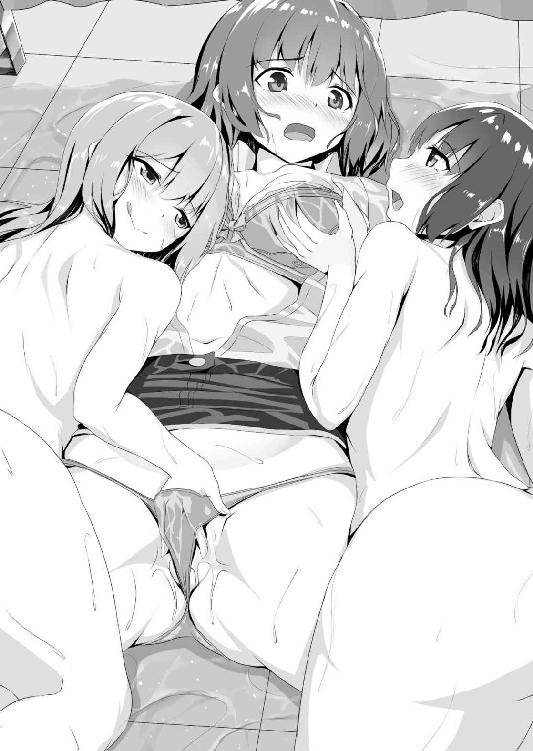
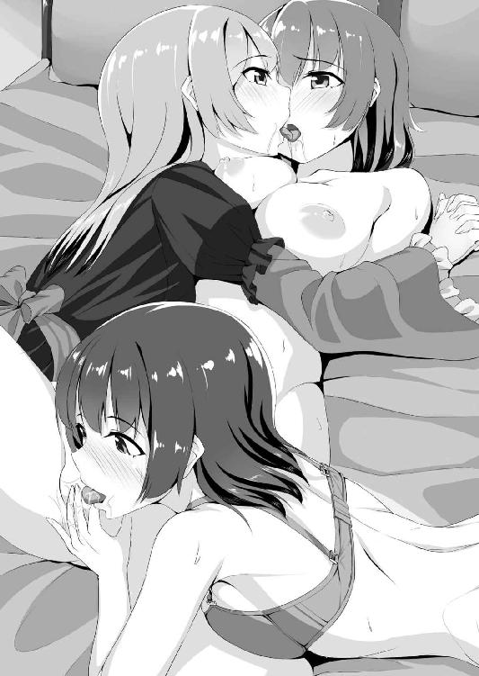
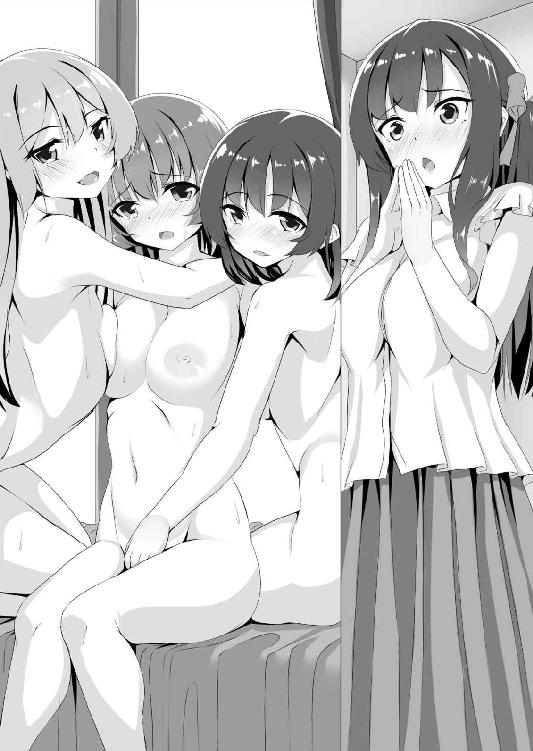

| 百合ドルミッション！ ライバル解散ハニートラップ (二次元ドリーム文庫) | |
| あらおし悠 | |
| (2016) | |
※本作品の全部あるいは一部を無断で複製・転載・配信・送信したり、ホームページ上に転載することを禁止します。本作品の内容を無断で改変、改ざん等行うことも禁止します。また、有償・無償にかかわらず本作品を第三者に譲渡することはできません。
※本作品は電子書籍配信用に再編集しております。
目次
プロローグ アイドル同士の秘密のキス
部屋の明かりを消しているせいだろうか。高層ホテルに似つかわしい大きな窓から、夜景に浮かぶドーム球場の屋根が見える。その白い半球は眠ったように静まり返り、ほんの数時間前まで、四万人以上もの人たちの熱気と興奮に覆われていたとは思えない。
けれども、眼を閉じれば目蓋の裏にありありと甦る。埋め尽くされた客席で揺れる無数のライト。大きな建物を揺らすほどの歓声。そんな夢のような光景を思い出すだけで、身震いするような感動が何度でも湧き上がる。
「どうしたの、歩」
その震えを感じ取ったのか、優しい声が、首筋で揃えた栗色の髪を撫でた。両肩に置かれた彼女の手も、包み込むように背中へと回される。
「......寒い？」
心配そうに顔を覗き込んできたので、ふるふると首を横に振る。
「なんでもありません、おねえさま。今日のステージ、すごかったなぁって......」
「そう......」
百五十五の自分より十センチ高い彼女に視線を上げると、薄桃色の唇が微笑んでいた。ちょっとだけ気恥ずかしくなって、甘えるように彼女の胸に頬を埋める。その拍子に彼女のバスローブがわずかにはだけ、白い谷間が目に飛び込んできた。覗いたブラで、その下に下着しか身に着けていないのが分かり、鼓動が一気に跳ね上がる。
（おねえさま、色っぽぉい......）
滑らかな膨らみをうっとりと盗み見しつつ、自分のラフすぎる格好を悔やんだ。
つい数分前のこと。シャワーを浴びている最中に携帯で呼び出されたので、Ｔシャツに短パンだけで部屋を飛び出した。もう少し彼女に釣り合う服にすればよかったと、まるでデートのコーディネートに失敗した気分。
とはいえ、四つも年上の彼女に色気で敵うはずもない。なるべく彼女の視界に自分の服が入らないように密着する。そうして安心を得てから、薄く開いた眼で再びドーム球場を見下ろした。釣られるように彼女も、同じ場所を感慨深げにじっと見詰める。
今日は、伊波歩が所属するアイドルグループ「エンブレイス」の、結成五周年記念ライブだった。初のシングルがいきなり一位をとる、衝撃的で鮮烈なデビューを飾って以来、常にアイドル界のトップを走り続けている、十人の少女たち。
といっても、歩自身はグループに入って一年ほどしか経っていない。追加メンバーのオーディションを受け、研究生としてレッスンを重ね、ようやく彼女たちと同じステージに立てるようになったばかり。憧れが高じて、駄目元で飛び込んだアイドルの世界。このトップグループの一員になれたことだけでも夢のようなのに。
歩の頬に、そっと手が添えられた。暖かい痺れに促され、彼女の瞳を間近に見上げる。
「おねえさま......」
しっとりとした熱い視線に見詰められると、歩の唇は自然にそう動いてしまう。
左側をリボンで束ねた長い髪。勝気さを感じさせる強い瞳。夢のようだといえば、この少女に抱き締められていることの方が、むしろ歩には信じられなかった。
エンブレイスのリーダー、上乃原瑠歌に。
デビューからわずか五年ほどで、ファンでない人にまでグループの名前を浸透させ、アイドルブームをけん引するカリスマ的存在。
どれだけの少女が彼女のダンスと歌声に魅了され、同じステージに立つことを夢見ていることだろう。ついこの間までの歩も、そんなひとりに過ぎなかった。ただ踊ることが大好きな、ごく普通の女の子。
それなのに、無謀にも挑戦したオーディションに合格した日から、日常が一変した。
いつも隣に、瑠歌がいる。追加メンバーとしてデビューしてから幾度となく観客の前に立ったけど、いまだに夢の中にいるようで足元がふわふわとしているみたいに、現実感が薄い。
「おねえさま、あたし......上手にできてましたか？」
だからだろうか。瑠歌の自信に満ちた眼に見詰められると、どうしようもなく不安に揺さぶられた。トップアイドルと比べること自体おこがましいけど、それでも、曲がりなりにもエンブレイスのメンバーとして、完璧なパフォーマンスを見せる義務がある。
すると、瑠歌は細い眉を少しだけ不快そうに寄せ、歩の鼻の頭を指先で軽く弾いた。
「きゃんっ!?」
「もう......いつも言っているのに、まだ分かってないの？」
瑠歌は唇を尖らせ、子供に言い含めるように、歩の強張った肩を何度も撫で下ろした。
「綺麗に歌ったり踊ったりすることは、もちろん大事。観客は感心してくれるでしょう。でもそれだけじゃ駄目。それだけじゃ足りない。見てくれる人を感動させなければ。夢中にさせて、熱狂させる。それが、私たちアイドルのお仕事」
「は、はい......」
瑠歌を目指して入ったアイドルの世界。だから、彼女に認めてもらいたい気持ちがどうしても強くなる。それを見透かされ、何度も同じ指導をされた。私ではなく、ファンの方を見なさいと。
「そういった意味で、今日の出来は......そうね......」
トップグループを率いるリーダーの目は甘くない。練習で幾度となく悔し涙を流したことを思い出し、抱き締められている温かい感触も忘れて身体が強張る。
「............まあ、及第点、かしら。ステージで不安そうに仲間の方を窺うこともなくなったし、ダンスもこなれて躍動感が出てきたし。でも満点じゃないわ。なにが足りなかったのか、自分なりによく考えなさい」
「は............はいっ！」
先輩たちと比べるまでもなく、至らない点ならいくらでも思いつく。大きく目を見開き夢中で返事をすると、彼女は、まるで妹の成長を見守る姉のように目を細めた。
「それじゃ、硬い話はおしまいにして......」
急に、声が低くなる。部屋にはふたりしかいないのに、周囲の目を気にするアイドルの性だろうか。でも、秘密めいたその響きが、歩の心臓を期待で大きく跳ねさせた。
「頑張った娘にはご褒美をあげなくちゃ、ね」
微笑みながら、瑠歌の小指が歩の唇をスッと掠める。髪が逆立つような甘い静電気で身体が震える。まるでそれが合図であったかのように、歩は、うっとりと眼を閉じた。
さっきとは違う緊張が、熱い吐息となって漏れる。それに絡みつくように、別の吐息が近づいてくる。ふわりと柔らかい感触が、唇に重なった。歩は、反射的に彼女の背中に腕を回してしがみついた。
「............は、ン......っ」
小さな喘ぎが瑠歌の唇に吸い込まれていく。わずかに身じろぎすると、触れ合った唇同士が擦れて、頭の中が心地よく痺れる。
（あぁ......あたし............）
キスをしている。瑠歌と唇を重ねている。
誰かに知られでもしたら即スキャンダル。女の子同士なら、遊びでチュッとするのはよくあること。けれどもこれは、言い訳のしようがない、本気の口づけ。夢を売るアイドルにあるまじき、ふしだらな行為であることくらい、歩にだって分かっている。それでも、瑠歌の唇は蕩けるように甘く、虜になったように離れられない。
（あぁ......。ふ、ン......あんっ......）
いつから彼女とこんな関係になったんだろう。思い出そうとするけれど、瑠歌にきつく抱き締められると、それがあまりに気持ちよくて、思うように頭が働いてくれない。
「............あ」
背中を走るゾクゾクが、歩の記憶を呼び起こした。エンブレイスのメンバーとして初めてステージに立った日の夜、こんな風に、瑠歌に「ご褒美」を貰って──。
「ん......、ふぁ............ン、あッ」
その時の衝撃が快感と共に甦り、歩の呼吸を激しく乱す。最初はもちろん驚いた。けれども、瑠歌の腕の中にいる悦びが、他の全ての感情を押し流していた。レッスンの厳しさに挫折しそうになったことも、先輩たちのレベルに追いつけない悔しさに何度も涙を流したことも。そうして頑張った結果が、この「ご褒美」なのだと思ったら、ファーストキスを同性に奪われたことを疑問とも思わなかった。仲間として認める儀式のようにさえ思えて、むしろ誇らしかったほど。
──これは、私と歩、ふたりだけのお祝い......。
耳の奥に残る、あの時の瑠歌の囁き。他のメンバーにも、もちろんファンにも知られてはいけない秘密の関係。
その瞬間だったのだと思う。憧れは、恋に変わっていた。彼女のために頑張ろう。どんな辛いことも乗り越えてみせようと、新たな決意が心に生まれた。彼女の隣にいても恥ずかしくない自分になれる。彼女のキスが、歩にそう確信させてくれた。
──これから、ふたりきりの時は、私を「お姉さま」と呼びなさい。
だから、そんな要求も、歩はやすやすと受け入れられた。正直なところ、実際に口にすると今でも背中がムズムズする。けれどもそんな羞恥さえ、まるで彼女に服従しているような倒錯的な快感となって、歩を激しく悶えさせた。
「お、おねえさま......おねえさまぁ............」
甘えるように、自ら唇を擦りつける。四歳年上の恋人は、そんな歩に愛玩動物でも見るように眼を細め、そして、少し強めに吸いついた。
「ン、ふぁっ!?」
たったそれだけで、目蓋の裏で火花が散った。仰け反りそうになるのを、瑠歌が引き留めるようにして抱き寄せる。歩は、喘ぎながら彼女にしがみつくので精一杯。わずかな唇の蠢きさえ敏感に感じ取り、緊張と興奮で身体が小さな痙攣に打ち震える。
「あ、あ............！ ふあ......？」
頭が真っ白になりそうになった時、不意に、彼女の唇が離れた。塞がれていた口が自由になって楽になったはずなのに、むしろ胸が苦しくなって、歩は短い呼吸を繰り返した。
「ふ、は......あ、あふ......。おねえ......さま......」
なだめるように、瑠歌が歩の頭を肩に乗せる。けれども彼女の乳房の膨らみを自分の胸に感じ、落ち着くどころかますます冷静ではいられない。
「んふ、歩ったら......。そんなに、私とのキス、好き？」
「そ、それは......あの、あの......」
瑠歌が、愉快そうに唇の両端を上げる。快感を見透かされて、動揺に瞳を右往左往させていたら、彼女が、ゆっくりと体重をかけてきた。
「あ......」
そのまま、ベッドにぽてりと押し倒されてしまう。広々としたダブルベッドに横たわる歩の上に、瑠歌が、悠然と覆い被さってきた。薄闇の中、窓から入る街の明かりが、彼女の顔を半分だけ浮かび上がらせる。
「歩、可愛い......」
瑠歌が、ゆっくりと降りてきた。歩は目を閉じ、再び彼女の唇を受け入れる。ふたりはしっかりと抱き合って、飽きることなく同性のキスに耽った。
「ああ......ああ............おねえさま......好き......好きぃ......ん、ンッ」
歓喜の声さえ彼女の唇の中に溶けていく。このまま時間が止まればいいのに。そんなことは無理と知りながら、願わずにはいられない。
歩は、彼女の体重と唇を心地よく感じながら、ずっと、この関係が続くのだと、なんの疑問も抱くことなく、無邪気にそう信じ込んでいた。
第一章 後輩たちの秘密遊戯
「ワン、ツー、スリー、フォー。ワン、ツー、スリー、フォー！ もっと早く、ダイナミックに！ 歩、遅い！」
「は......はいっ!!」
レッスン場に、ダンス講師の怒声が飛ぶ。海外で活躍していたというだけあって、女性とは思えないパワフルさでトップアイドルにも容赦ない。先輩たちさえ息も絶え絶えなのに、歩なんて動きについていくのがやっとで、振り付けが次第に覚束なくなってくる。
「──今日はここまで！ 十分に休養を取って、疲れを残さないように！」
「「「ありがとうございました！」」」
メニューをこなして颯爽と去る講師を、メンバー揃っての一礼で見送る。ここでわずかでも動きに乱れがあると、休養どころか居残り練習が始まる。
「............ふ～」
彼女の姿がドアの向こうに完全に消えるのを確認すると、張り詰めていた空気がようやく緩む。そうしてＴシャツやタンクトップ姿の少女たちは、伸びをしたり床に寝転んだり、あるいはクールダウンのストレッチをしたりと、思い思いにリラックスし始めた。
「あー、今日もきつかったぁ～！」「も～身体中バッキバキだよぉ」
なんて感じに愚痴くらいは零れたりするけれど、レッスンの厳しさへの文句は誰からも出ない。それが、自分のためになると分かっているから。
人気に甘えない実力を備える。大手事務所の強引な売り出し方には批判も多いけど、そんなもの、圧倒的な歌唱力とダンスのクオリティで黙らせてみせる。彼女たちの日々のレッスンから、歩は、そんなプライドを感じていた。このストイックなまでの向上心が、エンブレイスを選ばれし者に押し上げた原動力なのかもしれない。
とはいえ今の歩に、そんな高尚なことを考える余裕なんてない。それより、新入りにはまだ仕事があった。用意してあったスポーツドリンクとタオルをメンバーに渡して回る。
「おね............瑠歌さん。タオルどうぞ......」
「うん、ありがとう」
もちろん、最初はリーダーに。危うく「おねえさま」と言いかけ、慌てて修正する。ふたりの関係は仲間にも秘密なのに、レッスンで疲れて注意力が散漫になっていた。他の人に聞き取られるほどの声ではなかったので、瑠歌はちょっとだけ咎めるような視線を向けたものの、すぐに笑顔に戻って差し出されたものを受け取った。
（うー......後で怒られちゃうかなぁ......）
そこまでのことではないと思うけど、気に入られたい人のご機嫌は、どうしたって気になってしまうもの。この場で謝れないことをもどかしく思いながら、しかし他のメンバーを待たせるわけにはいかない。
「お疲れさまでした。タオルとお水です」
「はぁい。さんきゅー」
にこやかに、しかし当然のように受け取る先輩たち。同じグループとはいえ、ここには厳然たる序列が存在している。ダンスのレッスンもハードだし、正直なところ、本格的に芸能界入りするまで、アイドルがこんなに体育会系だとは思わなかった。
「──ねぇねぇ。この娘たちって、うちの事務所だったよね」
持ち込んだ雑誌を腹ばいで眺めていたツインテールの先輩が、とあるページを開いてみんなの方に差し出した。その周囲で腰を降ろしていた数人が、どれどれと視線を向ける。ひと通り仕事を終えた歩も、後ろから覗き込んだ。
『これから大注目の新人特集！』
極太文字でタイトルが書かれた記事の、その一番手に紹介されている娘たちをツインテール先輩が指差した。ふわふわのエプロンドレスにボーダーのニーソックス。海外の童話の主人公を思わせる衣装で、背中合わせに立つ二人組。どこか妖しい笑みを浮かべる金色のロングヘアと、もの憂げな視線を向ける黒いショートヘア。雰囲気はまるで正反対なのに、奇妙にバランスが取れた不思議なユニット。
「へぇ、可愛いじゃない。なんていう娘？」
「えっと......『ピュアリーリップ』だって」
すると、離れて談笑していた一団から、呆れたような声が上がった。
「それって半年前くらいにデビューして、凄い勢いで人気を伸ばしてる娘たちじゃない」
それで思い出したのか、雑誌覗き込み組が、一斉に「ああっ！」と声を上げた。もちろん歩も知っている。エンブレイスが独占状態も同然だった売上ランキングに、突如降って湧いたように割り込んだ大型新人。
（本人たちは、どっちかというと小型な感じだけど......）
見るからに背が低そうで、同じ女の子から見ても、とても可愛い。それに、ふたりのタイプが正反対なのが効果的に働いているらしい。この記事にも書いてある通り、それぞれの強い個性に惹かれたファンが、現在進行形で急増しているのだから。
もっとも、ランクインしたのはデビュー時の一曲だけで、勢いに乗って出したセカンドシングルが話題になっている様子は、あまりない。
そんなピュアリーリップとエンブレイスは、実は共演したことがなかった。
彼女たちがデビュー間もないのもあるけれど、なにしろエンブレイスは忙しい。特に最近はスケジュールが立て込んでいて、テレビで歌う時も、他の出演者とは別撮りになることが多かった。バラエティに出る時はだいたい切り売り状態で、数人ずつ、別番組を同時進行で収録していることも多い。今日のようにフルメンバーで練習する機会も減っているし、練習後に時間があるのは本当に珍しい。もちろん、そうなっているのは人気があるからなのだけど、メンバーも薄々、こんな状態はよくないと感じていた。
「最近さ、わたしたち忙しすぎない？」
「まあねー。テレビに出る時、いっつも駆け足だし。どんなに数こなしても、出演時間が短いと、結局は印象が薄くなる気がするんだよねー」
にわかに不満が漏れ始める。新人の台頭が、見えない形でくすぶっていた焦りを刺激したのかもしれない。トップにいるということは、常に追い落とされる位置にいるということ。その危うさを自覚しているからこそ、こうして努力を積み重ねているのだけど。
「なんかさー。ネットなんかで、わたしらがもう落ち目なんて言い方してるのもいるし」
「なにそれ気分悪いなー。そういうイメージって、実際の人気にも影響するかもしれないのに！ ねぇ歩っち。酷いと思わない？」
「そ、そうですね。酷い......ですっ！」
突然こちらに話を振られ、慌てて先輩に同調してみせる。しかし、実は半ば上の空だった。彼女たちの話に、もやもやとした不安が胸の中を覆い始めていたから。
（もしかして......エンブレイスの人気が落ちてきたのって......あたしのせい？）
心当たりというか、人気に関して、歩には一種のトラウマがあった。
自分が加入した時のシングルが、歴代で一番売り上げが悪かったからだ。数字的には誤差というレベルに過ぎないのだけれど、さらなる人気獲得を目的とした新人の加入がプラスに働かなかったことは印象が悪かったはずだし、なにより、歩自身が衝撃を受けた。
ソロでのデビューなら、無名だからと割り切れたはず。けれども、すでに人気の確立したグループでこの結果は、誰もが失望したに違いない。次の曲で持ち直したとはいえ、最初のつまずきは簡単に癒えず、いまだに尾を引いていた。
（今回も......）
責任を感じ、Ｔシャツの襟を握り締める。その間にも先輩たちの愚痴はヒートアップ。そのうち、やはり歩の加入は間違いだったと誰かが言い出しそうな気がして、底の見えない不安に怯えてしまう。
「いい加減にしなさい！」
そこへ、鋭い声が割り込んだ。不毛な雑談が一瞬で静まり返る。
「あなたたち恥ずかしくないの？ エンブレイスがこんな気弱な集団だって知られたら、ファンなんてあっという間に離れていくわ」
リーダーの喝にメンバーはハッとして、だらけていた姿勢を正した。
「私たちはエンブレイス。トップの座は誰にも譲らない。そのために、たゆまない努力を続けている。そうでしょう？」
「「はい!!」」
誰が指揮するわけでもないのに、声を揃えてリーダーに応える。みんなトップアイドルを目指してこの世界に入っただけあって、個性や自己主張が強い娘ばかり。それなのに、瑠歌の前では途端に強い団結を示す。
（やっぱり、おねえさまって凄い......）
仲間を鼓舞し、統率する瑠歌の姿に、歩は瞳を輝かせた。彼女がいれば、どんなに勢いのある新人が出てきたって負けはしない。胸を覆っていた霧のような不安はいつの間にか消え失せて、自分の中にも、自信がみなぎってくるのを感じていた。
「みんなー！ 今日も全力でいっくよーッ!!」
広いライブ会場の客席に瑠歌が呼びかける。大歓声にも掻き消されることのない声。マーチングバンド風の衣装の短い上着を、ひらひらと軽やかに翻し、かつ力強く踊る華麗な姿。飛び散る汗さえ、ライトの洪水の中でキラキラと輝いて美しい。もう慣れてもいい頃なのに、歩はいまだに、自分も同じことをしているのを忘れて見惚れてしまいそうになる。
五周年記念ライブから約一ヶ月。メンバーは気持ちも新たに、今日のステージに挑んでいる。とはいえ──実のところ、みんなの中には、若干の戸惑いがあった。
こんな短期間で、しかも大規模なライブを連続開催するのは、エンブレイス的には異例のこと。それに、いつもならばライブごとになにかしら新しい試みを用意するのだけど、準備期間も少なくて、残念ながら今回はそれもない。ファンクラブ会員限定イベントとはいえ、これでいいのかと迷いを残したまま、本番を迎えてしまっていた。
それでも、来てくれた人たちを満足させるため、全力でパフォーマンスをする。セットリストを最後までやりきった歩たちは舞台袖に引っ込んで、息を整えながらアンコールに備えた。スタッフも、ステージの仕上げに向けて慌ただしく動き回る。
その中を歩いてくる、ふたりの男性。スーツ姿で悠然としているので嫌でも目立つ。
「やぁやぁ。みなさん、お疲れさま」
「プロデューサー？ それに社長まで......」
ひとりは、エンブレイスの総合プロデューサー。このグループの生みの親で、曲作りや衣装のイメージ、ライブステージのコンセプト、果ては各々キャラクター付けまで、全てを取り仕切る業界でも有名なやり手だ。もうひとりは事務所の社長。ふたりが揃って舞台袖にいること自体は、別に珍しくない。けれど、彼らの言い回しが、もうライブが終了したかのように聞こえて、メンバーもスタッフも怪訝そうに首を傾げる。
「あの......私たち、まだ......」
客席からは、繰り返されるアンコールの声。ともかくステージに戻ろうとする瑠歌の肩を、プロデューサーが軽く叩いて引き留め、そして彼女のマイクを取り上げてしまう。
「まぁまぁ、慌てなさんな。君らは僕の後についてきて」
舞台監督はあらかじめ聞かされていたのか、段取りの変更をスタッフに指示し始めた。呆気に取られたエンブレイスの面々も、事情が分からないまま、ともかくプロデューサーの後についてステージに戻る。
（な、なにが始まるんだろう......）
歩は、動揺が顔に出ているのを自覚していた。先輩たちが戸惑っているのに、冷静でいられるはずがない。つい一分前まで我を忘れて高揚していたのが嘘のように、覚束ない足取りで、プロデューサーの後ろに並ぶ。
てっきりアンコールが始まると思っていた観衆の掛け声は、想定外の人物の登場でフェードアウトしていった。入れ替わるように、さざ波のような囁きが会場を覆い尽くす。その反応が予想通りだったのか、プロデューサーは満足そうな笑みを浮かべ、会場を隅から隅まで見渡した。
「さてみなさん。本日はこの場を借りて、重大発表をさせていただきます！」
なんだろう。ファンはもちろん、エンブレイスのメンバーも、緊張した面持ちで予想を巡らせ始める。新曲やライブの話なら、こんなに勿体ぶりはしないだろう。とするとテレビの冠番組が決まったとか、映画とか。そんないい話ならサプライズも大歓迎だけど、同時に悪い予感にも考えが及んでしまう。
（まさか、誰か引退するの？ それとも解散!?）
自分の加入が成果にならなかったトラウマが頭をもたげる。多分、この会場内で一番ドキドキしながら、はやく発表してと心の中で催促する。
「えー、あまり引っ張りすぎて、みなさんが拍子抜けになってもいけないので......」
そんなどうでもいい引き延ばしが無駄な時間に感じられ、ドキドキがイライラに変化しそうになった頃。
「──あゆむ」
しばし、プロデューサーに呼ばれたことに気がつかなかった。だって、メンバーはおろか瑠歌さえ知らされていない「重大発表」に、自分が関係あるなんて思いもよらない。数秒間、棒立ちの時間が流れ、やっと言葉が頭の中に辿り着き、それでも訳が分からずにキョロキョロと左右を見渡し、自分を指差して仲間に確認を取る。
「お前だよ。早く前に出ろ」
その様子があまりに間抜けだったのか、プロデューサーだけでなく会場からも苦笑が漏れて、空間に張り詰めていた緊張が幾分か和らぐ。ただ、メンバーだけはその空気に置き去りにされていた。なぜ歩なのか、彼女たちの顔に浮かぶのは困惑だけ。それは瑠歌も変わらない。頼みの恋人にも見放されたような心細さの中、震える脚で前に出る。
（どうしよう......役立たずは今日でクビです、なんて言われたら......）
もう、アイドルでいられないんだろうか。みんなと歌ったり踊ったりできないんだろうか。レッスンは辛かったりするけれど、やっと楽しいと思えるようになったのに。
瑠歌のおかげで。
彼女に愛されて、歩はアイドルを続けられる自信を得られた。なのに、クビになったら彼女とも会えなくなる。歩はギュッと目を閉じ、祈るようにマイクを握り締めた。鼓動が速くなって、今にも倒れてしまいそうだ。
「さて、この伊波歩ですが、実はこのたび......」
プロデューサーが、朗々と語り始める。会場が固唾を飲んで自分を見ている。
なにが起きたんだろうか。周囲がガヤガヤ騒がしい。
サプライズ発表の後の記憶がない。おぼろげに覚えているのは「がんばります」という自分の挨拶。それすら現実感が乏しくて、確かに言ったという自信が持てない。
楽屋だし、ステージ衣装を着たままだし、夢を見ていたわけではなさそうだ。目をパチクリさせると、会議机の向かい側にプロデューサーと社長が座っている。
（あー。そういえば、後で詳しく説明するとか言ってたような......）
それはまだ、なされていないようだった。その代わり、彼らを取り囲んだメンバーが、激しく抗議している。
「ふざけないでよプロデューサー！」「なに考えてんの！」「撤回してください！」
団結した女子集団は容赦がない。次々と繰り出される苦情の弾幕におじさんたちは冷や汗を流すばかりで、ろくに発言させてもらえない。ただでさえ記憶が曖昧な歩にとって、このカオスな状況は、さらに混乱させられるばかり。
（そうだ！ おねえさまは......）
瑠歌の姿を求めて視線を巡らせる。しかし彼女を見つける前に、耳に飛び込んできたメンバーの声が、どこかに飛んで行っていたステージ上の記憶を引き戻した。
「どうして歩がピュアリーリップに移籍なんですか!!」
身体がビクンと、引き攣ったように一回跳ねる。
歩は、エンブレイスを抜け、別グループに移動することになったのだった。先日、雑誌で見ていた、あの小柄な二人組のところに。
「だから、その説明を今からするんだよ！ 社長ぉ、やっぱりこの娘らには前もって知らせておくべきでしたねぇ」
「それじゃサプライズにならないって言ったのは君だろう」
メンバーの反発が予想以上だったのか、困り顔のおじさんたちは責任のなすりつけ合いを始めた。ともかく、このままでは話が進まない。プロデューサーは咳払いして、呆然としている歩に向き直った。
「実は今度、ピュアリーリップをエンブレイスの妹分という設定で再デビューさせることが決定したんだ」
「妹分？」「なにそれ」「それでどうして移籍なんか......」
「だから聞けって！ まったく......。で、そのピュアリーリップなんだが......」
なにか言うたび何人もから反論されて、さすがにプロデューサーも苛立ちを隠せない。
「現状で出ている結果が悪いわけではないんだが、一発屋で終わってしまう懸念がなくもない。そうならないための、まあ、有り体に言えば、テコ入れだ。それなら君たちの力を借りるのがいいという話が出てね。で、エンブレイスの妹分とするなら、繋がりを強調するために、メンバーをひとり移籍させるのはどうだろうかと」
「それで白羽の矢が立ったのが、伊波くんというわけだ」
社長が言葉を継ぐ。現場で顔を合わせるプロデューサーになら意見できるメンバーも、社長相手にはさすがに文句も言えず、不満を溜め込むような顔で押し黙ってしまった。
「伊波歩は一週間後、ピュアリーリップに正式に移籍する。これは決定事項だ」
プロデューサーが、文句を封じるような鋭い目で、女の子ひとりひとりに視線を巡らせた。人気アイドルとはいえ、所属事務所の方針には容易に逆らえない。歩自身さえ、いや自分のことだからこそ、冷静に考えることができなかった。
これで話は終わり。そんな雰囲気が流れ始める中、リーダーがぽつりと呟いた。
「まだ聞かせてもらっていません。どうして、歩なんですか」
それを聞くまでは納得しない。大観衆の声援にも負けない彼女の声は、強権を持つプロデューサーすら、一瞬、言葉を詰まらせるような凄みがあった。
「どうして歩が選ばれたんでしょうか。彼女は、加入してまだ一年なのに」
「そ、それはな」
半分以下の年齢の少女に迫力負けするわけにはいかないと思ったのだろう。気負いすぎて、プロデューサーの声が少し上擦る。それでも、エンブレイスを人気グループに育て上げた手腕は伊達じゃない。
「それこそが理由だよ。エンブレイスの名前を背負いつつも、まだイメージに染まりきっていないから、グループを移った時に違和感が少ない。あとは年齢だな。一番ピュアリーリップの娘たちに近いのも大きい。まあ他にも色々あるが、総合的に判断して、だ」
そして最後に「納得してもらえたかな？」と念を押す。ヒットメーカーが戦略を練った上での移籍話。瑠歌といえども、それ以上の口出しは不可能だった。
マンションに戻った時には、日付が変わっていた。
歩はシャワーを浴びるのも忘れ、下着姿で膝を抱えてベッドに座り込んだ。そして焦点の合わない眼で、手に握ったスマホの画面を眺める。
今日のライブでの発表は、すでにネットでも話題になっていた。ファンの間では移籍に賛否両論、というのを予想していたけれど、微妙に論点が違っている。
──伊波は左遷か。あんまりエンブレイスの人気向上に貢献した感じなかったし。
──ピュアリーだって人気グループだぞ。左遷はないだろ。
──いや、これは事実上の放出だよ。事務所も酷なことするな。
移籍の是非よりも、話題はその理由を想像するものばかり。誰も引き留めてくれるつもりがないと感じた歩は、投げ捨てるようにスマホを床のクッションに放り出した。
「......もう！」
ふて寝するように、うつ伏せでベッドに倒れ込む。ネットの議論を真に受けても意味はないと分かっていても、状況を受け入れきれない不安定な心には、些細な言葉のひとつひとつが、棘のように鋭く突き刺さる。
「あたしは......エンブレイスにいらない子なの......？」
芸能界の第一線で活躍してきた先輩たちに比べたら、一年生の自分が至らないのは当たり前。でもプロとしてお客さんの前に出るなら、そんな甘えは通用しない。事務所の戦略という説明よりも、ネットの「左遷」という放言に納得してしまうのが悔しい。
「それに......別のグループになったら......おねえさまとは、もう......」
事務所を移籍するわけでも、ましてや業界から引退するわけでもない。それでも、会える機会は間違いなく激減する。頑張ったご褒美だって、きっともう貰えない。
胸が、苦しい。見えない手に心臓を締めつけられているみたいに呼吸が詰まる。誰かを好きになったのなんて瑠歌が初めてだから分からないけど、この感覚はきっと、失恋に近い。だって、すごく気分が投げやりで、身体が重くて、なにもする気になれない。
「やだやだ。やだよぉ......。移籍なんてしたくないよぉ............」
子供みたいに駄々を捏ねてみる。こんな時のひとり暮らしは、少々変な言動をしても聞き咎められないのが気楽でいい。その代わり、誰にも慰めてもらえないけど。
「おねえさま、は......どう思っているんだろ......」
もしかしたら彼女なら、移籍話をなかったことにできるんじゃないだろうか。おそらく無理とわかっていても、そんな妄想にさえすがりつきたくなってしまう。
仰向けに転がって、胸をぐっと強く掴んだ。痛みを感じるくらい、乳房に指を食い込ませる。そうでもしないと、重い気分に押し潰されてしまいそうだ。
「う......っ」
目を閉じると、涙が浮かんできた。このまま考え込んでいたら、本格的に泣いてしまいそうだ。今さら自分ではどうしようもないのだから、気持ちを切り替えることにした。
深呼吸のように息を吐き、瑠歌のことを、大好きな人のことだけを考える。辛さを忘れて、幸せだけに浸って、今日はこのまま眠ってしまおう。
すぐに、目蓋の裏に愛しい人が現れた。ステージの上以外では規律に厳しく、毅然としている彼女も、自分の前では優しく微笑んでくれる。でも、今日はそれが少し寂しげに見えて、歩は思わず、妄想に向かって手を伸ばした。すると彼女の笑みも心なしか柔らかくなって、髪を撫でてくれる。そして無言のまま、顔を近づけてきた。
「............あ......は、ン......」
妄想なのに、まるで本当に口づけているように唇が震えた。キスの記憶が感覚も支配したのか、ゾクゾクとした快感が甦る。半開きの唇から、自分でも驚くほどの、いやらしい喘ぎが漏れる。それに、掌で胸を覆っていたのがいけなかった。小さく身じろぎしただけで、ブラの裏地が先端を擦る。
「ン──ッ!?」
甲高い声が迸った。感電するような痺れが、身体の内側を一気に走り抜ける。それは脚の間にも到達し、歩は堪らず内腿を擦り合わせた。けれども、それは余計な行為だった。敏感になった素肌から、心地いい静電気が身体の中心に集まっていく。
（や、やだ......そこは......）
そこを意識してはいけない。そう思っても、右手が、自然と下半身に伸びていった。そろそろと、戸惑いがちに、それでも確実に疼きの発生源へと向かっていく。
「だ、だめ。そんなことしちゃ......。あ、あたしは......あたしは......！」
唇を噛んで右手の侵攻を阻止しようとする。こんな時にと思うのに、止められない。目蓋の裏の瑠歌が、そそのかすように囁きかける。
──いいのよ......。
「そんな......おねえさま......っ！」
自分が生み出した妄想なのに、彼女の声に逆らえない。中心の割れ目から熱いものがじわりと漏れて、下着を濡らす。
前に一度だけ、彼女を想って自分を慰めたことがあった。大好きな人を汚したような罪悪感に、もうしないと決めたのに。ましてや、今の自分は全国区のアイドルの一員。いくら不安に苛まれようと、自慰なんてしたらファンを失望させてしまう。
「でも......でも、あ......」
右手の中指が下着に触れた。布地と肌との境界線を焦らすようにしてなぞり、自ら淫らな期待を膨らませる。待ちきれないように鼠径部が引き攣る。下着の中の淫靡な器官が、まだかまだかと甘い疼きで催促する。
もう止められない。歩が考えるのをやめ、一気に指を進めようとした、その時。
それを咎めるように、甲高い電子音が部屋中に響いた。
「うわぁぁっ!?」
心臓が飛び出るほどにびっくりして跳ね起きる。なにごとかと首を巡らせると、さっき放り出したスマホが鳴っている。
着替えるのももどかしく、歩はマンションを飛び出した。こんな真夜中に瑠歌からの呼び出し。もちろん、どんなに遅くたって断るなんて選択肢はない。息を切らして待ち合わせ場所へと走って向かう。
そこは、歩のマンションから大通りを挟んで向かいにある児童公園。賑やかな場所のわりに敷地の中には街灯が乏しく、大きな立木のせいで夜は真っ暗。ただ、周囲を囲んでいるのは背の低いレンガの塀だけなので、意外と内側をよく見渡せる。
「............おねえさま！」
だから、そんなところに立っていたのに、シルエットだけで彼女と分かった。その人影は歩の声に振り向くと、静かになさいと言うように人差し指を唇に当てる。確かに、もうとっくに時計の針がてっぺんを回っている時間。ご近所迷惑だし、なによりも女の子のアイドルの夜歩きなんて、写真週刊誌に見つかったら格好の餌食になる。また失敗したと肩を竦め、逸る気持ちを抑えながら、足音を立てないように瑠歌に駆け寄る。
「ごめんなさい、こんな時間に。もしかして、寝ていた？」
こちらより先に、彼女の方から頭を下げた。歩はふるふると首を振り、我慢できなくなって目の前の胸に飛び込んでしまう。
「急にこんなことになって、不安だったでしょう。......本当にごめんなさい。私も全然知らなかったの」
「そんなっ。おねえさまが謝ることじゃ............きゃっ」
歩が顔を上げるより早く、背中に回った腕に抱きすくめられた。そんなに強い力じゃない。それでも、しっかりと伝わってくる彼女の温もりは、不安定になっている心を激しく揺り動かした。
「あたし......嫌です......。おねえさまと一緒にいたい......。他の娘となんて、うまくやれる自信がありません！」
無意味なことだと承知の上で、我侭を訴える。瑠歌と離れるのが平気だと思われたくなくて。彼女だって歩の気持ちは分かっているはず。そう思っても、本当に理解してくれているか心配で、心ならずなのだと、渋々なのだと、しつこいほどに強調する。
「我侭を言っては駄目。アイドルは、事務所の決めた通りに動くの。事務所やプロデューサーが設定したキャラクターを演じるだけ。そこからはみ出すのは許されないわ」
「そんな......それじゃ、あたしたち、ただのお人形じゃないですか！」
トップを極めた彼女が、そんな古くさいアイドル像に縛られているはずがない。崇拝する気持ちが逆に反発心になって、思わず食ってかかる。
「もちろん、ただの人形にファンは惹かれないでしょう。そこに魅力を上乗せするのは、私たち自身だもの。......でもね、設定された範囲を越えて勝手をしたら、事務所にはいらない子扱いされちゃうの。......言ってること、分かるわね？」
聞き分けのない妹をあやすように、穏やかな手が髪を撫でた。
瑠歌は最初、歩を励ますつもりだったんだろう。そうでなければ、わざわざこんな時間に呼び出したりするはずがない。なのに当の本人が子供じみた駄々を捏ねたせいで、彼女に無粋な説得をさせてしまった。
「はぁ............」
情けなくて溜め息が出る。考えてみれば、彼女は五年以上もショービズという厳しい競争社会を勝ち抜いてきた人。そんな強い女性から見たら、移籍ぐらいで泣き出す自分なんて、分別のない幼児みたいなものだろう。
でも、その分別ある大人のはずの瑠歌だって、こうしてアイドル的にタブーの夜歩きをしている。お肌に大敵だし、誰かに見られたらイメージを損なうことだってある。そんな危険を冒してまで会いにきてくれたということは、つまり、それだけ今の歩が危なっかしくて心配な存在だということ。
（あたし......おねえさまに抱き締めてもらえる資格なんて......ない）
恥ずかしくて、居た堪れなくなって、彼女の腕から逃れようとした。なのに、温もりから離れるのが惜しくて身体が動いてくれない。ますます自分を嫌いになりそうだ。
歩は、もう喋ることさえできなくなって、ただ、無言で俯いた。
「ねえ、歩」
瑠歌が、静かに声をかけてきた。今度はどんなお説教をされるのだろうと、彼女の腕の中で身体を硬くする。
「本当に、移籍はイヤなのね？」
これ以上、おねえさまを困らせられない。そう思った歩は、寂しさをぐっと堪えた。
「いいえ。もう我侭は言いませ......」
「なら、ピュアリーリップを解散に追い込みなさい」
「は、はい。............え？」
話が急激に方向転換されて、歩の頭では理解が追いつかなかった。今、彼女はなんと言っただろう。
「え、あの......解散って？」
「ピュアリーリップが解散すれば、すぐにエンブレイスに戻ってこられるわ」
「ちょ......ちょっと待って、おねえさま。一体なんの話を......」
解散という単語だけが頭の中でぐるぐる回って、どうしても理解がワンテンポ遅れる。混乱する歩を、瑠歌は苦笑して見下ろした。
「歩、エンブレイスを出るのがイヤなのでしょう。でも事務所命令には逆らえない。それならどうする？ 答えは簡単。移籍先を失くしてしまえばいいのよ。ピュアリーリップに移ったら、人気が出ないように工作して、バラバラに壊してあげるの」
こんなに噛み砕いて説明してくれているのに、少しも頭に入ってこない。確かに移籍は不安でいっぱい。瑠歌と別れるのも悲しい。だけど、どうしてもそれが後輩グループの解体と繋がらない。
「そんな......。じょ、冗談......ですよね？」
「まさか、本気よ。私、あなたを取り戻すためなら手段は選ばない」
何気ない口調は、逆に歩を戦慄させた。彼女の迷いのない瞳に背筋が震える。唖然として言葉が継げない。自分がなにを言っているか分かっているんだろうか。恋人を取り返すために後輩の妨害を、それも歩自身にしろだなんて。
「内部からの方が、崩壊させやすいでしょう」
「そうかもしれないけど......でも、それって......」
事務所方針に逆らうなんてレベルじゃない。反逆というか、裏切り行為に等しい。さっき、自分たちのことを「事務所の決めた通りに動くだけのお人形」と言っていたのと矛盾する。
「分かっているわ。許される話じゃないって」
「だったらどうして............あっ......」
納得できずにいる歩の頬を、彼女の指が下から撫で上げた。妖しく細められた瞳に射竦められ、さっきの寒気とは異質のゾクリとした痺れが、抗議の声を黙らせる。
「私だって......あなたを手離したくない。他の娘に取られるなんて、絶対に、イヤ」
「おねえさま......」
甘い囁きに、身体を貫かれる。戸惑いと歓喜が混ざり合った複雑な感情が、歩の眼を大きく見開かせる。
この一年、幾度となく抱き締められたりキスをされたりしてきたけれど、こんなにも素直に愛情を示されたことはなかった。心のどこかで、もしかしたら瑠歌にとっての自分は気まぐれな遊び相手に過ぎないのかもと、そんな風に考えることもあった。それでも構わないと思っていた。だって、上乃原瑠歌の愛玩人形になるなんて、そんなことすら普通は叶わない夢なのだから。
嬉しかった。完璧と思われる彼女が、嫉妬の感情を露わにしてまで自分を求めてくれることが。ただ、それでも──自分なんかを取り返すために、そんな危険な計画が必要だとはどうしても思えなかった。彼女の思惑を測りかねる。嬉しさで高鳴っているはずの胸の鼓動に不安や怯えの音色が混じり、不協和音を奏でている。
「あの......あの！ な、なにも解散なんてさせなくても......。あたしなんかのために、後輩を困らせるようなことなんてできません......！」
「そんなの......分かっているわ」
払拭しきれない疑問をぶつけると、瑠歌は、苦悶するように、言葉を吐き出した。
「でもね、これは歩のためだけじゃないの。エンブレイスを......私たちの居場所を守るためでもあるのよ」
「ピュアリーリップを解散させることが......ですか？」
瑠歌の顔から余裕が消えていく。低い声に苦悩が滲み出る。敬愛するおねえさまの言うことは全部信じたい。我ながら愚かしいとは思いながら、歩は彼女にすがりつくようにして、その声に耳を傾けた。
「ピュアリーリップは......これからどんどん大きくなるわ。分かるの。今はまだ小さな芽だけど、すぐに私たちに追いつき、追い越して、いずれ、その人気はエンブレイスを霞ませることになる」
「まさか。そんな簡単には......」
「人気ってね、永遠じゃないの」
それは、悟ったように静かな声だった。けれども、ごく単純な真実であるだけに、夢ばかり見て現実から目を背けがちな歩の胸を、深く鋭く抉った。
「あの娘たちには、力がある。事務所は、エンブレイスと競えるだけの存在にして、二枚看板で売っていきたいんでしょうけど......大衆は、すでに安定した人気を得た方と、勢いのある新しい方と、どちらに強い関心を示すのかしら」
まるでエンブレイスが敗北するかのような言い方に、愕然とする。メンバーの弱気を叱咤していたリーダーの言葉とは思えない。
「で、でも......！ 同じ事務所の後輩ですよ？ ふたつのグループで協力し合って、もっと人気が出るように......」
瑠歌は、小さく首を振った。
「もし、まったく違うジャンルの......ファン層が被らないグループなら、気にすることはなかったと思う。でも姉妹グループとして売り出すということは、イメージを近づけるということ。どんなことが起きるか、想像はできるわね？」
相乗効果で売り上げが伸びればよし。その目論見が外れて、売り上げを食い合うようになったら。その時、勢いのある新人に世間の関心が向くようになれば。
人気商売だから、どう転ぶかは誰にも想像できない。彼女は事務所の思惑の先読みをして、危険な芽を摘み取ろうとしている。
「後輩を潰そうだなんて、悪者みたいで格好悪いと思っているでしょう？ でも、私はリーダーだから。自分のグループをナンバーワンで居続けさせる義務と責任があるの。格好悪くてもみっともなくても、私は......エンブレイスを守ってみせる」
瑠歌の声が低く震える。まるで恐怖に耐えるように、歩の肩を強く掴む。頂点まで上り詰めた彼女に怖いものなんてあるんだろうか。追われる者の重圧があるとはよく聞くけれど、メンバーの背中を追うだけで精一杯の歩に、彼女の苦悩を理解するのは難しい。
それでも、肩を掴む手の強張りが、彼女の責任感と覚悟を痛いほど伝えていた。引き摺り下ろされてたまるものかと、その手が言っている。
「おねえさま！」
歩は、自分でも驚くような鋭い声で、瑠歌を見上げた。いきなりバネで弾かれるような勢いで顔を上げたので、彼女も目を見開いて驚いている。
「あたし、やります！ なんでもやります。やってみせます！」
彼女だけに泥を被せるわけにはいかない。駄目なことだと分かっているけど、瑠歌の力になりたかった。歩も、自分の居場所を守りたかった。やっとの思いで入れたエンブレイスという居場所を壊させないために。瑠歌の隣に居続けるために。
「あたしになにができるか分からないけど......でも............ンあんっ」
がばっと、強い力で抱き締められた。力んでいた声が、変な風に裏返る。
「ありがとう歩......。ごめんね。私が非力なばかりに、あなたを変なことに巻き込んで」
「そんな......。あたし、おねえさまの力になれれば、幸せです」
それは、偽らざる本心だった。悪事に手を染めるようで緊張するけど、馬鹿な子だと自分でも思うけど、それでも、今は目の前で苦悩している瑠歌を助けたかった。
共犯意識が歩を異様に高揚させた。彼女もそうなのか、耳朶をくすぐる吐息が熱い。
「歩......」
「............あ」
過敏になった肌が、耳に吹き込まれる囁きに反応し、ゾクゾク痺れる。思わずうっとりと目を閉じ、反対に半開きになった唇に、彼女の熱い息が、ゆっくりと重なってきた。
「可愛い。可愛いわ、歩......。あなたを、もっと私のものにしたい......」
「あ、あたしは......もう、おねえさまの............あ、ふ......っ」
キスしながら囁き合うと、唇の擦れ合う感触と混じり合う吐息がくすぐったくて、気が遠くなりかけた。まるで痙攣するように、身体が小さく何度も跳ねる。こんなに気持ちいいキスは初めて。もっと深く繋がりたくて、彼女の首に腕を巻きつけ唇をぐいぐい押しつける。するとそれに応じるように、彼女の舌が上唇と下唇の隙間をチロリと掠めた。
「ンあぅんッ!!」
触れ合うだけのキスしかしたことのない歩にとって、たったそれだけの悪戯が衝撃的だった。反射的に仰け反るけれど、瑠歌の左腕がしっかり背中に回され身動きが取れない。まるで猫が毛づくろいをするように舌先で唇を舐められて、顎がガクガクと震え出す。
「お、ね、え、さま......それ......こんなのって......ふぁんっ」
歩も舌を小さく突き出していた。本能的に、瑠歌のそれに絡ませようとする。その気配に気づいた彼女は、スッと唇を引っ込めてしまった。
「あんっ......」
おねえさまの意地悪に、思わず不満の吐息を漏らす。しかし彼女はそれを咎めることなく、むしろ正直に欲情を示す恋人に目を細めた。
「んふっ......。そんなにこれが欲しいの？ でもダメ。......まだあげられないわ」
見せつけるように、舌をひらひら。唾液に濡れた紅色の淫靡さに、歩は口腔内に溜まっていた生唾をゴクリと飲み込んだ。意外に大きな音がして、恥ずかしさに顔を逸らす。
そんな羞恥を感じながら、でも歩の胸は、彼女の期待を持たせる言葉に高鳴っていた。
「ま、まだ......？」
興奮しすぎて呼吸が荒くなってきたせいだろうか。どことなく意識が朦朧としてきた。彼女の舌が踊るのを、霞む視界でぼんやり眺める。
「そうよ。ご褒美は、ちゃんとお仕事ができてから。もし、うまくいったら......」
「いったら............ふぁっ!?」
それは完全に不意打ちだった。下半身に電流のような快感が走り、呆けた頭が一瞬で目を覚ます。それでもまだ寝起きのように混乱し、なにが起きたのか把握できない。
「おねえさま、なにを......ふぁンっ」
「んふっ、気持ちいいでしょ。......ほら、もう一回......」
「え......？ え、そこは......!? ちょ、待っ......あ、くぅん......ッ!!」
彼女の指がスカートに潜り込み、爪の先で下着の中心を引っ掻いている。本当に、軽く布地に触れている程度。なのに、ひと撫でごとにピリピリとした鮮烈な痺れが全身を貫いて、感電したように手足が強張る。
「あ、あ......なにこれ......や、あぁぁ......あん......！」
腰が言うことを聞かず、勝手に躍り出す。膝が震えて立っていられない。歩は瑠歌の肩にしがみつき、崩れ落ちそうになる脚で必死に耐えた。なのに、彼女のからかうような含み笑いが耳をくすぐって、なけなしの力を奪い去っていく。
「あらあら。そんなに震えちゃって......。ここ、触ったことあるくせに。んふっ......私を思い浮かべてオナニーしたこと、あるんでしょ？」
「そ......そんなこと............そんな......ふ、あぁぁぁ......！」
歩は羞恥で涙を浮かべながら、必死になって首を振った。さっき自分の部屋で始めそうになったのを知っているかのような瑠歌の言葉に、身体が竦む。
（そ、それに......それに............おねえさまがオナニーって......！）
彼女だってもう大人なのだから、知っていたって不思議じゃないけど、それでもトップアイドルが口にしていい言葉じゃない。歩は色々と状況を整理しきれず目を回した。
「だ、だ......ダメです、おねえさ、まっ......。こ、ここっ......こんなところで......！」
無意識に口走った自分の言葉で、歩は少しだけ我に返った。そういえばここは屋外。トップアイドルが、しかも女の子同士でエッチな行為をしているなんて、誰かに見つかったら大スキャンダル。移籍どころの騒ぎじゃなくなる。
「大丈夫よ。もう終わりにするから」
瑠歌の指先が最後に軽く、下着と脚の境界線、鼠径部をするりと撫でた。全身が総毛立つような痺れに最後の力を奪われて、歩はぺたりと地面にお尻をついてしまう。
「んきゅ......あふ、ふ、あ......」
まるでお漏らしでもしたように、股間が熱い。それを悟られるのが恥ずかしくて、歩は真っ赤に顔を染めながら、スカートの短い裾を懸命に伸ばして下着を隠す。
瑠歌は、そんな浅ましい姿を微笑みながら見下ろし、指先をぺろりと舐めた。
「んふ......今夜はここまで。でも、もし私の命令を遂行できたら、キスも、今のよりもーっと凄いことも......ふふふっ、好きなだけ、してあげる」
「............おねえ、さま......」
今のより凄いことってなんだろう。歩は、これから実行に移すべき命令の内容も忘れ、未知の快感の予感に身体を震わせた。
（うう、居心地悪い......）
会議室の椅子の上で、歩は何度もお尻の位置を直した。目の前に居並ぶのは、これから一緒に仕事をしていく新しいスタッフ。同じ事務所の人なのに、ほとんどが初対面。
正式にエンブレイスを抜けた歩は、今日から、ピュアリーリップの一員になった。
「僕が、このプロジェクトのチーフマネージャーだ。面倒臭いんで、みんなは手っ取り早くチーフと呼んでいる。そして、彼が音楽担当プロデューサー。彼女が衣装担当。そしてこちらが......」
次々と紹介されるメインスタッフの顔と名前を、一心不乱に頭に叩き込む。この業界、優しい人ばかりじゃない。重鎮の中には、下手に名前を間違えたりしたら致命的なほど機嫌を損ね、二度と仕事をしてくれない人がいる──と、瑠歌に教えられた。
この場にいるのは比較的若い人ばかりだけど、歩は一番の新入りになるわけだし、失礼のないように気をつけておくに越したことはない。
「......そして最後に、こちらのお嬢さん方が、ピュアリーリップのおふたりさんだ」
歩の正面に座る少女たちが、同時にちょこんと頭を下げる。まるで双子か、機械仕掛けの人形のように息ぴったり。その愛らしい動きに、思わず心の中で感嘆の声を上げる。
（うわぁ......。雑誌で見るより何倍も可愛い......）
歩より、さらに五センチも低いという小柄な体格もよく似ている。けれども、その容貌や雰囲気は、直に見てもやっぱり正反対だった。
「まずは、君から見て右側に座っているのが、望月夜々ちゃん」
「はぁい。よろしくお願いしまぁす」
愛想良く、にっこりと微笑みながら会釈する少女に、釣られて歩も頭を下げた。甘い声は飴玉のように蕩けてしまいそう。吊り目がちだけど、強い意志が表に出ているような瑠歌とは少し印象が違う。常に笑みを湛えているような唇と相まって、どことなくミステリアス。金色に輝く長い髪に、色素の薄い肌も日本人離れして、実は美少女吸血鬼ですなんて言われても、即座に信じてしまいそうな妖しさがある。
「あの......もしかして外国の方？」
反射的に疑問を口にしてしまった。初対面で出自を聞くなんて失礼だったかもと、すぐに反省したけれど、彼女は気にする様子もなく、微笑んだまま小首を傾げた。
「何代か前のご先祖に、そういう人がいたらしいです。でも、夜々は日本人ですよ」
よく聞かれることなんだろう。答え方に淀みがない。危うく、第一印象で嫌われるところだった。
（......て、あたしはこれから、この娘たちに嫌われることをするんだった......）
転校初日のような緊張感とは別の、重い気分が、急に胸にのし掛かる。もうひとりの少女の表情が、その罪悪感に拍車を掛けた。
「それで、左側の娘が村居紗雪ちゃん」
「お、お願いします............」
語尾が消えて、よく聞き取れなかった。名前通りの白くて淡い肌に、肩にかかる黒髪がよく映える。こちらを見詰める瞳も弱々しい。歩もそこそこ内気な方だけど、こんなにおとなしくてアイドルなんてできるんだろうかと心配になるほど。
ただ、彼女のファンには熱烈な人が多いらしい。現に歩も、怯えるウサギのように震える彼女を見ていたら、胸がキュンと締めつけられてきた。儚げで、切なげで、すごく保護欲を掻き立てられる。
夜々も紗雪も、決して自己主張が激しいわけではないのに、強烈な個性を放っていた。この中に入っていくのかと思うと、急速に自信が萎んでいく。
（このグループでの、あたしの役割って......なに？）
なんの準備もなしに合流してしまったことを、激しく後悔する。エンブレイスにいるうちに、もっと自分らしさというものを考えておくべきだった。誰に追及されたわけでもないのに、アイドルとしてのアイデンティティを問われた気がして、焦燥感に襲われる。
「よろしくお願いしますね、先輩」
「は......はいっ！ こちらこそお願いしますっ！」
夜々が、長い髪を揺らしながら微笑む。「先輩」の部分に過剰に反応した歩は、お辞儀をした拍子に思いきり机に額をぶつけた。ガツンと大きな音が響いて、みんなにクスクス笑われる。初日なのに、いきなりドジを披露してしまった。居た堪れなさに、真っ赤になって肩を竦める。
（ううっ......。半年くらいしかキャリアが違わないのに......）
それでも先輩は先輩。しかも、曲がりなりにも人気グループにいたのだから、相応の目で見られて当然。一応は心得ていたつもりだけど、実態はそう簡単には伴ってくれない。ただでさえ不審げだった紗雪の眼に、あからさまな不安の色が混じっている。こんなことで仲良くやっていけるんだろうか。
（まぁ......そうじゃなくたって、ふたりで頑張っていこーって矢先に変なのが割り込んできたわけだし......普通は面白くないよね）
ただ、紗雪以外は全体的には歓迎ムード。移籍という名の捻じ込みへの反発も覚悟していただけに、歩はひとまず胸を撫で下ろす。
果たしてこれが一時的な編入なのか、はたまた永続的な所属なのか、先の予定はまったく未知数。なにしろ総合プロデューサーに直接尋ねても「未定だ」としか返ってこなかった。足元が定まらない感覚は、どうにも非常に居心地が悪い。
（どうしよう......おねえさまの計画、本当に進めていいの？）
人懐っこい夜々の笑顔。頼りなげな紗雪の瞳。この可愛い少女たちを悲しませるのは、さすがに胸が痛む。
（ア、アイドルの世界は綺麗事だけじゃないの。ライバルは蹴落とされるのが宿命なの）
悪者になりきれ。甘さは捨てろ。ぐらぐら揺れる自分の心に、そう言い聞かせる。
そうこうしているうちに、顔合わせのミーティングが終わった。みんな、それぞれの仕事に戻っていく。
「新衣装のための採寸をするから、三人はもうちょっとだけここで待ってて」
「新衣装？ あ、そっか。あたしが入ったから......」
「うん。それで宣材も撮り直すことになるからね」
宣材とは、タレントを売り出すのに使ったり、企業がＣＭに起用する芸能人を選ぶのに使われたりする写真。使う側がそれでイメージを掴むので、どんなポーズや表情で撮るかはとても重要。ピュアリーリップは二人から三人に増えたので、当然、それも新しいものにしなくてはいけないことになる。
「ご......ごめんね。宣材の撮り直しなんて、面倒でしょ」
彼女たちは半年前にも同じ作業をしているはず。すると夜々は瞳を細め、上品な微笑みを向けてきた。
「いいえ。写真撮影自体はお仕事としてはよくありますし。それよりも......」
下唇に人差し指を当て、考えごとをするように小首を傾げる。何気ない仕種なのに、年齢に似合わない色気があって、歩は不覚にもドキリとときめいてしまった。
「そ......それよりも？」
ぽってり艶っぽい唇に目を奪われながら、深く考えることなく反射的に聞き返す。
「先輩が抜けたってことは、エンブレイスも宣材写真を撮り直すんですよね？」
「あー。う、うん......どうなんだろう。あたしが入る前のに戻すのかなぁ」
自分のことだけで精一杯で、そこまで頭が回らなかった。すると、部屋を出ていきかけたチーフマネージャーが、振り返って教えてくれた。
「いや、新しいのにするらしいよ。クライアントにタレントを覚えてもらうためのものだから、普通はコロコロ変えたりしないんだけどね」
「へ～。大盤振る舞いですね～」
歩が返事をする前に、夜々が身を乗り出すようにして大袈裟に驚いてみせた。
「そういえばぁ、前に聞いたんですけど、ある芸人さんが改名するだけで経費が何百万もかかったって本当ですかぁ？」
「らしいよ。だから......まぁ具体的な額は言えないけど、今回の移籍話も、実は相当なお金が動いてるんだよ。予算を見たら、君らも目玉が飛び出すよ。俺がそうだったもん」
「まっさかー。そんな大袈裟なー」
「いやいや本当だって」
マネージャーと夜々が同調し、盛り上がっている。歩はその中に入っていけない。彼女とスタッフの仲の良さ、この半年で作られた信頼関係を見せつけられているみたいで、当たり前だし、仕方がないのだけど、そこはかとない疎外感。エンブレイスの新しい写真に自分がいないという事実も、寂しさに拍車を掛けているのかもしれない。
（それに......う～、お金の話をされちゃったら......）
同じ事務所内とはいえ、単に女の子を右から左に動かすだけという話ではなさそうだ。
新しい写真。新しい衣装。そして、これからできるであろう新しい曲。大勢のスタッフが新体制に向かって動いているのを目の当たりにすると、戻りたいと考えることすら許されない気がしてきた。まして、好きな人と一緒にいたいなんて子供じみた欲求で、グループを壊すことなんてできるんだろうか。
（どうしよう、おねえさま。ピュアリーリップの解散計画、実行できそうにありません）
瑠歌の前で誓った覚悟は、初日で早くも挫折を迎えようとしていた。
「はいワンツースリー、ワンツースリー。歩ちゃん、軸足ぶれてる」
「は、はい!!」
レッスン場に、男性のダンス講師の声が飛ぶ。再デビュー前の準備期間のピュアリーリップは、新曲や新衣装の完成を待つ間、ダンスの基礎訓練に明け暮れていた。
ただ、歩が講師から受ける注意は、ほんの少し前までとだいぶ中身が違っていた。エンブレイスのダンスは、速さ、激しさが求められていたけれど、ピュアリーリップのベースはパントマイム。それも、いかに可愛らしさをアピールするかに重点が置かれている。
（ダンスにも個性ってあるんだなぁ......）
動きが緩やかだから少しは簡単かなと思っていたら、大間違い。不自然な体勢で身体を曲げたり止めたりする振り付けが多く、見た目以上にハード。柔軟性と、全身の筋肉を自在に操る訓練が必要とされる。エンブレイスは一分の隙もないダンスを要求されていたのに対し、こちらは可愛らしさを強調するためにわざと緩さを見せて、でもそれだって計算のうち。首の傾き、指先の表情、膝の角度。ほんの少しのズレで不格好になってしまう。
「可愛いと媚びるは違うのよ！ もう一回！」
デビュー半年とはいえ、夜々や紗雪は慣れたもの。注意されるのは主に歩ばかり。一種のカルチャーショック状態で、みっちりと叩き込まれたエンブレイスの癖を抜くのは予想以上に骨が折れそうだ。
それすらも、今の歩を悩ませているものに比べたら些細なものだった。
「は～い。それじゃ今日はここまで～。お疲れ～」
「ありがとうございました！」
整列し、しゃなりしゃなりと帰る講師を見送る。レッスンの人や場所が変わっても、この辺りの礼儀作法は事務所共通。
（さて......）
今日のお仕事はこれでおしまい。後はシャワーを浴びて帰るだけ。本当なら、ここで思いきり息抜きをしたいところ。でも、歩は深呼吸すると、レッスン中よりも一層気を引き締めた。そして、後輩たちの姿を横目で確かめる。
「紗雪ちゃん、大丈夫？」
「うん、平気......」
言葉とは裏腹に、膝を抱えて床にへたり込む紗雪。その横で、心配そうに顔を覗き込む夜々。身を寄せ合う、健気で愛らしい姿に、歩はふと、瑠歌と自分を重ね合わせた。
（やだ、あたし......）
恋しい人の感触を思い出し、変な感じに身体が疼いてきた。少女たちの柔らかそうな首筋や、タンクトップから覗く細い鎖骨から、目が離せない。しかも夜々と紗雪は、噴き出す汗を気にする様子もなく、互いの身体にもたれかかった。
（あたしは好きな人に会えないでいるのに......）
羨ましさに指を咥える。荒い息を吐く、少女たちの半開きの唇に、視線が吸い寄せられていく。顔を寄せて向かい合い、指を絡めるふたりは今にも口づけしそうに見えて、思わず自らの唇を舌で舐めてしまう。その生々しい感触が、逆に歩を我に返らせた。
（とと......なに考えてんのよ！ 変な妄想してる場合じゃないってば！）
今日はいつになくレッスンが長引いたので、頭に酸素が回っていないみたいだ。歩は頭を振って、今のうちにと小走りで壁際に置いたバッグに駆け寄った。
先週までの歩は、レッスン後に先輩たちにタオルや水を用意するお世話係。移籍後もそうするつもりでいた。キャリアは歩の方が長いけど、このグループでは新参者と思い、毎回、それなりの準備をしている。
でも──昨日までの三回のレッスンの中で、それを活用できる機会は一度も訪れなかった。初日のレッスン終了後、投げつけられた夜々の言葉に、絶句しかできなかった。
「先輩、いつまでいるんですか？」
耳を疑い、返事に戸惑っていたら、彼女はさらに追い打ちをかけてきた。
「先輩が残ってたら、夜々たち帰れないじゃないですか」
確かに後輩が先に帰宅するのは礼儀知らずかもしれないけれど、歩はほとんど同期と変わらないし、そもそも普通、そんなことを口にするだろうか。しかも夜々は、唇を曲げて呆れ顔。気の利かない先輩だと思っているのを隠そうともしていない。
（夜々ちゃんて、こんな娘だった？）
初対面の彼女はもっと社交的というか、普通に接してくれていた気がする。それが、まるで人が変わったみたいに、眉を顰め、軽蔑するような視線を投げつけてくる。しかも、紗雪を歩から隠すように背後に庇って。その紗雪も、こちらはこちらで迷惑そうな目。なぜ急に邪険にされたのか分からず、その日はつい「ごめんなさい」と謝ってしまった。
どうしてこんなに態度が変わってしまったんだろう。自覚せずに先輩風を吹かせていただろうか。それとも逆に、へりくだりすぎて馬鹿にされたんだろうか。理由も聞けず、しばらくはまともに会話もできない状態が続いた。
ただ数日経つうちに、彼女たちの態度には裏表があるのが見えてきた。誰か、第三者が周囲にいる時は、歩に対しても愛想がいい。三人だけになった途端、悪態をつくか無視。これはもう、完全にイジメだ。もし加入が迷惑で追い出そうとしているのなら、それはそれで歩の望むところだけど、こちらには別の都合がある。
瑠歌の「ピュアリーリップ解散計画」が。
心情的にもお金の問題的にも実行するのは難しそうで、断念しようと思っていた。
（でも、そっちがそのつもりなら、あたしだって遠慮しないんだから！）
鼻息荒く、決意を新たにする。
とはいえ。ただ遠ざけられているだけでは手の打ちようがない。好かれる必要はないけれど、なんらかのコミュニケーションを図らなければ計画を進められない。
だから、一度は挫折したお世話係を、改めて強行することにした。受け入れられるかどうかは別にして、反応さえあれば、その後に取るべき対応も見えてくるはず。
「あのっ、お疲れさま！ あの、お水どうぞ！」
「きゃあ!?」
前のように断られないように、有無を言わせない勢いでペットボトルの水を差し出す。すると、冷静な夜々には珍しい、素っ頓狂な悲鳴が上がる。
「な......なんでまだいるんですか!?」
本気で驚いている。紗雪も夜々にすがりついて、どうやら本気で歩のことを忘れていたみたいだ。澄ました彼女たちの素顔を少し覗けた気分になって、微笑ましくなる。
「いいから受け取ってよ。イチャイチャするのを邪魔したりなんかしないから」
つい調子に乗ってからかってみる。すると、紗雪が少し変な反応をした。大きく眼を見開き、息を詰まらせる。まるで、なにかに怯えるように。
「あ、あれ......？」
その表情の意味するところが分からず、歩の方が戸惑ってしまう。もっとよく観察しようとすると、それを阻止するように夜々が間に身体を入れてきた。
「先輩が変なこと言うから、紗雪ちゃんがびっくりしてます。早く帰ってください」
「そう......なの？ ごめんね」
イチャイチャと言ったのが、そこまで驚くようなことだっただろうか。歩は女子校育ちで、芸能界入りしても女の子ばかりの環境にいたし、それに瑠歌との関係もあったから、同性と親密になることに違和感があまりない。もしかしたら、彼女たちとはその感覚にズレがあったのかもしれない。
「じゃ、じゃあ......先にシャワーを使わせてもらうね」
夜々に睨まれ、歩は素直に退散することにした。彼女の秘密めいた吊り目に睨まれるのは苦手だ。なんだか自分の中身を探られているような、本性を見極められているような、そんな気分になってくる。
「そんなに邪険にしなくても......。あたし、完全に邪魔者扱いじゃない」
レッスンスタジオから駅までは、長い商店街を通る。もっとも、そろそろ大半の店でシャッターを下ろし始める時間。道案内のように点々と続く街灯の中を、歩は、重い足取りでとぼとぼ帰る。爪弾きにされるのは、やっぱり堪える。グループ解散を画策する不届き者の言うことではないけれど。
さっき憤った勢いで計画実行を決断したのに、怯える紗雪の姿が、またも歩を迷いの中に放り出していた。最初は、ピュアリーリップ解散計画に罪悪感なんてほとんどなかったのに。瑠歌のことだけを考えていればよかったから。でも実際に知り合ってしまったら、彼女たちを追い落とす意味というものを考えないわけにはいかなくなった。
あの娘たちだって、夢を抱いてこの世界に入ってきたはず。自分の我侭に、それを奪うだけの権利があるだろうか。なんて殊勝に思っていたら、この仕打ち。
「あたしだって好きでグループを移籍したんじゃないのに！ 少しはあの娘たちもプロとしての自覚を持って協力しなさいよ！」
腹立たしさが独り言に出てしまった。慌てて口を塞いで周りを見回す。誰も通らない時間でよかった。悪巧みを棚に上げた身勝手な愚痴なんて、誰かに聞かれたら恥ずかしい。
「はぁ......。おねえさま、会いたいよ」
人通りのない夜道のせいだろうか。急に寂しくなってきた。会いに行ってしまおうか。でも、今、彼女がどこにいるのか分からなかった。しばらくはツアーや遠征といった大きなイベントはないはずだけど、移籍して以来、エンブレイスの細かなスケジュールを把握していない。それに──仮に会えたとしても、計画をなにひとつ遂行できていない歩を、彼女は可愛がってくれるだろうか。
「そうだ、あれなら！」
移籍の忙しさで忘れていたけど、エンブレイスメンバーには専用のＳＮＳがある。そこにコメントを書き込むくらいは許されるだろう。さっそくと思ってトートバッグを漁る。
しかし見つからない。バッグの中身を街灯に照らしてみても、入っているのはタオルや稽古着、化粧ポーチといった最低限のものだけで、それらしいものが出てこない。
「ど、どうしよう......失くしちゃっ............あ」
一瞬蒼褪めたけど、ついさっき触った覚えがある。シャワーを浴びる時、更衣室で。
「レッスン場かぁ......。引き返したら電車一本逃しちゃうけど......仕方ないか」
終電というわけでもないし、慌てるほどではない。ただ、いつも観ているテレビに間に合わないだけ。問題は、まだレッスン場が開いているかということ。事務所所有のビルなので一応管理人がいるのだけど、最後の人が帰ったらすぐに鍵を掛けてしまう。今日は歩たちが最後の使用者なので、夜々たちが残っていてくれるのを期待するしかない。
「......よかった、まだ明かりが点いてる」
息を切らしながら玄関に飛び込むと、管理人のおじいさんが、少し驚いたように受付の小窓から顔を出した。
「どうしたの伊波さん、忘れ物？」
「あ、はい。そうなんです。......夜々ちゃんたち、まだいるんですか？」
「ああ。あの娘らなら、あと一時間は出てこないと思うよ。いつもそうだから。多分、自主練習でもしてるんじゃないかな。感心感心」
おじいさんは相好を崩しながら、管理人室のテレビに視線を戻す。歩は複雑な気持ちで階段を駆け上がった。追い出しておいて自ら居残りなんて、そんなに自分と練習するのが嫌だったんだろうか。もしそうなら、ちょっと気まずい。ここは管理人さんの話を聞かなかったことにして、素知らぬふりで稽古場に入るのが正解だろう。
それでも、一応はドア越しに中の様子を窺う。防音がしっかりしているので、耳では気配が分からない。やむをえず、正方形のガラスから顔を覗かせる。
「............いないじゃない」
思いきってドアを開ける。壁と、嵌め込み鏡だけの広い部屋には、隠れるところなんてない。けれど入り口脇の棚に彼女たちの荷物があるので、まだここにいるはず。首を傾げながら部屋を横切り、忘れ物があるはずの更衣室へと向かう。
すると、開け放した擦りガラスの向こうから、小雨のような音が、聞こえてきた。
（あ、シャワー中か）
考えてみれば、その可能性が一番高かったのに。携帯はすぐに見つかった。気づかれないうちに退散するのがいいだろう。
──............んっ。
その時、耳を、声がくすぐった。歩は一瞬で心臓を鷲掴みにされる。その音色に聞き覚えがあったから。抑えようとしても漏れてしまう、秘密めいた甘い吐息。
（い、いや......そんな馬鹿な......）
自分の経験に照らして、つい変な想像をしてしまった。ともかく探し物は見つかったのだから、長居する必要はない。
「ん、あっ......そこだめ......っ！」
なのに、今度ははっきりと聞こえる鋭い声が、歩の足を引き留めた。
（な、なにをして......）
そういえば、自分を追い出した後でふたりがなにをしているか、なんて考えもしなかった。自分が苛められていると思っていたから、想像する余裕すらなかった。
無意識に喉が鳴った。震える足でシャワー室に踏み込む。ストッキングが濡れてしまったけれど、脱いで物音を立てる方が怖かった。
シャワー室は、簡単に仕切られた個室が八個ばかり。胴体部分を隠すドアがあるだけなので、覗くのは簡単。水音がするのは一番奥のひとつだけ。そこを、ふたりで使っているんだろうか。少女の裸身がふたつ並んでいる姿を想像し、またも生唾を飲み込んだ。同性に抵抗がないとはいえ、こんなことで異様に興奮している自分が信じられない。
忍び足で、そこに到達する。仕切り板に身を隠し、そっと中の様子を窺う。
「──!!」
悲鳴を上げそうになって両手で口を塞ぐ。でも声なんて出なかった。それ以前に身体がどこも動かせない。予想を超えた光景を目の当たりにして、頭が真っ白になる。
「んふっ......紗雪ちゃんって、本当にここが好きよね」
「やだ夜々ちゃん......言わないで......う、ン......ンあんっ！」
ふたりは、全裸だった。シャワーを浴びるため、以外の目的で。夜々は紗雪を背後から抱き締め、乳房を持ち上げるように捏ね回している。そしてもう一方の手は、彼女の股間に潜り込んでいた。中指と薬指が前後に小さく動くたび、紗雪の腰がピクピク跳ねる。
「はう、あ......や、あぁぁう！」
夜々が耳を甘噛み。突き出された紗雪の胸が、硬く尖った紅色の先端がいきなり眼前に迫って、驚いた歩は思わず尻もちをついてしまった。
「きゃあ！」
「誰!?」
逃げ隠れする時間なんてない。個室から飛び出してきた夜々に見つかってしまう。歩の姿を確認するや、自分の姿を思い出したのか、慌てて身体を捻って胸を隠す。
「せ、先輩............？」
「あの、えっと......ごめんなさい！ あたし、なにも見てないから!!」
なにも聞かれないうちにそんなことを言ったら、見ましたと白状しているようなもの。案の定、夜々の顔が引き攣り始める。ただ、怒っているのとは様子が違う。それは帰る前に見た表情と似ていた。次第に蒼褪め、震え始める。背後の紗雪も同じ。シャワーのお湯に打たれながら、まるで絶望に沈んだように、ぺたりと床にしゃがみ込む。
「先輩、それ......」
夜々の視線が、歩の手元に落ちる。なにを見ているのかと思ったら、忘れ物したスマホを握ったままだった。
「撮った......んですか？」
震える声で尋ねられる。動揺していたので、理解するのに数秒かかった。それがさらなる誤解を生んだ。歩が答えないのを、彼女は肯定と受け取ってしまった。
「お願いします！ だ......誰にも言わないでください!!」
愛撫を撮影されたと思い込んでいる。それが分かった時には話が先に進んでいた。焦った夜々が肩に掴みかかってきた。その拍子にスマホを落としてしまう。出入り口の方に滑っていくけど、取りに行くこともできない。泣き出しそうに歪む綺麗な顔に視線は釘づけ。しかも、視界の端に小振りな裸の乳房がチラチラ映るものだから困ってしまう。
「ちょ......待って、あたしは......！」
紗雪よりも薄い桃色で、ほとんど段差のない乳首。あんなに毎日訓練しているのに、すべすべで柔らかそうなお腹。濡れて肌に貼りついた長い髪。そのどれもが魅力的で、刺激的で、歩に目眩を起こさせる。瑠歌の裸だって見たことがないのに、いきなり美少女アイドルの全裸なんて目の毒すぎる。この肩を掴んでいる指が紗雪の秘密の場所をまさぐっていたと思っただけで、自分の脚の間まで疼き始めた。
（やだ、こんな時に......）
この状況も、自分の身体もどう対処していいのか分からず、視線を左右に泳がせながら太腿をモジモジさせる。
「先輩......？」
そんな歩の眼を、夜々が不思議そうに覗き込んできた。
「もしかして先輩って......女の子が好きなんですか？」
「え！ え......？ な、なんのこと......」
「だって、女の子が女の子の裸を見てする反応じゃないもの。あはっ......そっかぁ。ふーん、先輩もそうなんだぁ......」
急に、夜々の表情に余裕が戻ってきた。まるで獲物を捕らえたように眼を細め、小さな唇を、舌先でペロリと舐める。またなにか誤解されたみたいだ。
「ち、違うの......これは......きゃあっ!?」
さらに夜々がのし掛かってくる。耐えようにも下は濡れた床。ずるりと手が滑って、ろくな抵抗もできずに押し倒されてしまった。
「んふっ......隠さなくたって分かっちゃいます。だって、夜々も同じだから。......先輩、女の子に興味があって仕方ないって眼をしてる」
違う。興味があるのは女の子じゃない。
（あれ？ でも、おねえさまは女の子で......じゃあ違わないってことで......）
普通に否定すればいいものを、心の中の余計な葛藤が、夜々に隙を与えてしまった。妖しい笑みが近づいてくる。薄く開いた唇から舌が覗いている。キスされると思った歩は、必死に顔を逸らした。でも──。
「ふ......あぁぁぁ......あぁぁ......っ！」
ゾクリと、全身に鳥肌が立った。首筋を、ぬるりとしたものが這い上がる。強張った両手で夜々を押し返そうとするけれど、逆に、掌を合わせるようにして床に押さえつけられた。今度は啄むように吸いつかれ、小刻みに背中をくねらせてしまう。
「ほら、ね。女の子にこんなことされて嫌がらない」
「そ、そうじゃなくて......あたしは......あたし......ンッ！」
逃げようとするけれど、水で身体が滑ってスカートがめくれるだけ。夜々は脚の間に膝を割り込ませ、露わになった下着の底をグリグリと捏ね回した。
「あうん、あぁぁぁうン！」
「そういえば先輩、レッスン中にずっと夜々たちのこと見てましたよね。それって、こんなことをしたかったから？」
「な、なにを勝手なこと......うぅん!?」
夜々が胸を重ねてきた。服とブラを通してなのに、彼女の乳首の硬さを感じる。ゆっくりと、円を描くように捏ね回されると、熱い痺れが歩の胸のふたつの頂から全身に広がっていく。無意識に背中を反らせ、自らも乳房を押しつけてしまう。
「お願い、先輩。秘密......ね？ もし、黙っていてくれたら......紗雪ちゃん、手伝って」
夜々が後ろを振り返る。彼女の肩越しに、ふるふると首を振る怯えた表情の紗雪の姿が見えた。当たり前だ。愛撫の現場を見つかって、平然としていられるわけがない。それは瑠歌とのキスの時、いつも気がかりだったこと。押し倒してくる夜々よりも、彼女の恐怖心の方がよほど理解できる。
「ほ、ほら紗雪ちゃんも嫌がってるよ？ あたし、誰にも喋らないから......は、離して」
しかし夜々は聞く耳持たない。歩の腰に跨がり、身体を反らせてパートナーの方を向く。
「ちゃんと先輩にお願いするの。もし先輩に関係を漏らされたら、夜々と紗雪、離れ離れになっちゃうかもしれないんだよ？」
それは、まさに歩が狙っていたこと。紗雪の顔に別の恐怖が浮かび上がり、四つん這いで這うようにして歩の腕にしがみついた。
「そんなの嫌ぁ！ お願い先輩！」
「だ、だから待ってってば、あたしは......あ、ヒッ!?」
いきなり、紗雪が耳に舌を突っ込んできた。鮮烈な痺れが背中を走る。耳が感じるのは知っていたけれど、あまりに鋭い感覚に息が止まりそうになる。それだけでも我慢しきれないのに、さらに彼女は「お願い」と囁きながら、硬く尖らせた舌先で、耳の中をぐりぐりと抉り始めた。
「や、やめ......それ感じすぎ......ひぃぃぃっ!?」
頭の中まで掻き回されているみたいで、気がおかしくなりそうだ。強烈すぎる快感から逃げようと、歩は必死に全身をくねらせた。でも左右から少女たちのしなやかな手足が絡みついて、叶わない。
「あは。先輩、耳が弱点？ じゃあ夜々も」
「ひ、ヒッ！ お願いやめ......やぁぁぁぁ!!」
反対側の耳にも夜々の舌が侵入してきた。左右からの耳責めに、鋭い悲鳴が迸る。
「だ、誰にも......誰にも喋りゃにゃ......いから......だから、もう......イッ、ひぃぃ!!」
元より、彼女たちの秘密を利用しようなんて思わなかった。気持ちが分かるから。自分だって、瑠歌との関係を他人に知られたくはないから。けれど、そんな心情を知る由のないふたりは、少しも話を聞いてくれなかった。歩を共犯者に仕立てようとしてなのか、無我夢中で愛撫を加えてくる。

「やめ......そ、そうだ！ そと......外に......誰かに聞かれ......はぅ、あぁぁぁう！」
「いくら騒いでも無駄ですよ。ここ、防音が完璧なんです」
そうだった。大手事務所所有のレッスン場は伊達じゃない。夜々の余裕の笑みに、背筋をゾクリと冷たいものが走る。その隙を突くように、紗雪の手がブラウスの内側に潜り込んできた。ボタンを外されたことにも気がつかなかった歩は、ハッとしたけれど阻止する手段がない。ブラをずらされ、胸を、露わにされてしまう。
「やぁぁぁ......やぁぁぁぁ！」
同性相手でも、胸を見られるのは恥ずかしい。あまりの羞恥に肩を窄ませる。
（まだ、おねえさまにも見せたことないのに......）
そればかりか初めての愛撫まで。こんなことになるのなら、もっと早く瑠歌に教えてもらいたかった。後悔で涙が零れる。
でも、歩の身体は、心とはまるで反対の反応を示していた。
「硬くなってる......」
なにを、と思う前に頂上を指で弾かれた。その衝撃が体内で幾重にも反響し、堪らず目蓋を大きく開く。歩は目を疑った。こんな乱暴な扱いを受けているのに、乳首はその身を震わせながら、円柱形に伸びている。これほどの硬直、自慰の時にも見たことがない。
「すごい......コリコリ......」
さっきまであんなに怯えていた紗雪が、驚嘆の眼差しで歩の胸を凝視している。指の腹で、弄ぶように硬直乳首を転がす。乳房の麓を指がなぞると、手足の先と、頭と、そして胸の先端が、淫靡な熱でピリピリと痺れる。
「やめ......見ないで、お願いだから......あぁぁう！」
羞恥で身体をくねらせようとした瞬間、紗雪が桃色に充血した乳蕾を口に含んだ。
「あ......む。んむ、ちゅ、ちゅるちゅる、れろっ」
「ふあ！ あう、うあ......あぁぁぁん！」
温かい口の中で乳首が転がされる。舌で小刻みに弾かれる。そうかと思えば激しく吸引されて、経験したことがない快感のパルスが、何度も歩の身体を跳ね上げる。
「なにこれ、すご......いッ、ンッ......あ、あぅ......ン、きゅぅぅッ！」
「あは......。すっごいよがり方。ね、先輩。紗雪ちゃんのお口、気持ちいいでしょ？ この娘、おっぱい吸うのがすっごく好きなんだから」
そんなこと教えないでと、紗雪が眼で夜々に抗議する。けれど、舌や唇は休まなかった。弾き、吸い、甘噛みする。顔に似合わない器用さで、歩の乳首に快感媚熱を送り込む。
（ど、どうして......？ この娘は、おねえさまじゃないのに、こんなに......あぁ......!!） 淫熱が、次第に歩の思考を犯し始めた。気を張っていないと彼女たちへの警戒心なんてどこかに飛んで、快感に流されそうになる。そうなるのも時間の問題だった。夜々の指に脇腹を逆撫でされると、心地よさを超えた痺れで全身が硬直する。
「ふあぁう！ ん、ぐっ......ん、あっ！」
「ねえ先輩。さっきのこと、黙っててくれますよね？」
だから喋る気なんてないというのに。夜々からの念押しに、歩は夢中で何度も頷いた。言葉を発する余裕はなく、だからもうやめてと必死に眼で訴える。もちろん、そんなことで意思が正確に伝わるはずもない。
「んふ、先輩イキたくて辛いんですね？ 分かりました。内緒にしてくれるお礼に......」
脇腹で遊んでいた夜々の手が下の方に移動する。太腿の筋をなぞり、焦らすようなスピードで、でも確実に内側に迫る。彼女の意図を悟り、歩は慌てて身体を起こそうとした。
「ま、待ってそこは......」
それを黙らせるように、鼠径部を撫でられた。下半身が強張る快感に息を詰まらせた瞬間、素早く動いた指が、お腹側から下着の中に潜り込んだ。
「だめッ......だめぇぇぇ!!」
拒否の言葉は届かない。瑠歌にさえ触ってもらっていない秘部への侵入を、やすやすと許してしまった。恥毛を掻き分け、陰唇を開き、一気に粘膜部を陥れる。
「あは、すっごい。先輩のここ、ぐっしょぐしょ」
「ちが......それはシャワーの......きゅあン」
「先輩のウソつき。シャワーの水は、こんなにヌルヌルしてませんよ。ほら」
夜々が、からかうように笑いながら恥粘膜を掻き回した。乳首の硬直も信じられなかったのに、彼女の指が淫筋に沿って滑らかに動くのを感じ、どれだけ自分が濡らしているのかを否応なしに教えられる。
「や......や、やぁぁぁ......！」
恥ずかしい。なのに、両手が抱え込まれているので顔を覆うことすらできない。脚も、彼女たちの膝で挟まれ閉じられず、床に磔状態。さっき紗雪を喘がせていた指使いが、容赦なく淫襞を震わせる。
「はう、あう、うあっ、くッ、うぁぁあんっ」
淫核を弾かれて背中が反り返る。すかさず紗雪が身体を抱え込み、強烈に乳首を吸い上げる。逃げ場のない快感連鎖、初めて知る本格愛撫の洗礼に、歩は狂ったように首を振り立てる以外なにもできない。
「た、助け......変になる......おかしく......あぁうっ！」
「先輩、イキたい？」
夜々が、唇の端から垂れた唾液を舐めながら尋ねてくる。身体の中で荒れ狂う凶暴な淫熱の前に、歩の思考は完全停止していた。
「お、お願い......気持ちよく......もっと......イカせてぇっ!!」
瑠歌でない少女たちに、絶頂を懇願してしまう。同時に、なんの合図もなしにふたりの愛撫が激しくなった。夜々は再び耳を舌で舐め上げ、陰唇を震わせる。紗雪も乳首を甘噛みしながら下着に手を突っ込んで、淫核を弾き始めた。耳と胸と股間の同時責めに、愛撫初心者の歩が耐えられるはずがない。
「だめ......も......だめ、だめぇっ！」
膨れ上がった快感が、限界を超えて爆発した。身体がバラバラになるような衝撃に背中が持ち上がるけど、ふたりがかりで押さえつけられているので快感が解放しきれない。
「あぁぁぁん、ぅあぁぁぁぁうンッ!!」
歩は彼女たちへのわだかまりなど完全に忘れ、気持ちのいい絶頂を求めて何度も何度も身体を跳ね上げた。
第二章 内気少女を籠絡せよ
「おはようございまーす」
眠い目を擦りながら事務所ビルに入ろうとしたら、背後から声をかけられた。リズミカルに弾む明るい声に、歩はむしろ寒気にも似た戦慄を感じた。
「お............おはよう」
振り返ると、夜々と紗雪が手を繋いで立っていた。夜々は黒、紗雪は白のジャンパースカート。そのままステージ衣装として通用しそうな、フリルいっぱいのロリータファッション。ブラウスにデニムスカートという、歩のシンプルさとは正反対の世界観。でも、彼女たちの服におののいたわけじゃない。
「一緒に行きましょう。歩お・ね・え・さ・ま♪」
彼女たちは、飛びつくように左右から腕を絡めてきた。三日前のシャワー室、その一件の翌日から、なぜか彼女たちは急激に歩に懐き出した。一方的に責めてきたくせに、なにが気に入ったんだろうか。呼び方まで変わっているし、無邪気すぎて逆に怖い。自分に後ろめたさがあるせいで、彼女たちもなにかを企んでいるんじゃないかと疑ってしまう。おかげで、あれこれ想像しすぎて連日寝不足気味。
「ね、ねえ。その......おねえさまっていうの、やめない？」
「えー。でも『先輩』じゃ味気ないでしょう？」
そういう問題じゃない。歩が、瑠歌のことをそう呼んでいるからだ。その言葉が自分に向けられるたび、あまりにも分不相応なのを実感して居た堪れなくなる。
（それにしたって......どうしてこうなっちゃったの？）
あの強制的な愛撫は、単なる口止めのための行為だったはず。だから最初は、歩が誰かに秘密を漏らさないように監視しているのかと思った。でも四六時中まとわりついてくるわけでもないし、それになにより、彼女たちから警戒心のようなものが感じられない。
それどころか、肩にもたれた頬が、紅潮している。はにかみ、うっとりと細められた眼も、隙あらばこの間の続きをしようと狙っているかのようで、こちらの方が警戒心で身構えてしまう。
おかしいのは夜々だけじゃない。あんなに歩を敬遠していた紗雪までが、しっかりと両手で歩の左腕にしがみついている。ただ、こちらにはまだ硬さを感じた。心を開いてくれたわけではなく、もしかしたら夜々に言われてこうしているのかもしれない。それでも、チラチラと歩を見上げる瞳には、妙な熱気が籠もっている。
「ねぇ歩おねえさま。また楽しいことしましょうね」
スッと細くなった夜々の眼が、卑猥な色を帯びる。彼女たちによって身体に刻み込まれた「楽しいこと」の記憶が、股間を中心に疼き始める。
「ご......ごめんっ、急いでるからっ」
行き先は同じなのに、無理のある言い訳をしてふたりの手を振り払い、逃げるようにしてエレベーターに駆け込む。
怖かった。愛撫されることがじゃない。身体を苛むこの疼きにでもない。それらに嫌悪感が湧かない自分が、なによりも信じられなかった。理性ではありえないと簡単に否定できるのに、求められたら簡単に応じてしまいそうな予感に覆い尽くされる。
（あたしには、おねえさまがいるのに......！）
これ以上、瑠歌を裏切れない。そう自分に言い聞かせてもなお、胸や脚の間を悩ます不穏な気配に抗えない。なまじ、キス以上の行為への期待を、瑠歌に与えられてしまったせいだろうか。覚えたての快感が、歩から堪え性を奪っていた。もし、抑制のタガが外れて人前でひとり遊びを始めてしまったら──なんて妄想に取りつかれ、背筋が凍る。
（は......はやくここから逃げ出して、エンブレイスに戻らなくちゃ......）
でないと大変なことになる。夜々や紗雪の熱い眼が、誘惑するような瞳が、そんな予感を確信に変えようとしていた。
（余計なことは考えちゃダメ。おねえさまのもとに帰ることだけ考えるのっ）
歩は、解散計画を進めることに決めた。夜々も紗雪も、同性好きの仲間を見つけて浮かれているだけ。自分に愛情を感じているわけじゃない。そんな娘たちなんかに、もうこれ以上、気を許すわけにはいかない。シャワー室での一件は歩に焦りを生み、曖昧になっていた決意の背中を押していた。
（解散は二の次。とにかくエンブレイスに戻れさえすれば......）
思い詰めたように、心の中で何度も決意を唱え続ける。ピュアリーリップ解散計画の目的を半分見失っているけれど、そんなことは関係ない。
「──伊波ちゃんは、なにかアイデアある？」
「うーん。でも、あんまり酷いことはしたくないし......」
「酷いこと？ インパクトを与えるのも大事だけど、極端に変なのは勘弁してくれよ」
「はい............はい？」
ハッとして首を巡らせた。会議机を囲んだスタッフが、怪訝そうにこちらを見ている。夜々や紗雪までもが、同じような表情で。状況を思い出した歩の顔は、みるみるうちに真っ赤に染まった。新曲用衣装の打ち合わせ中だったのに、考えごとに入り込みすぎて、周囲が見えなくなっていた。
「な......なんでもありません！ ......ごめんなさい」
肩を窄めてうなだれると、チーフマネージャーが「しっかりしてくれよ」と苦笑した。お仕事中に不真面目な態度を取ってしまった。エンブレイスはこんな娘ばかりと思われたら、瑠歌や先輩たちに申し訳ない。
「で、どうだい。衣装の基本路線はこれでいくとして、なにか追加したい要素はある？」
「そ、そうですねぇ......」
手元に配られていたデザイン画のコピーを眺めながら、漠然と考える。
移籍前は、ライブごとに新しいパフォーマンスを考える課題を与えられていた。けれど曲や衣装に関しては、アイデアを求められるなんてことはなかった。同じ事務所なのに部署が違うとこんなにやり方が変わるのかと、そんなことに面食らうばかりで、なにも思い浮かばない。期待するような視線が自分に集まり、焦りで頭が空回り。ちゃんと会議に参加していなかったことを反省しつつ、ヒントを求めてホワイトボードに目を移す。
（夜々ちゃんは......衣装を純白に？ 紗雪ちゃんは漆黒にって......キャラと逆じゃない）
多分、パートナーを思い遣ってなんだろう。こうして見ると、ふたりでバランスが取れているし、やはり歩の居場所はない気がする。
なぜだろう。そう思ったら、ここから抜け出そうとしているのに、少し寂しくなった。
（だから、それが余計な考えだっていうの！）
しゅんとなる自分を奮い立たせ、無理矢理にアイデアを捻り出す。もちろん、解散計画に沿って、人気が上がりそうにないものを。
「こ......これって燕尾服がモチーフですよね。だったら、ばーっと派手に腕にも鳥みたいな羽を生やすとか、もっとツバメっぽく衣装を黒くするとか......えっと、えぇっと......あ、そうだっ。いっそツバメの着ぐるみにしちゃっても可愛いんじゃないでしょうか！」
「うーん......それだと可愛いというより面白くなっちゃうかなぁ。あと一応、この画をベースに考えて欲しいんだけど」
「で、ですよねぇ......」
チーフマネージャーの渋い顔に、歩はさっきよりも小さく肩を窄めた。そもそも「人気が上がらないように考えた案」なんて、採用されるわけがない。
ちらちらと、夜々と紗雪の顔色を窺う。ふたりとも、変なことを言い出した歩をいかにも訝しんでいる表情。きっとお馬鹿な先輩だと思われた。さっきまで、あんなに慕ってくれていたのに。好きでこんなことをしているんじゃないと弁解するわけにもいかず、顔から火が出るような恥ずかしさに耐えるだけ。
（う～......。やっぱり、やめておけばよかったぁ......）
計画を進めようとするたびに挫かれる。悪巧みに向いてないんだろうか。
それからも色々と作戦を仕掛けてみようと試みたものの、なんの成果も上げられなかった。新曲用のダンスレッスン、ボイストレーニング、そして新体制をアピールするための各種取材と、本格稼働前だというのに意外と忙しく、そんな暇すらない。なによりも一番問題なのは、歩自身だった。夜々と紗雪にまた身体を悪戯されるのを怖れて、三人だけになるのを徹底的に避けていた。そんな有様で、作戦遂行もあったものじゃない。
そんなわけで新生ピュアリーリップの準備は着々と進み、新曲のＣＤジャケット撮影へと進んでいた。思うように事が運ばず、焦りともどかしさばかりが募っていく。
それでも、用意された新しい衣装には、やはりテンションが上がってしまうもの。
「うわぁ、可愛い！」
臙脂色の燕尾服に、ミニサイズのシルクハット。柔らかな襞のプリーツスカート、オーバーニーソックス、そして上着と同色のショートブーツ。上半身はフォーマルな感じなのに下半身はカジュアルな雰囲気で、それがうまい具合に調和している。
もちろん、会議での歩のデタラメなアイデアは、なにひとつ採用されていない。
「どうですか、歩おねえさま」
「うん、可愛い可愛い」
更衣室で、夜々がくるりと一回転。歩は彼女たちを警戒していたのも忘れて無邪気に拍手をしてしまう。彼女の動きに合わせて燕尾服の尻尾が軽やかに浮いて、これなら、ステージ上でもっと激しい動きをしても映えそうだ。
「あの......わたしは............大丈夫でしょうか......」
モジモジと恥ずかしそうに立つ、もうひとりの少女。シルクハットを触ったり、しきりにスカートの裾を直したり、落ち着かない様子。
「うん、紗雪ちゃんも可愛いよ」
手放しで褒めると、彼女は恥ずかしそうに顔を赤らめ、それでも仄かに微笑んだ。この素直な反応を見ていると、あんなエッチなことをするような娘たちには見えず、なにかの間違いだったのかとさえ思ってしまう。
（あの時は、あたしに見つかって必死だった、のかな？）
最初に歩を避けていたのも、ふたりの関係を知られまいと考えたため。それが秘密でなくなった以上、邪険にする理由がなくなったということなんだろう。嫌われていたわけじゃないと分かったのはよかったけれど。
ふと、夜々と紗雪が視線を向けてきた。ただ笑っているだけなのに、ゾクリとした感覚が身体を走る。それが悪寒でないことが、歩はどうしても理解できない。
撮影現場で、歩は呆気に取られた。
ホテルの大ホールを借りきって、まるでこれから本当にパーティが開かれるのではと思うほど、豪華な料理や高そうなワインがテーブルに並んでいる。大きなシャンデリア、真紅の絨毯。抑えめの照明も、一層の高級感を演出する。かなり大掛かりになると事前に聞かされてはいたけれど、想像以上の規模に足が竦む。ＣＤの売り上げが右肩下がりと言われるご時世に、思いきりすぎじゃないだろうか。
「写真だけなんてもったいない......。ここでＭＶも撮っちゃえばいいのに......」
そんなことを呟いたら、夜々も紗雪も「ですよね」と真顔で頷いてくれたので、同じことを考えていたみたいだ。相変わらず双子みたいに息がぴったりで、可愛らしい。
でも、そんな彼女たちにも淫らな本性が隠されている。
もっとも、歩だって人のことを言える立場じゃない。同性とのキスに溺れている自分の姿を顧みると、目の前で懸命に働いているスタッフに申し訳ない気持ちになる。こんな素敵な衣装を着せてもらう資格があるんだろうかと思わずにはいられない。
（あたし、お仕事前になにを考えてるんだろ）
最近、頭がエッチな方にばかり働く。ちゃんと、気持ちをアイドルモードに切り替えなくては。素敵な笑顔を写真に残すのが、今の歩のお仕事。
それでも、後輩少女たちの横顔が瞳に映ると、どうしても意識がそちらに奪われた。
（............そういえば、この娘たちはいつからあんな関係になったんだろう）
愛撫の躊躇のなさから見て、昨日今日ではないのは明らか。もしかしたら、歩と瑠歌のように、デビュー直後から恋人関係になったのかもしれない。
漠然と、そんな想像をしていたら。
「撮影始めます。ピュアリーリップはスタンバイお願いしまーす！」
スタッフの合図で本番が始まった。また集中力が途切れないように、ペンペンと両手で頬を叩く。もちろん、写真に写るほど赤くなってはいけないので形だけ。
撮影は順調に進んだ──とは言いがたかった。
ラインダンスのように並んでみたり、グラス片手にテーブルに腰かけてみたり。
「う～ん......悪くはないんだけどなぁ......」
カメラマンとチーフマネージャーが、芳しくない表情で顔を突き合わせる。
エンブレイスの妹分らしくスタイリッシュに。可愛いからの脱却、大人になったピュアリーリップというのが、今回のコンセプト。燕尾服というフォーマルな雰囲気の衣装もそのための演出なのだけど、どうやら、実際に撮ってみたらイメージと違ったらしい。
歩は、壁際で休憩しながら気落ちしていた。
（あたしは、なんのためにこのグループに呼ばれたの？ テコ入れのためでしょう）
力不足の自分を責める。この際、解散計画云々は脇に置いて、歩には、彼らの期待以上の仕事をする義務と責任がある。
「ねえ、どうすればもっと良くなるかな。こう？ こんな感じ？」
隣に立つ紗雪に、ポーズを取って尋ねてみる。けれど、悩んでいるのは彼女も同じ。
「ご、ごめんなさい。わたしにも......」
「そうだよねー。ごめんね、困らせちゃって」
エンブレイスの時にはどうしていただろう。参考にしていた先輩たちが周りにいないだけで、こんなにも正解を見出せなくなるなんて。
「ちょっといいですか。提案があるんですけど」
現場に停滞ムードが漂い始めた時、不意に、夜々が手を上げた。そして紗雪の手を取ると、軽い足取りでカメラマンたちのもとに寄ってゆく。
「うーん、最初の構想とは違うけど......。まあ、一度試してみるか」
夜々の話を聞いたマネージャーが、撮影再開を指示した。夜々が振り返ってウインクする。その明るさが、かえって歩を不安に陥らせた。スタッフが了承したのだから変なことにはならないはずだけど、紗雪が戸惑った顔をしているのが怖い。
「歩ちゃんは椅子に座って。紗雪ちゃんは彼女の左に立って。夜々ちゃんは右......いや、思いきって膝に乗っちゃおう」
「あ、あの......膝!?」
カメラマンの指示で配置につく。ただ、具体的な説明を受けていない歩は、訳も分からないままに、太腿に乗ってきた夜々を抱きとめる。
（うわ......軽いっ!?）
いくら小柄な女の子とはいえ、ほとんど苦にならないことに驚愕する。そういえば、彼女の全裸はすごく細かった覚えがある。反射的に腕を回したウエストもほっそりとして、衣装を重ね着しているとは思えない。
「歩おねえさまは、夜々たちに任せてください」
夜々は動転している歩にそう囁き、首に両腕を絡めてきた。視線をカメラの方に向けると、彼女の頭は必然的に、甘えるような仕種で肩にもたれかかってくる。密着してくる少女の柔らかさと温かさに動揺していたら、今度は紗雪にするりと顎を撫で上げられた。背筋を走るゾクゾクとした心地よさに思わずうっとりしそうになったけど、仕事中の自覚が辛うじてそれを踏みとどまらせる。
「お、いい表情だね。この感じでいけそうだ」
それでも、隠しきれない高揚感が面に出ていたみたいだ。ふたりの少女はぴったりと頬を寄せ、まるでご主人様に群がる愛人のよう。衣装や背景のゴージャスさと相まって、妖しい色気が漂う。その雰囲気に飲まれ、歩も無意識に彼女たちの腰を抱き寄せた。
少女たちの甘い匂い。パシャパシャと繰り返し焚かれるフラッシュの閃光。次第に現実感が薄れ、目眩を起こしたように、一瞬、意識が遠くなる。
（──!?）
でも、それはすぐに引き戻された。首筋を、なにかが這っている。それは明確な意図を持って、うなじや襟足をくすぐっている。そちらに気を取られていたら、スカートとニーソックスの間の狭い領域、露出した太腿を、別の意思が逆撫でした。それらは巧みにカメラの死角を狙い、確実に歩の肌を痺れさせる。
（ふ......ふたりとも、こんなところで............ンッ!?）
感じてはいけないと思うほど、意識しすぎて逆に神経が鋭敏になる。彼女たちの悪戯に身体が反応してしまう。
「伊波ちゃん、表情が硬くなってるよ」
「あ、はい。すみません。......ちょっと緊張しちゃって」
カメラマンに注意され、でも声の震えを抑えられない。彼女たちを睨みつけることもできず、身じろぎして逃げることすら叶わず、混乱と困惑から抜け出せない。
ともかく顔だけでも冷静さを保とうと、薄く唇を開いて懸命に呼吸を整える。一瞬でも気を抜くと変な喘ぎが漏れそうで、なにかにすがりたくて、突き飛ばしてしまいたいはずの少女たちの身体を心ならずも強く抱き締める。
なのに、こんなに必死に耐えているのに。
（う、うそ......）
じわりと、脚の間が熱くなった。下着が濡れていくのが分かる。指先の悪戯にすぎない動きの小さな愛撫に、身体が反応している。じわじわと淫液の染みが下着に広がっていくのが分かるけど、この場では平然と取り繕うしかない。
（た、助け......お願い......！）
誰に救いを求めることもできず、苦痛と快感に苛まれ、歩には、ひたすら撮影の終わりを待ち焦がれる以外の手段がなかった。
再出発を果たす大事な場所で、一体なんのつもりだったんだろう。夜々と紗雪を追及したかったけど、大勢のスタッフの前で愛撫のことなんか口にできない。それよりも、これ以上彼女たちに翻弄されるのが怖くて、歩は早々に現場を後にしてしまった。
下校や退勤の時間にはまだ早いので、帰りの地下鉄はすいていた。ゆっくりと座っていると、身体の疼きも、思考も、徐々に落ち着きを取り戻す。
（............あれ？ むしろ暴露するべきだった？）
よく考えたら、彼女たちを陥れる口実になったんじゃないだろうか。愛撫というよりはくすぐりと言った方が正確だった気がするし、あそこで叱りつけていれば不仲に見せかけることができたはず。感じてしまったことに動揺し、冷静な判断ができなかった。
「......ん」
まだ、下着が濡れている感じがする。歩は、他の乗客に気づかれないように、シートの上でそっと内腿を擦り合わせた。これでも一応は世間に顔を知られたアイドル。いつもはそれほど意識していないのに、こんな状態のせいで周囲の視線が全部、自分の恥ずかしい場所に向けられているように思えてならない。
（ま、まだ着かないのかな......）
家に最寄りの駅までは、あと二回も乗り換えが必要。一秒でも早く人目のある場所から抜け出して、この身体の疼きをなんとかしたい。
「──どうしたの？ 顔が真っ赤よ。熱でもあるんじゃない？」
それなのに、なんて残酷なんだろう。ひとりの女性客が隣に座ってきた。そんなに具合が悪そうに見えたんだろうか。歩は慌てて顔を伏せた。そしてトートバッグに入れていたハットを、今さらながら目深に被る。
「だだ......大丈夫です。なんでもありません......」
「そうは見えないわよ。ほら、身体だってこんなに熱いし......」
「ヒッ!?」
いきなり女性に太腿を触られ、歩は小さな悲鳴を上げた。しかも手を置くだけならまだしも、さわさわと撫で回し始めた。親切なお姉さんかと思ったのに、馴れ馴れしいを通り越して、これはもはや痴漢に近い。一体どんな人なんだろうと、ハットのつばの下から彼女の足元を盗み見る。
脇に置かれたキャリーバッグ。丈の長いジャケットを着ているのか、座っている膝辺りに裾がある。意外とラフな格好らしく、すらりと長い脚線の割に、足元はスニーカー。
（この靴、見たことあるような............）
あっと思って視線を上げると、そこにはよく見知った顔が。
「ごめんなさいっ、ごめんなさい、おねえさまっ！」
「まったく......誰だと思って話してたの？」
女性は、瑠歌だった。いくら人目を忍ぶようにしていたとはいえ、一番大切な人の声に気づかないなんて。そんな彼女に次の駅で降りるように促された時、どれだけ怒られるのだろうと思って蒼褪めた。とにかく機嫌を直してもらおうと、改札を抜け、地上に出てからも、ゴロゴロとキャリーバッグを引く瑠歌の後をついて歩きながら謝り続ける。
「もういいわよ。あなたを謝らせるために途中下車させたわけじゃないから」
「違うんですか？」
呆れたように苦笑する彼女に、きょとんとする。だったら、どこに連れていこうとしているんだろう。さらにタクシーに乗り換えて、湾岸方面に向かう。空港でも目指しているんだろうかと思ったら、どうやらその通りだったらしい。
「明日から地方なの。朝、家から出たのでは飛行機の時間に間に合わないから、今日はここにお泊まり」
タクシーを降りて、瑠歌が目的のホテルを指差した。そういえば、彼女が引いているのは旅行用のキャリーバッグだ。
「それじゃ......地下鉄に乗っていたのは、偶然？」
「ううん。実はね、今日は撮影だって聞いて見学させてもらおうと思ったんだけど、前の仕事が押しちゃって間に合わなかったの。歩の新しい衣装がどんな感じかとか楽しみにしていたのだけど、残念」
そんなに忙しいのに、わざわざ電車の時間を調べて待っていてくれたんだろうか。照れ隠しのようにぺろりと舌を出す瑠歌が嬉しくて、胸がいっぱいになる。
「じゃ、チェックインしちゃうから、ちょっと待っててね」
彼女がフロントで手続きを終えるのを待って、一緒に部屋に入った。
五周年ライブの時ほどではないけれど、ただ一泊するだけにしては立派すぎる高級ホテル。しかもシングルで十分のはずなのに、わざわざダブルで。トップアイドルになるというのは、こういうことなんだろうか。庶民感覚の抜けない歩には考えられない贅沢さ。
呆気に取られて立ち尽くしていると、瑠歌は裾長のジャケットをクローゼットのハンガーに掛け、飛び乗るような勢いでベッドの縁に腰かけた。
「さてと。それじゃ、お話を聞かせてもらおうかしら」
「お......お話？」
なにを話せというんだろう。首を傾げる歩に、瑠歌は不満そうに唇を尖らせた。
「決まってるでしょ。ピュアリーリップを解散させる計画よ。状況はどんな感じ？」
あっと心の中で声を上げ、顔を逸らす。解散どころか新曲発表の準備が着々と進んで、もはや引き返すのは困難なところまで来ている。
「うまくいってないみたいね」
答えなくても、表情で一目瞭然。瑠歌の声が曇る。
「仕方ないわ。お人形の一存で事務所の方針をひっくり返すのは難しいものね」
お人形、という言葉が胸に突き刺さる。アイドルである自分たちを自嘲しているのだと分かってはいても、彼女の言いつけを実行できない役立たずと言われているようで、情けなさに力なくうなだれる。
「そんなに落ち込まないで。私が無茶をお願いしているんだもの」
「おねえさま......」
「早くエンブレイスに帰ってきてね」
立ち上がり、右手で優しく頬を撫でてくれる瑠歌を、歩は胸を震わせながら見上げた。
「あ、あたし頑張ります！ ま......まだ間に合うと思うから......！」
声が小さくなりそうになるけれど、なんとか気持ちを奮い立たせる。
エンブレイスに入って以来、ちゃんとした結果を出せていないのが歩から自信を奪っていた。だからこそ、今度は彼女の期待に応えたい。出来の良い後輩ではない自分を、こんなにも可愛がってくれているのだから。
「そういえば......歩、ピュアリーリップのふたり、ずいぶんあなたに懐いているそうね」
「............え？」
「この前、ピュアリーのスタッフさんと話をする機会があって。夜々ちゃんと紗雪ちゃんだっけ？ 最初はぎごちなかったけど、今はすごくべったりだって。短い間に凄いわ。どうやって仲良くなったの？」
「そ、それは......」
そんなに感心しないで欲しかった。自分がなにかを仕掛けたわけではないのだから。それどころか、逆に身体を弄ばれてしまい、本当なら瑠歌に合わせる顔がない。
（それとも......もしかしておねえさま、その事情まで知っているんじゃあ......）
後ろめたさが、そんな妄想を生んだ。あの娘たちに心変わりしたと思い込んで、遠回しに責めているのではないかと。
「あ、あの......おねえさま！」
「いいのよ。いいことを思いついたから、その手でいきましょう」
でも、言い訳をする前に彼女がにっこり微笑んだ。
「その調子で、あの娘たちを歩に夢中にさせちゃいなさい。ただし......ひとりずつね」
「そ、その手？ ひとりずつ？」
歩が理解する前に、話がどんどん先に進んでしまう。もう少し分かりやすくお願いしたい。思考がワンテンポ遅れているのをからかうように、瑠歌の笑みが意地悪くなる。
「別々に、もっと親密になるの。あなたのことしか考えられなくなるくらいにね」
歩は戸惑った。言葉通りに受け取るなら、浮気を勧めているようにしか聞こえない。どうしてそんなことを言うんだろう。もう自分に飽きたんだろうか。すると、不安が滲み出る頬を、瑠歌の手がなだめるように包み、撫でた。
「いい？ よく聞いて、歩。あの娘たちに、あなたの奪い合いをさせるの。ふたりの仲を引き裂くのよ」
子供に言い含めるように、噛み砕いて説明してくれる。なんとなくは理解した。それでも歩には、夜々と紗雪が喧嘩をしている場面が想像できない。
（あ、でも待って）
紗雪は、夜々の言いなりになっている節がある。シャワー室での一件以来、歩に接近してきてはいるけれど、自ら積極的にというよりも、説得されて仕方なくといった印象だった。付け入る隙がまったくない、というわけでもなさそうだ。
「で、でも......夢中にさせるって、どうやっ......きゃあ!?」
「こうするのよ」
一番の難問を口にした途端、彼女に両手で後ろに突き倒された。広いベッドが受け止めてくれはしたけど、不意打ちに身構えることもできず、恐怖で身体が竦み上がる。硬直した歩の上に覆い被さった瑠歌は、いきなり唇を塞いできた。
「んっ、むっ......おねえさ......んむっ............んぁっ」
啄むように吸いつかれ、歩は両手を赤ちゃんのように握り締めてキスの強襲を必死に受け止めた。舌でなぞるように舐められると、それだけで身体が痙攣するように跳ねる。しかし、ただ悶えるだけではレッスンにならない。唇の快感に翻弄されながらも、彼女の動きを夢中で真似る。
「あ......ふ、ふぁ......。おねえ、さ、ま......。こ、こうすればいいの......？」
「まさか。本番はこれからよ......」
キスをしながら、瑠歌が左手で耳朶をくすぐった。強い刺激じゃないのに、全身鳥肌が立つような感覚が我慢できなくて背中がくねる。
「ふ、あ......ヒッ、あ......っ！」
他の宿泊客を気にして声を飲み込む。なのに、抑え込もうとすればするほど、鋭く高い悲鳴が漏れる。歩が両手で自分の口を塞ぐと、瑠歌はまるで意地悪するように、指で触っているのとは反対の耳を舐め始めた。
「ンッ──くぅぅっ！」
舌が耳朶をなぞるたび、唾液の音がくちゅくちゅと頭の中で反響する。それがあまりに卑猥で、強引に抑えた喘ぎの代わりに、快感が涙となって流れ出す。夜々たちにも耳を責められたけど、あんなに性急な感じじゃない。甘噛みされ、ゆっくりねっとり、嬲るように舐られて、気が遠くなりそうに気持ちいい。
「あ、ふ、ふぁっ！ おね......おねえさ......まッ！」
その呼びかけに応えるように、瑠歌の身体が完全にのし掛かってきた。豊かな乳房で歩の胸を圧迫し、脚の間に膝を入れて太腿同士を撫で合わせる。ふたりとも着衣のままとは思えないほど手足が卑猥に絡み合い、甘美な痺れが身体の内側を渦巻いた。堪らず伸ばした右手が、空いていた彼女の左手の指に搦め捕られてベッドに押さえつけられた。声を抑制する力が半分になり、困惑の末、歩は自分の指に噛みついた。
「んぐっ、んむっ！」
「だめよ歩。そんなことをしたら傷がついてしまうわ」
瑠歌はその行為を咎め、指と歯の間に舌を這わせた。ジンジンとした痺れが癒され、口元の力が緩む。すると彼女は唾液にまみれた指を引き離し、その代わりにとばかりに、思いきり舌を挿し込んできた。
「んッ!? ふ......むうぅ！」
口腔内で縮んでいた歩の舌に、唾液を纏いながらぬるりと触れてくる。舌同士が抱き合うようにくるくる巻きつく。気持ちいい。唇を合わせるだけの今までのキスとは、まるで世界が違う。表面の粒々が擦れ合うと頭の中が芯まで痺れ、初めてのディープキスに戸惑う余裕すらなく、快感に導かれるまま自らも夢中で舌を動かす。
──ちゅ、ちゅくっ............ん、あふ......ちゅぱ、くちゅっ。
口腔内でくぐもったように響く粘着音。欲情丸出しの喘ぎ声。そんな耳を塞ぎたくなるような卑猥な音を、自分が奏でているなんて。顔も身体も羞恥で火照り、恥ずかしさから逃れるために、より激しいキスへとのめり込む。
（や、やらしいよぉ......。キスって......キスって、こんなに気持ちいいものなの......？）
我を忘れようとして、でも、思い出してしまった。
「お、おねえさま......。そういえば、キスから先は......」
確か、命令を実行できた時のご褒美だったはず。なんの成果も上げていないのに、ここで気持ちよくなってしまっていいんだろうか。すると瑠歌は、罪悪感に戸惑う歩を見下ろして、優しく微笑みながら間違いを正した。
「いいのよ。......これは、計画に必要なことだから」
言いながら、彼女は右手の指をクモのように蠢かせながら首筋をくすぐった。
「ふ、あっ！ それ......くぅン！」
「ね、感じるでしょう？ こんな風に、どこをどんな風に触れば気持ちいいのか、自分の身体で覚えなさい。そして、それをあの娘たちにも教えてあげるの」
「そ、それがあの娘たちを夢中にさせるってこと............あぅんッ」
「そうよ。だから悶えてばかりじゃダメ。私の動きと力加減を、その身体にしっかりと刻み込みなさい。ただし......」
そうして再び、唇に舌を挿し込んだ。歩の舌を翻弄するようにくるくると舐め回す。彼女の唾液も口腔内に流れ込み、掻き回されて激しく泡立ち、混じり合う。
「あぷっ、むぁっ......あぶ、はぁぁぁあうっ！」
そうしてたっぷり嬲った後、彼女は妖しく眼を細めながら、二人分の唾液で濡れた歩の唇を舐め上げた。
「キスだけは禁止。あなたにキスしていいのは、私だけよ」
「あ、あ......おねえさま......！」
見放されたわけじゃない、まだ彼女の特別でいられる。歩は胸を震わせながら彼女の首に腕を回し、夢中で唇に吸いついた。舌も絡めてみるけれど、思うように動かせない。
「余計な力を抜いて......こうするの、ほら......」
「あ、う......うぁっ......は、あぅんっ」
舌先で少し先端を擦られただけで、身体が跳ねるほどの快感が走った。彼女の服が皺になるほど、強張った指でしがみつく。舌同士の戯れに夢中になっている間に、プチプチとブラウスのボタンを全部外されてしまった。次は胸への愛撫が来ると、期待と緊張に鼓動を高鳴らせながら待ち受ける。ところが。
「──!?」
内腿を、鳥肌が立つような感覚が逆撫でる。あっと思った時には、彼女の指が歩の身体の中心を捉えていた。
「ふぁ!? おねえさまそこは......や、あぁぁぁン！」
下着越しに数回、中央の溝を撫でられる。夜々にも同じことをされたうえ、さっきの撮影中にもそこを濡らしてしまったばかり。それを知られるのが怖くて反射的に脚を閉じようとした。けれど、間に置かれた彼女の膝に阻止される。
「待っておねえさま！ そこ......そこダメ............や、あッ！」
「ダメじゃないでしょ。あなたに拒否する権利はないの」
単に、初めてで恥ずかしがっていると思ったんだろう。彼女は歩の膝の間に腰を入れると、暴れるお尻が浮くのを見計らい、難なく下着を取り去ってしまった。
「きゃ......きゃあぁぁぁっ！」
周囲なんて気にしている場合じゃない。甲高い悲鳴を上げながら、ぽいと空中に投げ捨てられた小さな布切れに、慌てて手を伸ばそうとする。しかしそれより早く、瑠歌が歩の膝を肩に担いだ。身体は直角に折れ曲がり、下半身が完全に宙に浮く。彼女の目に、無防備な性器が晒される。
「あらあら、ふふっ。歩のここ、すっかり濡れ濡れね」
「やっ、見ないでっ！ そんなに......そんなに、あぁぁぁ......」
女の子の身体の一番恥ずかしい部分をまじまじと見られている。それだけでも気が遠くなりそうなのに、瑠歌の両手が陰唇を掻き分けた。くちゅりと粘った音と共に、亀裂が開かれたのが分かる。奥に隠されていた粘膜に、ひんやりとした空気が触れる。彼女の視線がまじまじと注がれるのを、痛いほど感じる。
「あは、綺麗なピンク。襞々が薄くて、クリトリスも......んふっ、小さくて可愛い。毛も柔らかくて、優しい感触。とっても歩らしいおま○こね」
「お、おねえさま!?」
トップアイドルの、それも憧れのリーダーの口から飛び出す淫語の数々に耳を疑う。そうでなくても自分の性器をつぶさに観察され、説明されて、辱めに耐えきれない。両手で顔を覆ってイヤイヤと首を振る。強張った内腿が、瑠歌の顔を挟み込んだ。しかし彼女は少しも意に介さず、中指で媚粘膜を擦り始めた。羞恥が全神経をそこに注がせ、見えなくても、彼女の手つきが詳細に分かってしまう。
「柔らかい......それに熱い......。ほら聞こえる？ 歩の音、いやらしい......」
「やぁぁあん！ そ、そんなの聞かせないでぇ！」
二本の指が素早く動き、淫蜜を弾き飛ばす勢いで恥襞に振動を与えた。初めは小さかった水音が、びちゃびちゃと下品なまでに大きくなってくる。判断力が鈍った歩は耳を塞ぐのも忘れ、次々と胎内に送られてくる快感パルスに腰をカクカク波打たせた。
「やぁぁ......やぁぁぁぁ......！」
「ここのおマメも、こんな風に触ると気持ちいいのよ。それとも、オナニーでとっくに知っているかしら」
「ヒッ！ はッぁぁうっ！ そんな......の、知らな......ふぁ、ひっ!!」
淫核を弾かれ、小刻みに躍っていた歩の腰が大きく跳ねた。自慰とは比べものにならない強烈な刺激に絶え間なく襲われ、気持ちいいより怖い。狂ったように脚を蹴って逃げようとするけれど、身体の半分が浮き上がっている状態では自由が利かない。
「おねえさま、助けて！ それ、強すぎて......あん、あぁぁん！」
「でも気持ちいいんでしょう？ だってほら、こんなに濡れて......こんなに零して......」
瑠歌が感嘆するように、性器から溢れ出した蜜が、逆さになった下腹部を流れ落ちた。その様子に彼女も興奮したのか、彼女の声が急に上擦った。
「ああ凄い......歩、あゆむ......！」
そうしていきなり下半身をベッドに下ろすと、さらに激しく性器を嬲った。右手の指を器用に駆使して、淫核と淫唇を同時に弾く。それだけでなく、息を荒らげながらブラを上にずらし、ぷっくり膨らんだ左の乳首に食いついた。
「あぅん！ あふ、あぁぁぁう！」
愛撫が欲しくて待ちくたびれていた乳蕾は、温かい口腔内で激しい悦びに打ち震えた。唾液にまみれ、舌で弾かれ、後回しにされた分を取り返そうとするように快感を貪る。それでもなお放置された右の乳首を、歩は自分の手で慰めた。身体中が熱くて疼いて、指先で転がすだけでは物足りない。痛みが走るほどに摘んで捻じる。左右の先端で生まれた淫熱が波紋のように広がって、堪らず乳房を鷲掴みにする。
「はぁぁ......。その調子よ、歩。女の子の身体は、全身で感じることができるの」
「はいっ、はい......あふ、ふはっ、あぁぁぁン」
返事はするけど、彼女の話を半分も聞いていない。脇腹や太腿も同時にくすぐられ、全部が気持ちいい。
「おね......さま、あたし......っ、もう、もう......もうっ！」
限界が近いと感じた歩は、瑠歌の服を掴んでとどめをせがんだ。それに応えるように、愛撫が速くなる。痺れるような快感で身体が浮き上がる。
「あは......。私も......あなたの気持ちいい顔で......イキそう。あ、う......あっ！」
彼女も切羽詰まった声で、自分の股間を歩の脚に擦りつけてきた。まるで嘲笑うように唇を歪めながら、唇を舐めてくる。
「おねえさま......おねえさ......んむ、む、みゅぅっ！」
絡みついてくる瑠歌の身体に、震える指でしがみつく。歩も夢中で舌を動かし、彼女の唾液を掻き集める。全身を犯す快感に耐えきれず、絶頂へと走り出す。
「イッ......クっ、おねえさま、イキます、もうイク......イクっ！」
「いいわ歩っ。あなたがイクところを見せてっ」
淫核が弾かれた。感電するかのような衝撃が、一気に頭まで走り抜ける。
「ふぁっ、あぅ、あぐっ、きゅふぁあぁぁぁぁッ!!」
顎を大きく仰け反らせ、歩の身体が硬直する。あまりに激しい絶頂に、大量の蜜を噴き出しながら淫裂が痙攣する。お尻の谷間を伝ってシーツまで零れ落ちるのが分かるけど、全身が引き攣って身動きできない。
「あ......あ、あぅ......」
まともに言葉を発することすらできない唇に、瑠歌が唇を寄せてきた。口の端から流れる唾液を舐め取ると、それを口の中に返しながら囁きかける。
「まだよ、歩。まだ終わりじゃないわ。今日は女の子を感じさせるやり方を、徹底的に仕込んであげるんだから......」
デビューイベントに向けて、ダンスレッスンは仕上げの段階。本番さながらの通し稽古に入らなくてはいけないのだけど。
「......夜々ちゃんは？」
準備体操をしながら、歩は壁の時計を見上げた。今日は三人で自主練の約束。なのに、金髪少女の姿が見えない。人を小馬鹿にしたような態度を取ることはあっても、時間にルーズな娘ではなかったはず。
「あ......今日はお休みです」
消え入りそうな声で紗雪が答える。まるで職員室に呼び出された生徒のように姿勢よく立ち、前で手を組んで、その表情にも申し訳なさが滲み出ていた。
「お休み？ あたしたちにとって、レッスンだってお仕事なんだよ？」
紗雪が怯えたように肩を竦める。彼女が悪いわけではないのに、つい、非難めいた言い方になった。一応ここでは年長者だし、たまにはそれらしい態度も取っておいた方がいいのだろうけど、反省を促すべき相手を間違えた。
「ああ、ごめんなさいっ。責めてるんじゃないの。ただ、どうしたのかなーって......」
今は瑠歌から授けられた作戦のため、彼女に嫌われるわけにはいかない。最初の頃のように遠ざけられたら、瑠歌に教え込まれた女の子同士の練習が無駄になってしまう。
（だからって、こんな風にご機嫌を取るのは違うような......）
エンブレイスでの一年間、下っ端らしさを徹底的に叩き込まれたせいで、先輩らしい振る舞いなんてものが完全に分からなくなっていた。それに今は作戦のことがあって必要以上に厳しくするわけにもいかないし、だからといって甘い顔をしたら舐められてしまうし、加減が難しい。
（ど、どうしよう......。この場合、どんな風に接するのが正解？）
あれこれ考えすぎて、普通に会話することすら不自由になってくる。あうあうと歩が言葉を選びあぐねている間に、先に紗雪が頭を下げた。
「あの、すみません。どうしても家の用事が外せないからって......。すみません、わたしも詳しくは聞いてなくて......すみません」
「そ、そんなに何回も謝らなくても大丈夫だよ」
謝罪を繰り返す紗雪があまりに不憫で、それ以上は追及できない。ただ一方で、歩は、どことなく不自然さも感じていた。練習に来ないなら連絡をよこすはず。少なくとも紗雪には理由を説明していてもおかしくない。彼女たちは、グループメンバーという以上の、いわば恋人関係にあるのだから。
（それとも、あたしには話せない事情があるとか？）
その事情を想像するにも材料が足りない。なんにせよ、ひとり足りないからといって練習を中止するわけにもいかないし、とりあえず、ふたりでフォーメーションの確認だけでもしておくことにした。
「いっちに、さんし、いっちに、さんし」
携帯音楽プレイヤーから流れる音楽に合わせて、ステップを踏む。自主練は、特に会話もなく淡々と進んだ。傍目には順調に見えるかもしれないけど、ふたりの間には確実に、気まずさが漂っている。
なによりも歩を戸惑わせているのは、紗雪とふたりきりという、この状況だった。彼女は元々口数が少ないし、いまだに打ち解けていない感じがするし、現に今も、微妙な距離を保っている。室内に響くのは、軽快な音楽とは裏腹の、シューズが床を擦る音と荒い呼吸だけ。黙々と踊る姿は、とても観客を楽しくさせるアイドルダンスには見えない。
（やっぱり、この前の撮影中の悪戯も、夜々ちゃんに言われて仕方なくだったのかな）
少しは仲良くなれたかと思っていたけど、そうでないなら、寂しい。その気持ちがダンスにも表れ、動きに切れがなくなってくる。それを自分で感じ取った歩は、気合いを入れ直した。今日は講師がいない。誰も注意してくれないのだから、自ら修正しなくては。
「はい、ターンっ！」
でもそれを強く意識しすぎたのか、合図の声が急に大きくなった。慌てた紗雪が回りきれずに尻もちをつく。
「きゃあっ！」
「あっ、大丈夫？」
駆け寄ろうとすると、紗雪はそれを制するように慌てて立ち上がった。そして同じところからやり直すけど、また同じように倒れてしまう。焦って繰り返し、また倒れる。
（ここって、紗雪ちゃんが一番苦手にしてたパートだ）
全体的にストップモーションが多いピュアリーリップのダンスの中で、右旋回から切り替えて左旋回に変わる、動きの激しい一番の見せ場。最近はうまくいっていたのに、今の大声で回転のタイミングを見失ってしまったらしい。責任を感じた歩は、音楽を止めた。
「あ......」
歩が怒ったと思ったんだろう。紗雪の声と表情が固くなる。そうでないと分からせるように、なるべく柔らかい表情を意識して、彼女の側にしゃがみ込んだ。
「力任せに回っても勢いが余っちゃうよ。回ってる時に呼吸が止まってるから、吐きながら。あとは回転軸ね。天井から頭が糸で吊られてる感覚を忘れないで」
それは、歩自身も焦ると忘れがちなこと。今の彼女も、多分同じ状態。とはいえ初心者ではないのだから、これだけで十分修正できるはず。
「さ、やってみよ」
「は......はい」
手を取って紗雪を立たせる。相変わらず硬い表情をしているけれど、泣き出しそうな頼りなさは消えている。そして落ち着きを取り戻せば、ターンに問題は見られない。二時間の自主練も終わりに近づいてきた頃には笑顔も見られるようになってきた。
「いい感じになってきたね。最後に、もう一回立ち位置の確認を......」
「あの、歩おねえさま......その前に、いいですか？ ちょっとここのステップが......」
それだけでなく、おずおずとながら、彼女の方からアドバイスを求めてくることも。
「いいよー。なんでも聞いて！」
「きゃあ!?」
嬉しくなって、つい抱きついてしまう。邪魔者を見るような目を向けられていた初対面の頃を思えば、信じられないくらいに大きな進歩。
「あの......は、離してください。練習できません......」
「んー。でも質問があるんでしょ？」
頬を寄せる歩から、紗雪は本気で逃げようとはしなかった。多少の戸惑いを見せながらも、嫌がってはいない様子。今日の練習がふたりきりと知った時にはどうしようかと思ったけれど、いつも間にいる夜々が休んでくれたから、距離を縮めることができたんじゃないだろうか。
けれど、浮かれた気分は長続きしなかった。
──あなたに夢中にさせちゃいなさい。
瑠歌の声が甦る。夜々がいない今日は、まずは紗雪を籠絡しなさいと機会を与えられたようなもの。
「歩おねえさま？」
急に黙った歩に、紗雪が小首を傾げる。この小動物のように可愛らしい少女を、自分は騙すことができるんだろうか。緊張が走る。思惑を悟られないうちに、彼女から離れる。
「ねえ、紗雪ちゃん。練習が終わったら......お茶、付き合わない？」
レッスン場からひと駅。一ヶ月前にオープンしたパンケーキ店に紗雪を誘う。いきなりで不自然に思われるかと心配したけど、彼女はなんの疑問も抱かずに歩についてきた。
「ここって、まだテレビでも紹介されてないんだって。この辺りの女の子だけが知ってる隠れた人気スポットらしいよ」
「そ、そうなんですか......」
あまりこういった店に来ないのか、紗雪は少し緊張気味。そう言う歩も、実はここは初めてだった。昨日、たまたま検索していて見つけただけ。まさか、いきなり来ることになるとは思っていなかった。
一番奥、他の客の目につきにくいボックス席に陣取り、イチゴとマンゴーの二種類を注文。ほとんど待つことなく出てきた品に、普段はおとなしい紗雪も眼を輝かせた。
「甘ぁい......。おいしい、です......」
いつも通りの低いトーンながら、声が明るい。口調が単調で、あまり感情を表に出さない娘なのかなと思っていたけど、ちゃんと見ていれば、人よりちょっと控え目なだけだと分かる。彼女には熱心なファンが多いらしいし、アイドルは表情豊かに笑うものと思っていた歩には、こういう個性は新鮮に映る。
（可愛いな......）
口元を隠しながら遠慮がちにパンケーキを食む少女を、盗み見るようにして観賞する。伏した眼は睫毛が長く、ふっくらとした唇は小さくて、いかにも小声で話しそう。とてもアイドルや芸能活動を目指すような娘には見えない。
疑問に思ったことを、この際だから聞いてみることにした。
「......紗雪ちゃんて、どうしてアイドルになろうと思ったの？」
ナイフとフォークを持つ手を止めて、紗雪が顔を上げる。質問が唐突だったのか、彼女は迷ったように首を傾げ、それでも言葉を探しながら答えてくれた。
「わたし......夜々ちゃんとは幼馴染みで......。母親同士が親友だったから、生まれた時から、なにをするのもずっと一緒で......」
「それで、アイドルも夜々ちゃんに誘われたんだ。一緒にやろうって」
コクリと紗雪が小さく頷く。好んで人前で歌ったり踊ったりするタイプではないと思っていたけど、やはり夜々が切っ掛けだったようだ。
「友達に付き合って芸能界入りするなんて、紗雪ちゃん、見かけによらず勇気があるんだね。......でもそれでステージに立つのって、抵抗ないの？」
「最初は......ていうか、今でも苦手......です。でも、夜々ちゃんが可愛いって言ってくれるし、夜々ちゃんが喜んでくれるから......。夜々ちゃんと、一緒なら......」
仲が良くて微笑ましい。その一方で、歩は気になることがあった。
「夜々ちゃん夜々ちゃんて、何回言うの？ そんなに夜々ちゃんが好きなんだ」
それを確かめるため、ちょっと意地悪な言い回しで、試すように尋ねてみた。好きな人を喜ばせたい気持ちは痛いほど理解できるけど、そこに彼女の意思が感じられない。あまりにも夜々に依存しているようにも見える。
歩の問いに彼女は何気なく頷きかけ、でも、それが途中で止まった。
「好き......だけど、最近の夜々ちゃんは......ちょっと......」
ちょっと、なんだろう。チラリと歩の方を盗み見るような視線を向けてくる。かと思ったら、急に湯気が出そうなほど頬を真っ赤に染めて顔を伏せてしまった。
「どうしたの？」
「どうって......その......せ、先輩に............あんなこと......」
口元を隠して身体をモジモジ。歩の胸元を見て、慌てて目を逸らす。それで見当がついてしまった。歩の顔にもいきなり火が点く。視線を向けられた胸の先端が、彼女の唇に吸われた感触を思い出して妖しく疼き始める。
「ごめんなさい、わたし......歩おねえさまに酷いことを......」
「い、いえ。だってほら、それは、その......こちらこそ、偶然とはいえ、あんなとこ見ちゃったわけだし......」
それ以上は口にできない。歩も紗雪も、俯いて押し黙ってしまう。外でするような話題じゃないし、恥ずかしさで沈黙が重い。
しかし歩には、彼女の困ったような表情の裏に、羞恥以外の罪悪感が滲んで見えた。
「本当に......本当にごめんなさい。歩おねえさま優しいから、わたしたちのこと責めないし......だから余計に、どう謝ればいいのか分からなくて、ずっと悩んでて......」
「そ、そんなことないよ！ だってあたし......全然イヤじゃなかったし！」
気弱そうな娘に泣き出しそうな細い声で謝罪されて、返答に困るあまり、ついそんなことを口走ってしまった。これでは、この娘たちの愛撫が気持ちよかったと認めているようなもの。確かにそれは否定できないし、それどころか嫌悪なんて感じなかったけど、だからといって、あんなやり方を許してしまうのは絶対に間違っている。
「本当に......嫌じゃ、ありませんでしたか？」
しかし、不安に押し潰されそうになっている紗雪に、やっぱり不快な思いをしましたなんて言えるはずもない。もちろんだよと微笑みかけると、安堵からなのか、彼女は余計に泣きそうな顔になった。
（これであたしは、完全にこの娘たちの仲間入りしちゃったなぁ）
予定通りのはずなのに、この展開で正しいのか、全然自信が持てない。本音を漏らしてしまったことで、なんだか弱みを握られた気分にもなる。
ただ、彼女と話ができたおかげで、歩の中に新たな疑惑も生まれた。
（もしかして、紗雪ちゃんって、本当はエッチが苦手なのかな）
歩への諸々の性的な悪戯が自分の意思でないとするなら、夜々との関係も、強く迫られ断りきれずにいる可能性もある。シャワー室でも、最初は拒否しようとしていたようだったし、結局は夜々に従ってしまったけれど。
「よかった......。やっぱり、夜々ちゃんのやり方は間違ってなかったんだ......」
胸を撫で下ろす紗雪に、歩は確信する。やはり彼女は、強引な夜々に引っ張られているだけ。それを自覚しているかどうかは定かではないけど、少なくとも、紗雪が夜々に意見している場面を見たことがない。付き合いが長いにしては対等ではないというか、従ってばかりに見える。子供の頃に形成された上下関係が、壊れることなく継続しているんだろう。それでも、普通の友達関係なら、彼女たちの間柄に干渉するべきではない。
（普通の友達なら......だけど......）
もし、秘密を知ったのが女の子に惹かれている歩じゃなかったら。もし、歩が自分たちの秘密を暴露するような人間だったら。関係に巻き込むことに失敗していたら。
夜々のやり方の危うさは、そのまま紗雪を危険に晒す。幼馴染みの言う通りにしか動けないお人形、と言ったら言葉が悪いけど、彼女には、自分で考えて行動することが必要なんじゃないだろうか。
彼女たちの仲を裂けという指示には、実のところ、躊躇があった。どう実行しようかと悩んでいたけど、仲違いさせるのではなく、夜々から自立させると考えれば──。ほんのちょっと、関係の形を変えるだけ。屁理屈なのは承知で、歩はそこに作戦実行の大義名分を見出した。
「あのね、紗雪ちゃん。ちょっと大事なお話が......」
下手な言い方をすると、逆に彼女を傷つけてしまう。どう切り出そうかと迷って視線を泳がせ、ふと、周囲の雰囲気がおかしなことに気がついた。
店内のほとんどの人が、歩たちを見ている。こちらを盗み見ながらヒソヒソ小声で話している。中には、携帯の画面とこちらをしきりに見比べている娘もいた。変な話をしているから、注目されてしまったんだろうか。
（──あ）
思い出した。自分たちは「有名人」だった。歩はエンブレイスの元メンバー。紗雪だって、デビュー間もないとはいえ注目の新人アイドル。移籍話も結構大きく報道されたし、こんな場所で呑気に顔を晒していれば、気がつく人がいてもおかしくない。しかも女の子たちの反応が、こちらの正体を探るものから確信に変わっていく。
「紗雪ちゃん、場所を移そうか」
ここで計画に関する話はできない。テーブルに身を乗り出して耳打ちすると、彼女も状況を察したみたいだ。ふたりは残ったパンケーキを急いで平らげると、素知らぬふりで立ち上がった。
「あの......写真とかサインぐらい、よかったのでは？」
お店を出たところで、紗雪がおずおずと尋ねてきた。歩も過剰反応だったかと反省していたところ。もしかしたら今頃、女の子たちが「新人がプライベートで大物気取り」なんてことをＳＮＳに書いているかもしれない。
「うーん、でも、あんまり気軽に応じるなって事務所にも言われてるし......。人がたくさん集まるとお店にも迷惑になるから」
「そ、そういうものなんですね。勉強になります」
そんな大騒ぎになると予想すること自体が、人気者だと自惚れているみたいで恥ずかしい。とはいえ一応は名の知れたアイドルグループのメンバーなわけだし、自覚しろと注意されたのは本当のこと。
一方で、ファンは大切にしなければいけないし、それを両立させるだけの知恵も技術も、いまだに歩には身についていない。だから、この程度の忠告で紗雪に感心した眼で見上げられると、大変困ってしまう。
「えっと......お話の続きをしたいんだけど、どこかいい場所ないかな」
ごまかすように、本来の話題に戻る。ふたりきりという滅多にない機会を逃すわけにはいかない。すると紗雪が、歩のジャケットの袖を遠慮がちに引っ張った。
「......わたしのマンションが近いので、よかったらそこで............」
距離を縮められればとは思っていたけど、まさか家に招かれるなんて。一足飛びに計画が進んだみたいで、うまく行きすぎている感じ。
「あぁ......」
紗雪のマンションは、パンケーキ屋から五分ほど歩いたところとのこと。駅に行くのとは別の通りだったので、お店のことは知らなかったらしい。
「あ......あんっ......」
事務所が用意したというワンルームマンションは、行き届きすぎるほどに整理整頓されていた。カーテンや壁は白、クローゼットやテーブルは黒。モノトーンで揃えられているせいか、綺麗なんだけど、どこか無機質。服や私物のたぐいもきちんと収納されているらしく、モデルルーム以上に生活感がない。
「んぁ、あ、あう......ンッ」
そんな中でも目につくのは、部屋の大半を占領するダブルベッド。外国映画で見たみたいに枕代わりのクッションがいくつも並んでいるのがお洒落だけど、全体的に白黒の中でその一角だけピンク系なのが、女の子っぽくて安心する。
「さ......紗雪ちゃん、いきなりそんなとこ......あぁぁぁう......」
そのベッドの上で、歩は下着姿で喘いでいた。しかし、レモンイエローのブラはストラップが左右とも肩から滑り落ち、胸の先端が今にも零れ落ちてしまいそう。毛布やクッションはとっくに床に落ち、身悶えするたびに薄桃色のシーツに皺が寄る。
「おねえさま......歩、おねえさまぁ......」
「紗雪......ちゃん、すご......い、あ、あっ！」
そこに一糸纏わぬ紗雪が覆い被さり、歩のブラのカップをずらしながら細やかな舌使いで乳房の麓をくすぐった。唇から先端を覗かせただけの濡れピンクが、抗いがたい媚電流で歩の身体をビクビク激しく痙攣させる。
「はぁ......はぁぁぁあン」
引き攣りながら開いた腿の内側を、彼女の爪が逆撫でするように撫でる。舌も指も遠慮がちで、強い愛撫じゃない。それなのに、甘い痺れが肌を覆い尽くしていく。
（ど、どうして......こんなことになったんだっけ......）
快感に呆けた頭で、この部屋に入ってからのことを思い返す。
確か、すぐにベッドに並んで座り、紗雪を抱き締めた。もちろん彼女を誘惑するため。嫌がらなかったので押し倒し、身体を撫でながら服を脱がせて。
「うれしい......。歩おねえさまからしてくれるなんて......」
紗雪は、全裸にされるまで、まったく抵抗を見せなかった。拒否されたり騒がれたりするよりは好都合のはず。けれども、そのお人形のような従順さが、歩にはかえって不安だった。もしかしたら夜々にされているのと同じく、自分の意思を置き去りにして流されているだけなんじゃないだろうかと。
「こういうの、嫌じゃない？」
自分も脱ぎながら恐る恐る尋ねてみると、うっとりと眼を閉じていた紗雪は小さく首を振り、そして、恥ずかしげに口元を隠しながら肩を竦めた。
「わたし、本当は............エッチ、なんです」
「は、え？」
意外な答えに、パンツを床に落とそうとしていた歩の手が止まる。
「いつもいつも、いやらしいことばかり考えて......それにわたし......女の子が好きで......女の子同士のことを想像して............その......あの......自分で......。でも、こんなこと、誰にも言えなくて......」
ほとんど聞き取れないほどの、蚊の鳴くような声の紗雪。口籠もって当然の内容なのだけど、なんだか雲行きが怪しい。歩が想像していたのと方向が違う。自慰まで匂わせる衝撃の告白に、背筋を冷たいものが走る。
「でも、思いきって夜々ちゃんに告白したら、夜々ちゃんもわたしのこと好きって言ってくれて......女の子同士のキスやエッチも、すんなり受け入れてくれたんです。わたし、本当に嬉しくて......その時は泣いちゃいました」
「そ、そうなんだ......」
彼女の指が、歩の腕をなぞり上げる。ピリピリする静電気のような痺れと、彼女の告白の内容にクラクラ目眩を起こし、ほとんど生返事。
（えっと......あれ？ 夜々ちゃんの方からエッチを迫ったんじゃなかったの？）
停止しそうな思考をフル回転させ、必死に考える。これでは想像と正反対だ。夜々の言いなり人形という前提が崩れ、自立を促す計画も根底から覆される。
「だから、歩おねえさまが移籍してくるって聞いた時は、本当に邪魔って思ってしまって......しかも、夜々ちゃんとのエッチを見つかった時は本当にショックで、もう終わったって思ってしまって......」
「そ、そうだよね。ごめんね」
その部分は想像通りなのに、パニックを起こした頭は、もう半分も理解できていなかった。どう計画を立て直せばいいのか、思考がちっとも働いてくれない。混乱している間にも、彼女は仔猫のように歩の身体に擦り寄りながら、どんどん話を先に進めてしまう。
「でも、歩おねえさまもわたしと同じだったなんて、びっくりしました」
「ええ、そう。わたしも同じ......て、なにが？」
「んふ......それは......ね」
すると紗雪は、今までに見せたことのない満面の笑みで歩の首に腕を回すと、熱い吐息を吹きかけるように、耳に囁きかけてきた。
「女の子同士のエッチが、大好きな人ってことです」
「──！ そ、それは違......いや違わないけど............きゃあっ!?」
あっと思った時には身体をひっくり返されていた。言い訳を考えていた歩は、瞬く間に彼女に組み伏せられてしまう。そして──。
「おねえさまぁ......」
「ん......むっ!?」
抵抗すら許されず、唇を塞がれてしまった。綿菓子のような甘さと柔らかさに、一瞬、心を奪われて、でも慌てて振り払う。
「ちょ、待ってキスは............あん、ンむぅ！」
「おねえさま......は......キスは、嫌い？」
「き、嫌いじゃないけど......でも、でも......」
「よかったぁ......。あぁ......歩おねえさまぁ......。ん、ちゅ、ちゅぱっ......ちゅぅぅっ」
「んあっ......！ 待って、だから......キスは......あ、はぁ......あふ、みゅぅぅぅっ」
遠慮がちに、でも絶対に逃がさないとばかりに紗雪が吸いついてくる。
（キスは駄目って、おねえさまに言われてたのに......！）
完全に油断していた。というより、パニック状態になっている中で、対応なんてできなかった。唇を固く閉ざして抵抗する。けれども彼女は、それがキスに不慣れなせいだと解釈したのか、少しも慌てることなく、閉ざされた門を舌先でノックした。年下の娘に余裕の態度を取られるのは、少しばかり癪に障る。なのに、塗り込まれる温かい唾液に心が溶かされてしまいそうだ。
（あぁ......おねえさま、ごめんなさい......！ でもあたし、これ以上は............あぅ!?）
ブラに包まれた胸が、不意に疼いた。紗雪が、顔に似合わない巨乳を揺らして、硬直した桃色突起を擦りつけている。厚いカップを掠めているだけなのに、まるで直に乳首同士が触れ合っているように、心地よい痺れが胸から頭に這い上がる。
「あ......あっ......はぁぁぁ......！」
まるで無数の指に首筋をくすぐられているかのようで、仰け反りながら喘ぎを漏らす。その隙を逃さず、紗雪が口腔に舌を挿し込んだ。同時に脇腹を逆撫でされて、反射的に吸いついてしまう。
「んンッ、みゅふぅぅぅっ」
紗雪の背中に腕を回してしがみつき、快感に耐える。彼女は嬉々として、ふわふわの舌を口腔内で縦横無尽に動かしまくる。歩も応戦しようとするけれど、にわか仕込みの舌使いでは経験を積んだ彼女には敵わない。口の中から追い出そうとして逆に搦め捕られ、快感の味を擦り込まれていく。舌の表面をねっとりと舐め上げられて、堪らないゾクゾクに背中が浮き上がった。
「あぷ......ぷぁ、あふ、ん、あっ......あ、あ、あ......はぅぁぁぁぁ......」
「ふふっ、歩おねえさま、可愛い......」
彼女は歩を見下ろしながら、唇についた唾液をぺろりと舐めた。淫靡な表情に戦慄が走る。その眼は、すでに内気な年下の少女のものではなく、獲物を組み敷く肉食獣のもの。
それからすでに一時間以上。歩は身体中を弄ばれていた。上半身は主に舌や唇で。下半身は指や爪で。どこを触られても敏感に反応し、すでに息も絶え絶えになっている。
「はぁ......」
紗雪が、瞳をとろんと蕩けさせながら口に舌を挿し込んできた。もう拒むだけの気力はない。自らも舌を絡みつかせ、唾液の混じり合う粘着音に昂ってしまう。
「あふ、ふは......さ、紗ゆ......んぁ......はぁ、はぁ......あむっ、ちゅ、ちゅぱ、ちゅ、ちゅるる、じゅるっ」
身悶えるたびに火照った肌が擦れ合って、そこからも心地いい快感電気が生まれて身体を震わせる。その振動がまた摩擦を起こして、身体を重ね合っているだけなのに、どんどん性感が高まっていく。紗雪を懐柔する作戦のはずだったのに、このままでは自分の方が快感に流されてしまう。
（あ、あれ？ でも、これでいいのかな......？）
経緯はどうあれ、彼女を自分に夢中にさせられるのなら、目的を果たせるんじゃないだろうか。それでいいのか、思考が鈍って判断ができない。ともかく、瑠歌のお許しも出ているのだから、今はこの気持ちよさに浸りたかった。キスの言い訳は後で考えるとして、紗雪の身体を掻き抱き、夢中で唇を擦りつける。
「あはぁ......あ、歩......おねえさまぁ......」
彼女も歓喜の表情で、乳房と乳房を擦り合わせる。ずれたブラの隙間から、彼女の指先が侵入する気配を感じた。乳首が直接的な刺激を期待して、ただでさえ硬くなっていたその身をさらに強張らせる。
でも、指先は乳房の中腹を撫でるばかりで、なかなか先に進まない。じれったさに、身体を揺らして催促すると、今度は下半身で動きがあった。内腿で蠢いていた五本の指が、下着との境界線、鼠径部の窪みを辿ってじわじわと中心部に近づいていく。さらに快感への期待が高まって、割れ目が淫蜜をじわりと漏らし、下着に染み込ませる。まるで失禁したような感覚に焦り、内腿を強張らせる。
（どっち......？ どっちから来るの......？）
焦らされ、待ちきれなくなった歩は、当面の快感を求めて舌を伸ばした。熱い吐息が近づいてくるのを感じ、彼女の唇を自ら迎え入れようとして頭を起こす。
「歩おねえさまの、エッチ」
嘲るような囁きにハッとして眼を見開いた瞬間、乳首と淫裂に、まったく同時に電流を流された。ブラから飛び出した乳蕾をキュッと摘まれ、ずらした股布から露出した淫裂をするりと擦り上げられる。
「はぁう！ はッ......はぁ、あぁぁぁぁっ！」
待ち望んだ快感に襲われ、歩は恥も外聞もなく歓喜の喘ぎを迸らせた。彼女の指が潰すように乳首を転がす。股間では恥蜜を掻き混ぜるように秘唇を弾く。激しくしたり痛くしたりするわけじゃない。動きだって速くはないのに、まるで指先からいやらしい電波でも発しているかのように、痺れにも似た快感が身体の奥深くにまで浸食してくる。
「乳首、ピンクできれい......。それに、こっちも......あはぁ......柔らかくて、熱くて......それに、いっぱい濡れてる。やっぱり、女の子に触られるのが好きなんですね。歩おねえさまのエッチ......」
「い、言わないで......恥ずかし......ふ、あっ、あ......う、あ、あ、あっ！」
彼女の言葉を否定したいのに、小刻みに悲鳴を上げることしかできない。意地悪なことを言われるたびに、秘裂からとろとろと淫液が流れ出す。

「ほら、いっぱい濡れてきた。やっぱり、歩おねえさまはエッチです」
「だ、だからそれは......ふはっ、はッ、あぁぁぁぁ......うくっ、くふぅぅン」
反論しようとするたびに唇から唾液が零れ、それを言葉と一緒に飲み込む羽目になってしまう。彼女の指が膣口を捉え、淫水を掻き出すように入り口付近をなぞり、くすぐる。するとせっかく飲み込んだ唾液が再び流れ出し、顎を伝って喉まで小さな川を作る。それを逆流させるかのように、紗雪の舌が思いきり舐め上げた。
「ヒッ、ふぁあぁぁぁぁっンぷっ！」
そのまま唇に突っ込んで、激しく口腔を掻き回す。ビリビリと痺れるような快感が頭を突き抜け、歩は堪らず彼女を抱き締め唇を押しつける。
「あふ、んぷ、んむ、ちゅ、ちゅば、ちゅ、じゅる、ちゅッ」
「んふ、あゆむおねえひゃまったりゃ、上のおくちも下のおくちも、とりょとりょお」
「き、キスしながりゃ喋らにゃいれ......ひっ、きゅふぅぅぅっ」
口答えへのおしおきなのか、乳首を捻り上げられた。しかし、それは甘噛みのように甘美な痛みでさらに歩を狂わせる。自分が紗雪を快感責めするはずだったのに、完全に予定と逆だ。彼女も感じさせてあげようと、手を胸に伸ばすけれど、震える指は肩にしがみつくので精一杯。反撃の糸口すら見つけられず、一方的に嬲られる。
（あ......あ、こ、こんなにいっぱいキスされちゃって......おねえさまに合わせる顔が......でも......でも、あ......あ！）
淫裂の奥、膣前庭をなぞり上げられ、言葉どころか思考まで蕩ける。お尻で円を描くようにしながら、次第に腰が浮き上がる。彼女は歩のブラを取り去ってしまい、左右の乳首を、指と唇で同時に責め立てた。
「あふ、あう、ンふぁあっ！」
乳蕾をリズミカルに弾く。淫裂も同じように震わされ、三点から生まれた快感は身体の中で共鳴し、増幅し、縦横無尽に駆け巡る。
「あぅ、ふぁあぅ！ さ、紗雪ちゃん、すご......凄い、これ......凄い!!」
なんのために彼女の愛撫を受けているのか、思い出すこともできない。歩は全身を痙攣させながら、後輩少女の与える快感を無我夢中で貪った。
「ひ、はっ、あ、あっ！ くるっ、熱いの、くる、くるっ!!」
爆発の予感がお腹の奥でグツグツと煮えたぎる。歩は右手でシーツを握り締め、もう一方の手で紗雪の肩を必死に叩いた。歩の要求を察した彼女は顔を上げ、何度目になるか分からないキスをくれた。舌で抱き合い、濃厚に混じり合ったふたりのどろどろ唾液を、喉を鳴らして流し込む。
「んあ、あぁぁっ。さ、ゆき......ちゃん、紗雪ちゃんっ！」
追い詰められた歩は彼女の肩に爪を立てそうになり、最後の理性でそれを押し止めた。アイドルの肌に傷はつけられない。けれども頑張れたのもそこが限界。淫核を摘み上げられ、身体の中心でなにかが弾け飛んだ。
「ふぁ、あう、あうっ、あ、は、はぁぁぁぁぁぁんっ!!」
大きな爆発に吹き飛ばされるように身体が浮き上がる。硬直した背中が弓なりに反り返る。歩は濡れた舌を突き出しながら、快感の絶頂を全身で貪った。
「あは......おねえさまぁ......」
そんな状態の歩の唇を、紗雪の舌がぺろぺろと舐める。しかも、絶頂で痙攣している陰唇を、容赦なく撫で回す。
「あ、待って紗雪ちゃ......ヒッ、あたし、まだ......お願い待っ......待って、ひぃぃン！」
これ以上鋭敏になっている粘膜を刺激されたら、気がおかしくなってしまう。でも手足に力が入らず、抵抗する術もなく、歩は彼女の無邪気で無慈悲な愛撫に涙を流した。
第三章 小悪魔少女の寂しい本音
長テーブルに、ひとり分の着替え用スペースがカーテンで区切られているだけの、簡素な楽屋。その中で歩は、パイプ椅子に姿勢よく座り、身体を硬くしていた。
今日は、久しぶりのテレビ出演。しかも、二十年以上も続く生放送の歌番組。三週間の準備期間を経て、ここが新生ピュアリーリップ初披露の場というになる。再デビューライブの告知もあるので、しっかりとアピールしなくてはいけない。
（日時と場所。あとは公式サイトで......それで、ええっと......だめだぁ！）
簡単な内容だし、本番ではカンペも出るのだけど、不安ばかりが頭の中を渦巻いて、何度メモを読み返しても、なにひとつ入ってこない。
テレビに出て歌う、三人での本格的な初仕事。ちゃんと新しいチームを印象づけられるだろうか。誰かに相談したくても、エンブレイスの先輩たちには、もう頼れない。
歩はメモをテーブルに放り出し、落ち着くことだけに集中することにした。
すでに燕尾服の衣装に着替え済み。生放送といっても、歌の場面はあらかじめ撮っておくことも多く、今日のピュアリーリップはそのパターン。
（ふたりは平気なのかな？）
夜々は携帯を眺め、紗雪はというとこちらはなにをするでもなく、ぼんやりと椅子の背もたれに寄りかかっている。どちらもリラックスして、緊張している気配はない。キャリアはたったの半年違いとはいえ、後輩の方が場慣れして見えたら、先輩として立場がない。
（しっかりしなきゃ。なんてったって、あたしがこの娘たちを引っ張って......あれ？）
そういえば、歩が年上だし先輩だし、なんといってもテコ入れ要員なので、なんとなくそんな気持ちでいたけれど、よく考えたらリーダーを決めていない。スタッフからも説明はなかったし、みんなも歩がリーダーのつもりでいたんだろうか。
（あたしでいい......のかな？ あたしにリーダーなんて務まるのかな）
歩は、エンブレイスでは一番下っ端。それに対してピュアリーリップは、ずっとふたりで活動していた。誰にも頼れないという点なら、むしろ、落ち着いていて当たり前なのは彼女たちの方なのかもしれない。それならなおのこと後輩の前では堂々としていなければ。
「それにしても遅いような......」
そろそろ収録が始まってもいい頃なのに、ＡＤさんが呼びに来ない。ドアを開けて廊下を覗いてみたくなるけれど、たったいま狼狽しないと決めたばかり。
だいたい、こんな大事な時に、どうしてマネージャーや付き添いのスタッフがいないのだろう。お披露目ライブの打ち合わせが忙しいのは分かるとしても、タレントだけで待ちぼうけというのは、スタッフの多いエンブレイスの時には経験がなかった。
現在スタジオに来ている共演者への挨拶回りは済ませたし、まだ司会者の大物タレントが来る時間じゃない。することもなく、手持ち無沙汰な状態で、そわそわとしながら待つこと、約十五分。やっとドアがコンコンと叩かれたと思ったら。
「ピュアリーリップさん。申し訳ありません。あと一時間ほど待っていただけますか。前の出演者の収録が押してしまって......」
申し訳なさそうに、ＡＤさんが顔を覗かせた。にっこり笑って「分かりました」と了承した歩だけれど、心の中では顔を強張らせていた。
待ち時間が長くなるのは珍しくない。とはいえ、こちらは新ダンスを初披露する不安と緊張で、余裕がどんどん目減りしている状態。一刻も早く終わらせたくて、平静を保つことにそろそろ限界を感じているところなのに。
そんな歩の心を逆撫でするように、夜々が大きく欠伸をした。
「まだ待機かぁ、退屈ぅ。夜々、ちょっとお散歩してきまぁす」
「ちょっと！ いつ本番になるか分からないよ!?」
慌てて立ち上がり制止しようとした歩の手を、彼女はスキップするような軽い足取りでひらりとかわす。そして優雅に髪を揺らしながら悪戯っぽくウインクした。
「でもぉ、あと一時間もあるんでしょう？ 大丈夫、すぐ戻ります」
わざわざＡＤさんが遅れを知らせに来たくらいだから、すぐに順番が回ってくることはないだろう。だからといって、間に合わなかったら番組全体の迷惑になる。新人なのだから、悪印象を残すようなことは禁物なのに。そう言うより早く、夜々の姿はドアの向こうに消えてしまった。
「もう......帰ってきたら注意しなくちゃ」
歩は、力なく椅子に腰を落とした。先輩らしく指導できない自分が情けない。でも次は彼女のことも誘惑しなくてはいけないのだし、あまり強くも出られない。
（それとも、最初にガツンといって、それから優しくするっていうパターンもあるかな）
頭の回転の速い夜々に、そんな手が通用するだろうか。あの深い蒼色をした瞳は、歩の意図なんてすぐに見抜いてしまうだろう。
解散計画への自信が、見る見る目減りしていく。実際、瑠歌の期待に添えないまま、ずるずると事態が進行している。新曲のレコーディングにミュージックビデオ撮影、ＣＭのナレーション録り。そしてついに、デビューの日を迎えてしまった。
「はぁ......」
ここまで来て、引き返すことなんて可能なんだろうか。エンブレイスに、瑠歌のもとに戻れる未来が見えず、溜め息が漏れる。
ふと、落とした視界の中に、紗雪が入り込んできた。
「ごめんなさい。夜々ちゃんが、歩おねえさまを困らせてばかりで......」
溜め息を、迷惑を被っているせいと解釈したみたいだ。跪くようにして歩の膝に手を置き、憂いを含んだ眼で見上げてくる。
「あ......ううん、違うよ、違う。今のはそういうのじゃないから。大丈夫っ」
両手を小さく振って微笑みかける。夜々に向けてというよりは、自分を嘆いてのことなのだし。しかし、それを強調しようとして何度も否定を重ねたせいで、逆に無理をしていると受け取られてしまったらしい。
「ありがとう、歩おねえさま......」
紗雪は、どこか寂しげに微笑み、そして、ゆっくりと顔を伏せると。
「──はぅ!?」
太腿にピリッと電流が走った。衣装スカートの裾を軽くめくった紗雪が、オーバーニーソックスとアンダースコートの間の肌に唇を這わせている。
「ちょ......駄目だよ紗雪ちゃん、こんなところで............ふっ、んッ」
彼女の頭を押し退けようとしたら、チュッと軽く吸いつかれた。声が漏れそうになり、慌てて両手で口を塞ぐ。その一瞬の隙を突いて、紗雪が膝の間に身体を入れてきた。しかも、五本の指で右膝をくすぐられ、微電流のような快感が、下半身を一瞬で覆い尽くす。強張った腿が椅子から浮いて、彼女の舐められる範囲を自ら広げてしまう。
「ん......ちゅ、ぺろ......ちゅぱっ」
「だ、だめ......だって............ば！ あっ、ぅん、くふん......！」
内腿を執拗に啄まれ、脚の付け根から爪先までがピリピリ痺れた。いくら口を押さえていても、くぐもった喘ぎが部屋の中に響いてしまう。せめて廊下には漏れないようにと、懸命に歯を食い縛る。
「歩おねえさまのここ......エッチな匂いがしてきた......」
「──!!」
溜め息のような紗雪の声が、歩を辱める。秘裂が湿り気を帯びているのを知られてしまった。スカートの中で紗雪が鼻を鳴らす。彼女にそのつもりはなくても、欲情しやすい身体を蔑まれているようで、激しい羞恥に頭が沸騰する。
（や、やだ......そんなとこ嗅がないで......！）
恥ずかしいのなら、彼女から離れればいい。それが分かっていながら身体が動かない。まるで恥辱を悦んでいるように頭の芯が甘く痺れる。羞恥を越えた先に、もっと気持ちのいいことが待っていると、脚の間の卑猥な器官がそそのかしてくる。
「おねえさま......」
紗雪が、舌を伸ばしながら顔を近づけてきた。潤んだその瞳に心臓が跳ねる。泣き出しそうに下がった彼女の眉が、まるで自分の欲情に戸惑っているように見えて、歩の保護欲を掻き立てる。
（紗雪ちゃん、可愛い......）
この娘が欲しい。彼女とキスしたい。歩も同じように舌を伸ばすと、自ら彼女の唇を迎えに行った。触れ合った瞬間、彼女は椅子に片膝を置いて歩の頭を抱え込み、気弱そうな表情とは裏腹に思いきり舌を捻じ込んできた。
──ちゅ......ちゅる、ちゅぱ、ちゅるちゅる、じゅるんっ。
「ふむぅん、んっ！ あむ......ふみゅぅぅぅ......！」
突然の攻撃に、歩は一瞬目眩を起こした。口腔に溜まった唾液を、嬲るような舌使いで掻き回されて、激しい歓喜が身体を貫く。我慢できずに腰を捩ったら、椅子が床と擦れて耳障りな音を立てた。
ここは撮影スタジオで、控室のドアの向こうには、大勢の関係者がひっきりなしに往来している。しかも本番を前にして、こんなエッチなことをしている場合じゃない。
（これは、紗雪ちゃんの気持ちを繋ぎとめるため......。だから、あとちょっと......もうちょっとだけ......）
そう自分に言い訳して、夢中で舌を躍らせた。唾液が混じる音に、頭が痺れて思考が鈍る。舌を唇で扱かれると、もうそれだけで果ててしまいそうになる。
ただ、いつ誰が入ってきてもおかしくない状況で、いつまでもキスしてはいられない。名残惜しいけど、いったんおしまいにするべき。そう思った矢先、脚の付け根の斜めラインを、彼女の指がなぞり上げた。
「ん、ぐ......ッ！」
悲鳴は彼女の口腔に吸われてくぐもる。しかし、今度は椅子の脚が跳ねて大きな音を立てた。ヒヤリとするより、内腿を引っ掻かれる快感が勝って彼女の背中にしがみつきそうになる。でも衣装が皺になるので必死に思い留まり、解消先を失った悶えが身体の中に逆流した。アンダースコートが厚手なので指は内側に侵入できず、ひたすら鼠径部付近をくすぐり続ける。気持ちよさと、直に淫部を触ってもらえない欲求不満が混然となって歩を悩乱させる。指を蠢かせて耐えようとするけど、そんなものではごまかしきれない。
「ふ、う、んく......ぎゅ......ッ。さ......紗雪、ちゃ......ふぅン、うん、ン......あッ！」
彼女のもう一方の手が、再び膝をくすぐり始めた。爪が触れるか触れないかの微妙な接触が微弱電流を発生させ、腰をカクカク踊らせる。下着の内側で淫唇が口を開くのを感じる。スコートに染み出しそうなほど恥液が溢れ出す。
「歩おね......んちゅ、おねえさ......ま、ちゅる、ちゅぱ、ちゅ、ちゅるっ」
「さ、ゆき......ちゃんっ。あたし......あた、し......じゅるる、ちゅ、じゅぱっ、ちゅっ」
まったく触られていない乳首と陰唇が激しく疼く。キスと脚への愛撫だけで達してしまいそうだ。途中でやめられないなら、いっそこのまま一気に走り抜けた方がいい。快感に根負けした歩はそう判断し、自ら舌を彼女の口腔深くに挿し込んだ。
「ん......ん、ンッ！」
両手で彼女の髪を掻き抱く。夢中で舌を絡ませる。まるで別の生き物のようにぬるぬると、唾液を溢れさせながら。唇の周りはすでにベトベト。きっとせっかく塗ったリップは落ちて、メイクも崩れているはず。後で直さなければならないけれど、今はそれよりキスしたい。柔らかな唇が歩を離してくれない。
「あ......あ、あっ」
内腿への愛撫で膝が小刻みに跳ね上がる。疼きがじわじわと身体の中心へと這い寄ってくる。すごく気持ちいい。それでも、さすがに直に触る時のようにはいかず、なかなか絶頂に至れない。イキたいのにイケないもどかしさをキスにぶつける。
「んぁ......っ、紗雪ちゃ......んむ、ちゅ、ちゅぱじゅるっ」
「あ、歩おね......ふぁ、ふぁん、ん、ちゅっ！」
ここがどこなのかも忘れ、快感だけに没頭していく。すると、なんだか異常に身体が昂ってきた。もしかしたら、もうすぐイケるかもしれない。そんな予感が頭をよぎった、その瞬間だった。
「ただいま戻りましたー」
「きゃあ！」
呑気な声と共にドアが開いて、散歩に行っていた夜々が帰ってきた。驚いた紗雪が、悲鳴を上げて歩の身体から飛び降りる。
「......どうかしたの？」
首を傾げる金髪の少女からふたりして顔を逸らし、ティッシュで口元を拭う。そして机の上の鏡に向かってメイクを直す。
（み......見られちゃった？）
紗雪がドアを背にしていたし、直接キスを見られてはいなかったと思うけど、果たして下半身への愛撫はどうだっただろう。夜々への仕掛けはこれからなのに、まだ、紗雪との関係を知られるわけにはいかない。
「ちょ......ちょっとね、眼にゴミが入っちゃって......紗雪ちゃんに見てもらってたの」
「ふーん」
そんなベタすぎる言い訳が通用するだろうか。夜々の反応が薄くて確信が持てない。すごく悪いことをしていた気分で、心臓のドキドキが止まらない。
しかしそれ以上に、歩を悩ませるものがあった。股間の疼きが止まらない。内腿を愛撫の残像が這い回る。中途半端に残った快感の残り火が、身体の奥を炙り続ける。
（ど、どうしよう......）
こんな状態で、上手に歌ったり踊ったりできるんだろうか。一度絶頂したいという欲求が身体を苛む。この疼きを解消しないままカメラの前に立つのが怖い。
「あの......。ちょっとごめん......ね」
あくまでも平静を装い、ドアの前で佇む夜々を避けるようにして外に出ようとする。
「歩おねえさま、もうすぐ本番ですよ？」
そんなことは分かっている。でも、もう我慢できない。
「すぐ戻るからっ！」
さっきとは立場が逆になって、もう夜々を注意するなんてできそうにない。廊下に飛び出した歩は、文字通りの勢いでトイレの個室に駆け込んで、スコートと下着を一気に引き下ろした。
「ん、あ、あっ！」
脚の間に指を突っ込むと、そこは流れ落ちるほどの蜜でぐしょぐしょ。刺激を待ち望んでいた淫裂は、数回の摩擦で絶頂に達してしまった。歩は必死に唇を噛んで声を殺し、身体を震わす快感に耐えた。
収録は散々だった。それも完全に歩のせい。身体の方はともかく、心の動揺を鎮めきれずに臨んだせいで、ダンスを失敗して三回も撮り直しに。先輩としての面目丸潰れの上、次に収録する出演者にまで迷惑をかけてしまった。
「はぁ......」
あれから三日経ったけど、心の傷は癒えてくれない。二回失敗した時の、ディレクターやスタッフのうんざりした表情が、記憶に焼きついて消えてくれない。そうでなくても収録が遅れていたのに、新人ごときが迷惑をかけるなと、あからさまに顔に出ていた。
「はぁぁぁ......」
マイクロバスの車窓を流れる、高速道路の代わり映えしない風景を眺めながら、歩は今日何度目かの溜め息を吐いた。
（エンブレイスの時だって、こんなにやり直したことはなかったのに......）
練習通りにできていれば、そんなに大きな失敗はしなかったはず。その原因は、間違いなく、ぴったりと寄り添ってくる、この少女のせい。
「紗雪ちゃん。ちょっと窮屈なんだけど......」
「でも、座席が狭いから......」
確かに車内には撮影機材の一部も積まれているけど、人のスペースを圧迫するほどじゃない。それでも紗雪は、まるでデートのように腕を組み、肩に頭まで乗せてくる。こうなる計画だったとはいえ、ここまで懐かれるほど思惑通りに事が運んだ実感がないので、むしろ戸惑いの方が大きい。
「あの、歩おねえさま。さっきのサービスエリアで見つけたんですけど......このお菓子、この辺りの名物なんだそうです。よかったら......どうぞ」
「あ、うん。ありがと」
おずおずと差し出された焼き菓子を受け取りながら、歩は紗雪の肩越しに、通路を挟んだ反対側の座席に視線を向けた。窓枠に頬杖をつき、無言で外を眺める夜々の姿に。横顔からは、特になんの感情も窺えない。いつも一緒にいた紗雪が歩べったりになって、その心中は果たして穏やかでいるんだろうか。
歩の視線に気がついたのか、夜々がこちらを向いた。気まずくなって眼を逸らしてしまう。それでも、なにか話さなければと思ったら、同乗していたスタッフに先を越された。
「夜々ちゃーん。紗雪ちゃんを取られちゃったねぇ」
なんの気まぐれか、ベテランの照明の男性が夜々の隣に移動して腰を下ろす。しかも、今まさに歩が気にかけているデリケートな話題にいきなり斬り込んだ。
（ちょ......ちょっとぉ！ 夜々ちゃんがヘソを曲げたらどうするつもり!?）
中年男性の無神経さに内心で焦りながら、でも彼女の反応を知ることができる好機と横目で様子を窺う。案の定、夜々が女の子にしか分からない微妙さで顔を顰めた。それが彼の無遠慮さによるものか、それとも紗雪と歩に苛立っているのかまでは分からない。
「えー、別に夜々は気にしてませんよぉ」
いつもの、人を食ったような妖しい笑み。しかしそのセリフの裏に、歩は彼女の隠しきれない嫉妬を感じた。本当になんとも思っていないなら「気にしてない」なんて言い方にはならないはず。
「ごめんなさい、歩おねえさま。紗雪ちゃんが迷惑をかけてしまって」
「え？ あ、迷惑だなんて......そんなことないよ」
急に謝られ、頭を振りながら、歩は胸の痛みを感じた。彼女の紗雪を見る眼に、想像を裏付けするような、そこはかとない寂しさが潜んでいる。幼馴染みのふたりの間に、小さな溝が生まれつつあるのは間違いない。それはすなわち、計画がうまくいっていることを意味している。この調子で進めれば、本当に彼女たちは分裂解散するかもしれない。
でも、その日を想像しても、歩の気持ちは少しも弾まなかった。
目的地は、高原にある観光地の老舗ホテル。今日の予定は、そこでのミュージックビデオの撮影だ。限定版ＣＤにもＭＶのＤＶＤが付くのだけど、それとはまた別。ファンクラブ会員だけが観られる、ネット配信のみの映像を作るらしい。ファンという名のお客さんを増やすため、あの手この手を考えるスタッフに感心する。とはいえ、配信日を考えたら日程的にはギリギリで、いかにも急遽決定した感じは否めない。
高速を降り、山道に入り、深い森のような木立の間の道を抜け、現場に到着するなり、歩は思わず感嘆の声を上げた。
「うわぁ......。こんなところをロケに使えるの？」
建物そのものは、木造三階建てであまり大きくはない。けれども、洋館風のデザインと白い壁に濃緑色の屋根がお洒落。対して中は重厚な造りで、階段の手すりや柱ががっちり太く、扉も重そうで、使いこまれた色と艶が、上品さと歴史を感じさせた。
今日はここを貸し切って、しかも一泊できるとのこと。いつも利用しているビジネスホテルとはまるで違う雰囲気に、罪悪感で沈みかけていた歩のテンションも急に上がる。
「それでは、こちらへどうぞ」
ピュアリーリップ担当らしい若い女性従業員が、歩たちを三階の隅の部屋に案内してくれた。階段を上がりながら、このホテルには二人部屋しかないので、夜々と紗雪が一緒で歩だけが別になることを説明される。
「えー、別々ぅ？ 三人一緒がいいなぁ」
唇を尖らせる夜々に、女性が申し訳ありませんと恐縮し、頭を下げる。
「こら、文句言わないの。こちらの都合っていうのもあるでしょ」
歩の注意にも、夜々の返事は「はぁい」と間が延びて反省の色が皆無。眉を顰めると、不満そうにぷいっと顔を背けて部屋に入ってしまった。慌てた紗雪も頭を下げ、無言で彼女の後を追ってしまった。
（うわぁ。これじゃ、アイドルって態度が悪いって思われちゃうよ）
彼女たちにも色々事情があるのだけど、女性従業員がそんなことを知る由もない。
「す、すいません。あの娘、今日はちょっと機嫌が悪いみたいで......」
そうフォローするのが精一杯。ちょっと戸惑っていた女性も、歩の苦笑いでなにかしらは察してくれたのか、表情を和らげた。
「いいえ。でも、それよりもあの......」
彼女は歩の部屋によいしょとトランクを置くと、急に顔を赤らめモジモジし始めた。そして誰もいないのにキョロキョロと辺りを見渡すと、内緒話のように顔を近づけて一気にまくし立てた。
「わたしっ、エンブレイスが好きで......特に、歩さんの大ファンなんです！ いつも一生懸命なとことか、真面目な感じとか！ 移籍はびっくりしたけど......ピュアリーリップでのご活躍も期待してます！」
「あ、ありがとうございます......」
先輩に追いつこうと必死なだけなのだけど、ちゃんと見ていてくれる人がいるのは嬉しい。彼女の過剰な熱量に戸惑いながらも、歩は、胸が熱くなるのを感じた。
「それで......も、もしご迷惑じゃなかったら、サインを頂けませんか!? 図々しいのは承知で、先ほどのおふたりにも！ あ、でも上司には内緒にしてくださいっ。個人的にこういうお願いするの、本当は禁止なんですっ」
「......いいですよ。後で、夜々ちゃんたちにも頼んでみますね」
笑顔で安請け合いしながら、歩は少し緊張していた。イベント以外で、こんな風にファンを名乗る人と直に接するのは初めて。嬉しさで手が震えるのを懸命に押さえ、差し出された社員手帳にペンを走らせた。
しかし、浮ついてばかりもいられない。部屋に荷物を置いて衣装に着替えれば、即座にお仕事モードに切り替わる。
「それでは撮影を開始します。演技プランは、先日説明した通り。使える時間が限られているので、演者もそのつもりでお願いします」
玄関ホール脇の喫茶室を撮影隊の拠点として、ＭＶのディレクターが指示を出す。心の中には色々と複雑な感情が渦巻いているけれど、ここは真面目に、そして楽しく取り組まなくては。
「夜々ちゃん、紗雪ちゃん、よろしくね」
「はいっ」「お願いします」
ふたりともそこはプロ。スタンバイに入った状態で、個人の思惑は表に出ていない。ただ、以前のような双子みたいに揃った返事でないのが、少し、引っかかった。
まずはリハーサルで、大まかな動きを確かめる。ホールの中央階段やレストランを利用してのダンスは足元が危ないので、何度も安全を確認しながら。しかも、立ち会っていた従業員が、建物が古いことを理由に振り付けの一部に変更を求める場面もあった。事前の打ち合わせでは時間が足りず、詰めきれなかった部分があったみたいだ。
ディレクターや振り付け師がホテル側と交渉する間は、歩たちは待機。おかげで思ったよりも時間がかかり、大抵は一日で終わるＭＶ撮りが、なぜ二日かかるのかを理解した。
「スタッフさんがここに泊まりたいからだと思ってた」
「そうですね」
中央階段に座り込み、隣に立つ夜々に話しかける。こういう雑談でコミュニケーションを図って、微妙に開いてしまった距離を縮めておくに越したことはない。彼女の返事にもおかしなところはないし、まだ嫌われているわけでもなさそうだ。
（......結局は嫌われることをするのに、なにをビクビクしてるんだろ）
時々、我に返って考える。
有名な老舗ホテルを借りきってのＭＶ撮影なんて、歩が想像している以上にピュアリーリップの売り出しには力が入っている。いずれはエンブレイスが追い越されるという瑠歌の懸念も、もしかしたら杞憂ではないのかもしれない。
おねえさまの居場所を、自分の戻る場所を守りたい。自分にとって大切なのはエンブレイス。──そのはずだった。移籍する前のなにも知らない自分なら、ライバルグループを解散させることに大した躊躇も罪悪感もなかったのに。
気だるそうに手すりに寄りかかる夜々と、階段に座って自分の膝で頬杖をつく紗雪を交互に見る。ふたりとも感情を表に出すタイプではないし、こうして見ていると、あまり、やる気が感じられない。
（そういえば......夜々ちゃんはどうしてアイドルを始めたのかな？）
紗雪は夜々に誘われてということだったし、肝心の彼女の動機も聞いてみたい。どこか斜に構えているし、アイドルなんて馬鹿にしていそうな感じなのに。
でも、もし共感してしまうような理由だったら。ただでさえ心が揺らいでいるのに、解散計画に支障が出るに決まっている。だったら、知らない方がいいのかもしれない。
（ふたつのグループが、仲良く肩を並べられればいいのに）
理想ではあるけれど、難しいだろう。人気商売の世界は、落ち目になったらあとは早い。なにかの切っ掛けでピュアリーリップが大ブレイクしたら、エンブレイスといえども、アイドル界の頂点から引き摺り下ろされるのはありえない話じゃない。
若干の滞りはあったものの、一日目の撮影は比較的順調に終わった。大浴場のお湯にひとりで浸かる歩を眠気が襲う。夕食前にも個室で入浴は済ませたけれど、今は個人に割り当てられた時間だし、せっかくなので、手足の伸ばせる広いお風呂を満喫させてもらうことにした。
それにしても今日は忙しかった。都内を夜明けと共に出発しての長時間ドライブ。到着すると休む間もなくリハーサルと本番の繰り返し。待機時間はあったけど、休み時間ではないので気は抜けなかった。いつもと環境が違ったとはいえクタクタだ。
「エンブレイスの全国ツアーなんて、もっと忙しかったはずなんだけどなぁ......」
分刻みのスケジュールだって、珍しくなかった。仕事量が減ったせいで逆に鈍ったんだろうか。ピュアリーリップが本格的に動き出すのはこれからなのだし、基礎体力が落ちるのは問題がある。それにこの程度で疲れていては、仮に古巣に戻れたとしても、今度こそ本当に「左遷」されてしまう。
「よし、今夜はぐっすり休......ん、で........................ぷぁ!?」
急に息が苦しくなった。いつの間にか寝てしまい、顔がお湯に沈んでいたらしい。
「あーっ、びっくりしたぁ......」
ショックで目が覚めたものの、すぐに眠気が戻ってくる。溺れないうちに部屋に戻った方がよさそうだ。久しぶりの大浴場に未練を残しつつ、お湯から上がることにした。
身体を拭き、下着を身に着ける。Ｔシャツに手を伸ばそうとしたら、たたんだ服の間で携帯が鳴った。こんなタイミングでかかってくると思わなかったので、慌てふためいて落としそうにお手玉しながら、誰の番号かも確かめずに電話に出る。
「は、はいっ。もしもし！」
『歩？ いま大丈夫かしら』
「お......おねえさまっ!? あ......あの、はいっ、大丈夫ですっ！」
さらに予想外な人の声に、歩の声が裏返った。あんまり大丈夫な格好ではないけれど、瑠歌を待たせないことの方が優先事項。
『元気そうね。今日はＭＶのロケだったわよね。頑張ってる？』
「あ、はいっ！」
完全に活動が別になってしまっているのに、こちらのスケジュールを把握していてくれるなんて。驚きと感激が同居して、目と口を大きく開ける。鏡に映った顔があまりにも間が抜けていて、脱衣場に誰もいなくてよかったと胸を撫で下ろす。
「ど、どうしたんですか、急に」
ロケと知った上で電話してきたのだから、よほど大事な用に違いない。秘密めいたものを感じ取り、自然と声が小さく低くなる。
『ううん、なんでもない。ちょっと歩の声が聞きたくなって』
「そっ......そうなんですか？」
嬉しさに声が上擦って、冷静さを装いきれない。歩こそ、彼女の声を聞いただけで、風呂上がりの火照った肌がますます熱くなる。
『そうそう、作戦の状況はどうなっているかしら。後輩ちゃんは上手に誘惑できた？ それに今日はお泊まりなのでしょう？ 絶好のチャンスが色々とありそうじゃない？』
うっ......と、言葉を詰まらせる。歓喜で上昇した分の体温は、瞬く間に下がってしまった。瑠歌なら、機会を捉えてうまく事を運べるのだろうけど、歩にそんな手管はない。
「おねえさま......。あたし、なんだか............無理な気がしてきました」
弱気が──本音が漏れた。もう新生ピュアリーリップは動き出している。ここまできて解散なんて不可能だ。ここでファンに会ったことも、計画進行を歩に諦めさせていた。楽しみにしてくれている人がいるのに、それを裏切っていいんだろうか。
『そんなこと言わないで。歩に見放されたら、エンブレイスが潰れてしまうわ』
追い打ちをかける瑠歌に、返事ができない。彼女がいれば、新人ユニットなんかに負けるはずがないと思いたいけれども、なにが起きるのか分からないのがエンターテイメントの世界。
『歩も感じているんでしょう？ どれだけピュアリーリップに予算と時間が割かれているのかを。いかに次の主力として期待されているかの証拠。もうエンブレイスは飽きられていると、事務所はそう判断しているのよ』
「そんな......っ！」
『だから、手遅れにならないうちに、あなたの力が必要なの。お願い、歩......。私たちを助けて......』
いつも強気な瑠歌が、弱気を晒している。自分なんかを頼ってくれている。歩は、彼女のすがるような声に胸が締めつけられ、反射的に了解していた。
「わわっ、分かりました、おねえさま！ あたし、このロケ中になんとかしてみます！」
その言葉に励まされたように、瑠歌は「ありがとう」と震える声を残し電話を切った。しかし歩の心情は、まったくの正反対。奮い立つどころか、追い詰められた顔で呆然と立ち尽くした。
「なんとかするって......どうするつもりよ」
問いかけたところで、誰かが答えを返してくれるはずもない。無思慮に引き受ける自分に呆れるだけ。なにも思い浮かばず、すっかり冷めた身体に、のろのろと服を着せ、ひとり、とぼとぼと部屋に戻った。
「そういえば、ふたりともお風呂に来なかったな。紗雪ちゃんあたりが乱入してくると思ったけど......」
彼女たちの宿泊部屋の前で、首を傾げる。他のスタッフの目もあるから、さすがにエッチは無理としても、入浴しに来る分にはおかしくないはず。部屋風呂で済ませたんだろうか。襲来されないとなると逆に気になってくる。歩は周囲に人目がないのを確かめると、中の様子を窺おうとしてドアに耳を当てた。
「............！」
扉が厚くてよく聞き取れない。それでも、言い争いをしているような甲高い声が、かすかに漏れてきた。
（ケンカ？ 夜々ちゃんと紗雪ちゃんが？）
胸が騒いだ。仲違いさせろと言われたけれど、それが現実になったのかと思ったら、平静でいられなくなった。覚悟したつもりではいても責任を感じずにいられない。それに、この展開はまだ早すぎる。自分のコントロールを離れたところで状況が進まれても対応に困るし、心の準備もできていない。
（ど、どうしよう......。撮影は明日もあるのに）
喧嘩のせいで雰囲気の悪い映像になったり、それどころか中止になんてことになったりしたら大変だ。とにかく止めなくてはと、ドアをノックして呼びかける。
「夜々ちゃん、紗雪ちゃん。いるんでしょう。入っていい？」
返事がない。中が見えないので、漠然とした不安が大きくなる。もう一度、さっきよりも強くノックすると、重々しい音と共に、やっとドアが開いてくれた。
「どうしたんですか、歩おねえさま」
「どうって、声が......って、なんて格好してるの!?」
出てきた夜々は、淡いピンクの下着姿だった。眠そうな顔で気だるげでもあるし、そんな格好と状態で口喧嘩なんてするだろうか。
「今から寝るところだったんです。なにかご用ですか？」
「えっと......紗雪ちゃんは？」
修羅場に突っ込んでいく覚悟だったのに、予想と違う対応をされ、戸惑った歩は、とりあえずもうひとりの少女の姿を求めて部屋の中を覗こうとした。しかしそれは、入り口に立ち塞がる夜々の身体に遮られた。
「紗雪ちゃんなら、もう寝ています。あの娘、いったん眠るとなかなか起きないので」
「あー......ああ、そう。そうなんだ」
隠さなくてはいけない理由でもあるんだろうか。わずかな隙間から確かめると、ベッドに潜り込んでいる紗雪の背中が見える。
それなら、さっきの声はなんだろう。この分厚いドア越しに聞こえたのだから、結構な音量だったはず。けれども、眠いのか不機嫌なのか、ムッとした顔の夜々にはなにも尋ねられそうになかった。
「ごめんね、お邪魔しちゃって。それじゃ、また明日......」
「......あ、そうだ。待ってください」
諦めて立ち去ろうとした歩を、彼女が急に呼び止めた。
「さっき、ＡＤさんから電話があったんです。明日の撮影開始時間、一時間ほど遅れるって。歩おねえさまの部屋にも電話したそうですけど、出なかったから夜々から伝言しておいてって言われました」
「そうなんだ。あたし、さっきまでお風呂に入ってたから......でも、なんで変更に？」
「さあ。夜々も詳しくは。でも、なんか、ロケの場所でホテル側と再打ち合わせが必要だからだとかなんとか」
そういえば、今日の撮影でも少し揉めている場面があった。明日は主にホテル周辺の屋外撮影だったはずだけど、そういう行き違いがないようにしておくんだろう。
でも、それなら携帯に連絡してくれればいいのに──とも思ったけれど、よく考えたらＡＤには番号を教えていなかった。
「教えてくれてありがと。それじゃ、明日は少しはお寝坊できるかな。......おやすみ」
最後にもう一度、駄目元で部屋を覗こうとしたら、がんとして動かない夜々に阻止された。あくまでも隠そうとする彼女の態度には不自然さを感じるけれど、追及したところで素直に答えるような娘じゃない。
（寝ている紗雪ちゃんを起こしても悪いしね）
それになにより、自分が眠い。歩はふらふらとした足取りで部屋に戻ると、最後の気力で目覚まし時計をセットし直し、今度こそ気兼ねなく睡魔に身を委ねた。
二日目の朝は、スタッフに叩き起こされて始まった。寝坊したかと思ったら、まだ目覚まし時計が鳴る前。昨日、夜々から教えられた集合時間にはまだ余裕があるはずなのに。混乱しながら、とにかく現場に駆けつけたら、すでにスタンバイは完了済み。
「なにしてたんだ！ 新人がスタッフを待たせるんじゃないっ！」
ディレクターにいっぱい叱られる。歩は、ひたすら頭を下げることしかできない。
「業界慣れして気が緩んだか？ お前は先輩なんだから、後輩の手本にならないといけないだろう！」
その言葉に胸の中が重くなる。歩の失態に、夜々と紗雪はどんな顔をしているんだろうか。視界の端に彼女たちの衣装の色が映る。確認できるのはそれが限界。表情を確かめるのが怖い。ともかく、時間が押しているのでお説教は手短に打ち切られ、歩も急いで準備を始めた。
「ほら。しょぼくれてないでシャキッとしなさい。そんな顔でカメラに映るつもり？」
「そ、そうですね。すみません......」
待機用のテントで、ヘアメイクの女性が歩の髪を整えながら励ましてくれた。エンブレイスの時にも先輩たちに散々迷惑をかけはしたけど、それはダンスや歌など、仕事として向かい合うべきものばかりだった。寝坊でスタッフを待たせるなんてことは初めて。ベテランスタッフの中には「新人タレントごときが生意気な」と言わんばかりの視線を向けてくる人もいて、簡単には気持ちを切り替えられない。
もしかして時計が遅れていたんだろうか。確認しようにも、慌てていたので携帯も腕時計も部屋に置いてきてしまったし、テント内には時間を確認できるものが見当たらない。
それに──どうしても腑に落ちないことがあった。胸の中のモヤモヤが晴れず、歩は、恐る恐る、ヘアメイクさんに尋ねてみる。
「あの......集合時間って、変更になったんじゃあ......」
「変更？ ないよ。誰に聞いたの？」
「あっ、いえっ。あたしの勘違いだったみたいですっ」
怪訝そうな顔をされ、歩は慌てて質問を打ち消した。それと同時に、遅刻した原因に疑念が浮かぶ。ハッとなって夜々を見た。わずかに首を向けただけなのに、彼女は慌てて顔を逸らす。それだけで、確証を得るには十分だった。
（夜々ちゃんが嘘を？ でも、なんで......？）
ともかく、ギクシャクしながらも二日目の撮影に入った。笑顔を作ったり、楽しそうに踊ったりするのは辛かったけど、スタッフだってアイドルの落ち込んだ顔を撮りたいわけではないので、いつまでも問題を引き摺ったりはしないし、歩もファンが楽しめる映像にしようと心を砕く。
みんなは、歩が遅刻を意識しないように努めていると思っただろう。それだけでないことに気づいていたのは、おそらく夜々だけ。カメラに映っていないところで、時々チラチラと視線を向けていたから。
「ピュアリーリップはここでオールアップとなりまーす。お疲れ様でしたー」
終了後、三人に花束が渡され、拍手が起きる。撮影やツアーが終わるたびに、何度か経験したこの光景。いつもは晴れ晴れとした気持ちで受け取れるのに、今日は、そのねぎらいが少し重苦しい。
ともかく、タレント組の三人はひと足先に撤収。列車での帰京となった。座席の位置は行きのマイクロバスと同じ。ただ、歩と夜々の間に流れる重苦しい空気に挟まれて、紗雪もほとんど喋らなかった。
（夜々ちゃん、なんであたしを騙すようなことを......。まさか、計画のことがばれた!?）
表情からは判断できない。ふと見ると、紗雪も彼女のことを心配そうに見ていた。でも、すぐに気まずそうに俯いてしまう。どちらかといえば眼を逸らしている時間の方が長い。声をかけてあげたいのに、それができないでいるみたいだ。
（やっぱり、昨夜のあれってケンカなんじゃなかったの？）
撮影中はそんな素振りを見せなかったし、そもそも自分のことで精一杯で考える余裕なんてなかった。色々と確かめたいことはあるのに、今朝、格好悪いところを見せてしまったダメージが尾を引いて、声をかけられない。
（そういえば、紗雪ちゃんはどこまで知っているんだろう）
昨夜、実は起きていて、入り口でのやりとりをベッドの中で聞いていたのだとすれば、彼女も夜々の嘘を容認していたことになる。
（紗雪ちゃんは、やっぱり夜々ちゃんの味方？ それとも、あたしを助けてくれる？）
どちらもありえそうで、でもどちらかといえば夜々の側にいそうな気がして、結局、どちらの真意も確かめることができないままだった。
「ふぅぅぅ......」
自宅マンションに戻った歩は、旅行の荷をほどく気分にすらなれず、シャワーに直行した。そしてバスタオルを身体に巻いただけの裸でベッドにダイブ。昨夜の大浴場でも疲れを感じていたけれど、今日はその比じゃない。
「どうしよう......」
まさか、夜々に嵌められるとは思っていなかったので、ここからどう計画を進めるべきか道筋がまったく見えなくなってしまった。紗雪をたぶらかし続ければいいんだろうか。でも、あの列車内での顔を見ると、夜々を放置して歩になびく可能性は低い。
「どうすればいいんだろう。おねえさま、教えてくださいよぉ......」
うつ伏せになって、枕に顔を埋めながら泣きごとをわめく。すると、まるでそれに応えるようにスマホが着信音を鳴らした。
「まさか、そんなにタイミングよく!?」
もちろん、瑠歌からなんてことはなかった。表示された番号は紗雪のもの。
「はい、伊波で......」
『夜々ちゃんを知りませんか!?』
歩が名乗るより早く、いきなり用件に入ってきた。しかも今まで彼女から聞いたことのない大声で。思わずスマホを耳から離してしまう。
「どうしたの、紗雪ちゃん。一緒に帰ったんじゃなかったの？」
『それが、その......途中で別れちゃったんです。ごめんなさい！ 昨夜、歩おねえさまが部屋に来たから話し合いがウヤムヤになって......。それに、夜々ちゃんがあんな嘘を言ってたなんて気づかなかったから......』
よほど慌てているのか、ところどころで要点が抜けている。けれど大体は把握できた。やはり、昨夜ふたりは喧嘩をしていて、歩が見た紗雪は、きっとベッドでふて寝していた姿だったんだろう。
「なにについてのケンカだったの？」
集合時間の嘘については彼女も想定外だったらしいから、原因は別にある。しかし歩の問いかけに、あれだけ一気にまくし立てた紗雪が、急に黙り込んでしまった。
『あの、おねえさま......。もし、夜々ちゃんを見つけたら............』
短い沈黙の後の紗雪の声は、ものすごく、寂しげだった。
「分かってる、すぐ連絡するから」
『いいえ、そうじゃなくて............優しく、してあげてください......』
それだけで、電話を切ってしまった。どういう意味だろう。許してあげて、ならばまだ分かるのだけど。
「......とにかく、探しに行かなくちゃ」
考えるより、夜々を見つける方が先。あのおとなしい紗雪が慌てていたのだから、よほどの大喧嘩をしたに違いない。しかし、冷静でないのは歩も同じだったみたいだ。玄関のドアを開けるまで、自分がバスタオル一枚の裸同然なのを忘れていたのだから。
でも外を見たら、もっと驚く羽目になった。
「わ......きゃあ!?」
突然すぎて、どう反応していいのか混乱した。今から探しに出ようとした夜々が、そこに立っている。駅で別れた格好のまま、トランクを脇に置き、まるで悔しさを噛み締めるように、乾いた唇を結んでいる。
「や......夜々ちゃん、いつからそこに？」
戸惑いながら声をかけると、彼女は怒りに満ちた眼をキッと吊り上げた。
「遅いですっ！ いつまでそこに立ってるんですか！」
「あ、ごめんなさい......」
歩は悪くないと思うのだけど、迫力に押されて謝ってしまう。それはともかく、遅いと言うからには、部屋に入れろという意思表示だろう。まだ家にも帰っていないようだし、まずはお風呂を勧めた。歩に従うのが不服なのか、渋い顔を崩さなかったけれど、やはり汗を流したい気持ちには抗えなかったらしい。
夜々がシャワーを使う音を聞きながら、自分は部屋着のブラウスとデニムのスカートに着替えて、お茶の用意をした。
「といっても、紅茶のティーバッグしかないんだけどね」
「............アイドルなんだから、もうちょっと本格的なものを用意しておいてください」
「きゃっ!?」
独り言に返事をされて、びっくりした。恥ずかしさをごまかすように愛想笑いしながら振り返ると、夜々が、さっきまでの歩と同じように、バスタオルだけの姿で部屋の真ん中に立っている。
「あ、もう出たんだ？」
「......いちいち驚かないでください」
彼女は髪に巻いていたタオルを乱暴に解き、ベッドに腰を下ろした。苛立っているように見えるけど、仕種がわざとらしいし、無理してそう振る舞っているようにも見える。
ともかくお茶の準備ができたので、ティーセットを、一人用の小さな丸テーブルに置いた。しかし、彼女はそれには見向きもせず、じっと歩の眼を見詰め、微動だにしない。
「な、なに？」
「なに？ じゃありません。そっちこそ、なにをとぼけているんですか」
「とぼけるって......なにを？」
訳が分からず、眼をパチクリ。それが癇に障ったらしい。彼女は眼を吊り上げて、勢いよく立ち上がった。
「いい加減にしてくださいっ！」
「そんなこと言われても、なんのことだか分からないよっ！」
説明もなしに怒られたら歩だって腹が立つ。語調を強めて言い返したら、彼女の眼に、大粒の涙がじわりと滲んだ。
「わぁ！ あの、ごめんなさい！ 怒ったんじゃないの。でも、ほら、あたしってば頭が悪いから、分かるように言ってくれないと............ね？」
泣き出すとは思わなかったので、あたふたと言い繕う。そんな態度にも苛立ったのか、彼女は、涙を振り払うようにして歩を睨みつけた。
「どうして、夜々が嘘ついたこと、みんなに言わなかったんですか！」
「............え？」
呆気に取られた。そんなことを怒っているとは思わなかったので、理解するのに少し時間がかかった。
「どうしてですか。遅刻したのは夜々のせい、夜々が悪いって言えば、あんなに怒られることもなかったのに......」
まるで恨みごとのように、低い声で唸る夜々。もちろん歩も、騙されたことには悔しい思いをしている。ただ、彼女にしてみれば「ざまあみろ」と思うか、さもなくば謝る場面のはず。どうしてここで怒るのか、歩には全然分からない。
「だ、だってそれは......あの場でそんなことを言っても仕方ないじゃない。信じてもらえるか分からないし、そんなことで揉めたら、撮影が始まるのだって遅くなるし......」
「そんなことって......自分が悪者にされたら普通は怒るでしょう!? どうして夜々を叱らないんですか！」
そんな気はまったく起きなかった。ただ、どうしてだろうと思っただけ。理由を知りたかっただけ。そして、自分が腹を立てなかった理由は、はっきりと分かっている。
（だって......それは、あたしがしようとしていたことだから）
裏切り者は、歩の方。だから、彼女を恨んだり怒ったりすることなんてできない。
「あたし、一応これでも先輩だから。後輩を守ってあげるのも先輩の役目なんだよ？ もしかしたら、それは違うって言う人もいるかもしれないけれど......でも、あたしはそうしたいの。夜々ちゃんと、紗雪ちゃんを守ってあげたいの」
歩は、自分の話に胸の中で首を傾げた。そんなこと考えたこともない。解散させてやろうなんて悪巧みに加担しているくせに、白々しいことを。でも、不思議なことに違和感はなかった。本心であるかのように、すらすらと自然に言葉が出る。
（ああ、そっか......）
駄々っ子のように唇を曲げる夜々を見ていたら、急に納得できた。もし瑠歌の命令がなかったら。もし普通に彼女たちと出会っていたら。きっと、そんな風に考えたはず。
お互いに隠しごとがあって、ぎこちない関係になってしまったけれど、ふたりが可愛い後輩であることに変わりはない。新人同然で、先輩に助けられてばかりの歩が助けてあげられるのは、夜々と紗雪だけ。だから、なにをされても、意地悪されても、この娘たちを助けてあげたいと、今は、素直にそう思えた。
「はい。あたしは言ったよ。今度は夜々ちゃんの番。どうしてあんな嘘であたしを困らせたのか、素直に白状しなさい」
そうは言っても、ここはちょっとだけ先輩っぽく居丈高に。でも恐くならないように自白を促す。それでも十分に効果的だったのか、珍しく夜々がうろたえた。
「そ、それは......」
隠しごとをしているのは歩の方。瑠歌との約束のことは、さすがに言えない。だから、夜々が黙ってしまったとしても、しつこく追及する気はなかった。
でも彼女は、苦悩に唇を歪ませながらも、言葉を振り絞った。
「それは......だって、紗雪ちゃんばっかりずるいから！ あの娘だけ歩おねえさまと仲良くして！ 紗雪ちゃんはあたしのものなのに！ 歩おねえさまも、紗雪ちゃんとばっかり仲良くしちゃダメ！」
「それって......どういうこと？」
この娘が不満なのは、紗雪が歩にべったりなことか、それとも、歩が紗雪を可愛がっていることなんだろうか。嫉妬しているのは間違いないけど、それがどちらに向けられているのかはっきりしない。
「ねえ。もしかしてだけど、夜々ちゃんが、紗雪ちゃんをけしかけたんじゃないの？」
薄々気がついていた。レッスン場で紗雪とふたりきりになったことがあったけど、あれは彼女がそう仕向けたのだと。せっかくエッチの仲間に巻き込んだのに、あまり歩に懐いていなかったから。そう尋ねると、夜々は素直に頷いた。
「でも......あんなに仲良くなるなんて思ってなかった......。だから、あたし......」
悔し涙が、彼女の瞳を膜のように覆う。
その涙が教えてくれた。どちらかに嫉妬しているとかじゃない。彼女は、単純に寂しかっただけ。予想以上に歩と紗雪が接近してしまい、取り残されたと感じてしまっただけ。紗雪は自分の恋人なのに。最初に歩を巻き込んだのは自分なのに。でもプライドが邪魔をして、言い出せなくて、拗ねてしまったんだろう。
金色に輝く髪や、人並み外れて整った顔。その容貌のせいで、歩は、彼女が年齢以上の大人だと思っていた。もしかしたら、彼女自身もそう考えていたかもしれない。けれども年相応に、幼さのある普通の女の子だった。
胸が苦しくなって、歩は、唇を曲げる少女をそっと抱き締めた。
「ごめんね、寂しい思いをさせちゃって......」
「そんなこと、思ってません」
憎まれ口を叩きながら、それでも彼女は、歩の腕の中におとなしく収まった。その寂しそうな瞳に、胸の奥をキュッと鷲掴みにされる。
そういえば、初めて会った時から、どこか孤独を感じる女の子だった。紗雪という親友で恋人がいるのに、その間にすら壁があるように見えた。
「............夜々ちゃんってさ、友達、いた？」
「なんですかそれ。馬鹿にしてるんですか？」
「ああ違う違う！ その、なんていうか......」
想像したことを確かめたかっただけなのだけど、唐突すぎた。しかし、さっき先輩ぶった効果がまだ効いていたのか、納得できない顔を隠さず、それでも素直に答えてくれた。
「こんな外見ですから近づいてくる人は多かったですけど。大半は珍しいからとか、興味本位とかそんなのばかりで......。気にせず友達になってくれたのは、紗雪ちゃんだけです」
少し、驚いた。綺麗だなとは思ったけれど、それで傷ついたことがあるなんて。憧れだけでなく、物珍しさや、妬み。きっと彼女は、自分に向けられる好奇の目が疎ましくて他人に心を閉ざして、嘘の微笑みを顔に貼りつけていたんだろう。
「それで、見返してやろうと思ってアイドルに？」
「なに言ってるんですか。そんなの関係ないです。紗雪ちゃんの可愛さをみんなに見せるために決まってるじゃないですか」
理解が足りないと言いたげに、ぷくっと頬を膨らませながら見上げてきた。
「あの娘、見ての通り引っ込み思案だから、いかに自分が可愛いか分かってないんです。たまたまオーディションの告知を見て、応募したんですけど......紗雪ちゃんたら、合格したのに、いまだに分かっていないんだからっ」
「あ、ああ......そうなんだ............」
意外な力説にたじろぐ。なのに、彼女の瞳から急に気が抜けた。
「紗雪ちゃん......いつも夜々を庇ってくれていて......夜々の全部を受け入れてくれて......なにか、お礼がしたかったんです。でも、今思うと、アイドルになったあの娘を夜々が見たかっただけなんじゃないかって......無理させてるんじゃないかって思うんです」
弱気になった彼女を、歩は慌てて励ました。
「そ、そんなことないよ。夜々ちゃんに喜んでもらえるのが嬉しいって、紗雪ちゃん言ってたもの」
「あの娘、歩おねえさまにそんなことも喋ったんですか？ やっぱり仲良くさせたのは失敗だったかなぁ」
夜々の眼に、妬ましさの色が濃くなる。けれども唇は、皮肉っぽくではあるけれど、苦笑していた。
「......歩おねえさまも女の子が好きだって分かって、紗雪ちゃんにも夜々以外の友達ができるって思ったんです。夜々とばっかり付き合ってちゃダメだって......。夜々みたいに、誰とも仲良くなれないような、つまらない娘になっちゃうって............きゃっ!?」
話しているうちに気持ちが昂ってきたのか、コンプレックスを吐露する夜々。歩は堪らなくなって、彼女をきつく抱き締めた。
「夜々ちゃんはつまらなくなんてないよ。誰とも仲良くなれないなんてこともない。だって、あたしとお友達になってくれたじゃない」
「だ、だからそれは......」
戸惑い、もがく少女を逃がすまいと、両腕を背中に回し、さらに強く抱きすくめる。
「それは、なに？」
「知りませんっ。調子に乗らないでくださいっ。夜々は怒ってるんです！」
その割には恐くない。むしろ、可愛くて仕方がない。ぷいっと背けた、その頬が、赤くなっているのを歩は見逃さなかった。髪を撫でると、彼女は怖がるように肩を強張らせ、両手で歩の服にしがみついた。
「ふあっ！」
「あたし、夜々ちゃんのこと、好き」
暴れていた彼女の動きが、ピタリと止まった。眼を見開いて下を向き、しかし、握った歩の服から手を離さない。
「夜々ちゃんは、あたしのこと嫌い？ 好きなのは紗雪ちゃんだけ？ あたしは、単にエッチができる便利なオモチャ？」
「そ、それは......！」
彼女の喉が小さく鳴った。顔を上げ、でもどう答えようと考えあぐねているのか、瞳は歩の方を見ようとしない。目を合わせようとして、でもできずに逃げてしまう。
「は............はっきり聞かないでください。本当に気が利かないですね」
「......そうだね。ごめんね、ダメな先輩で」
微笑みながら、彼女の頬に手を添えた。そうやって促して、やっと歩を上目遣いで見てくれる。そもそも、嫉妬を白状した時点で答えは分かっていたようなもの。歩を引き込んだのが単なる気まぐれというのが分かれば、今の答えで、もう十分。
（......綺麗）
歩も、彼女を見詰め返す。涙で濡れた少女の瞳の色が、胸をときめかせる。彼女の純粋さを現すような、深い碧。でもそれは、見る者を穏やかにはしてくれなかった。むしろ淫猥な欲求が抑えられなくなって、衝動的に唇を寄せていく。
（あ......キス、しちゃう......）
瑠歌に禁止されたのが頭をよぎったけれど、それよりも拗ねた唇が可愛らしくて、我慢できなかった。それに、どうせ紗雪ともキスしてしまっている。
「ん!? ......んっ」
まさか歩の方からしてくるとは思わなかったんだろう。一瞬、逃げるような素振りを見せたけれど、思い直したように、彼女の方からも唇を押しつけてきた。顔を傾けると唇が擦れ、気持ちよさで一気に心拍数が跳ね上がる。
「ん、あ......っ」
ドキドキが全身を敏感にさせ、彼女の掌が頬に触れただけで声が漏れた。突然のキスに彼女も緊張しているのか、時々肩をピクピク小さく痙攣させている。
「あ......あ......は、あぁぁぁ......」
呼吸はできているはずなのに息が詰まって、キスを続けられない。歩も夜々も、酸素を求めていったん口を離した。
「は、ふ......あ......」
まるで初めてのキスのように、ふたりとも異様に興奮していた。見詰める瞳は潤んで、とろとろに蕩けている。年下の少女の唇が唾液で濡れているのが、いやらしくて可愛らしくて、欲情を掻き立てる。
「や......夜々ちゃん............いいの......？」
「聞くくらいなら......はぁ......最初から、しないでください......」
そう言うと、今度は夜々から口づけてきた。伸びた舌先がチロチロと細かく動いて、唇を開けと催促してくる。くすぐったさが気持ちよくて、もうちょっとその感覚を楽しんでいたかったけど、それよりも、じわじわと上半身に広がる快感に震えが止まらず、口を結んでなんかいられない。
「あ......ふぁ......」
吐息と一緒に舌を出した。その瞬間に先端をぷるんと舐め上げられ、今度は歩の方から彼女の肩にしがみついた。
「ん、あ......ふ、は............ンッ」
一度触れ合えば、もう我慢なんかできるはずがない。ふたりの舌は、吐息と唾液を纏いながらぬるぬると絡み合った。
──はぁ、はぁ......ちゅ、ちゅぱ、ちゅるる、ちゅぷっ。
口腔内には次々と唾液が溢れ、背の低い夜々の方に流れ落ちる。彼女はそれを、喉を鳴らして飲み込んだ。
「あふ、ん......。あ、ゆむ......おね、さま......っ。もっと......もっと欲しいぃ......」
蕩けた眼で見上げながら、夜々がおずおずと舌を伸ばす。さっきまでツンツンした態度を取っていた、年下の少女の卑猥なおねだりに、異常なまでの昂りが歩を襲った。彼女が急速に欲情するのを疑問に思ったけれど、そんなことより、この可愛くいやらしい娘を満足させてあげたかった。ありったけの唾液を口の中に溜め、そして、丸めた舌を樋にして彼女の口腔に流し込む。
「ふ、はっ......あ、ふぁっ」
舌の上に泡立った唾液が乗ると、それだけで夜々の身体が震えた。歩は堪らず舌を挿し入れ、掻き回す。彼女も即座に応じ、ぴったりと重ねられた唇の内側で、互いの舌に唾液を塗りつけ合った。
「ふっ、むっ......くふンっ」
抱き合った身体が快感でくねる。夜々のバスタオルが胸元でほどけ、足元に落ちた。歩は小柄な少女の全裸を掻き抱き、無我夢中でキスに耽った。
「あ、は......あふ......っ」
息が苦しくなり、細い唾液の糸を引きながら見詰め合った。瞳に映る夜々の姿が、ひどく弱々しく見えた。いつもの生意気な態度は鳴りを潜め、孤独に耐えている少女が、すがるような視線を向けている。
「はぁ......はぁ......夜々、ちゃん......」
その瞳に吸い寄せられるように再びキスをしようとすると、ふと、彼女の控え目な膨らみで、桜色の蕾がツンと尖っているのが見えた。唇と舌の快感でぼんやりと呆けた頭が、自然とそちらに目標を移す。
「あ、歩おね......んッ！」
頭の上から、鋭い喘ぎが聞こえた。それで少し我に返り、いつの間にか彼女の乳首を口に含んでいる自分に気づいた。もちろん、だからといって離すつもりなんてない。
「あーん......ちゅっ」
「ふ、あッ、あんっ......くぅぅン！」
舌に感じる硬い実を、少し強めに吸引する。甘噛みし、舌先で軽く弾くと、気持ちよさに耐えるように、彼女は小さなお尻を左右に振り立てる。歩は乳首を舐めながらその丸みに左手を添え、右手の爪で、背筋をツーっと、撫で上げた。
「ヒッ......!? はッ、あ！ 歩おね......ッ、さま、ひっ、あ......ンあぁぁっ！」
指の動きに合わせて夜々が仰け反る。彼女は大袈裟なほど膝を震わせ、その場にぺたりと座り込んでしまった。
「ふ......あ、あ、身体......震え、止まんな......ひっ......」
まるで達した後のように、身体を痙攣させる夜々。過剰な反応を見せる裸の少女を、歩は、カーペットの上にゆっくりと押し倒した。そして彼女の細い腰に跨がり、ブラウスとブラを手早く脱ぎ去る。
「夜々ちゃん......今日は、あたしがいっぱい可愛がってあげるね......」
「あ......はぁぁぁ......。歩おねえさま......」
彼女は泣きそうに切なげな眼で腕を伸ばした。欲情の疼きが溜まっているのか、内腿をしきりに擦り合わせている。不安も弱さも剥き出しのその表情に、胸をキュンと締めつけられた。そして、ぼんやりと思う。この見上げてくる瞳は、どこかで見たことがある。
（ああ、そっか。これって............おねえさまを見る時の、あたしの眼だ）
それで、やっと分かった気がした。夜々は、欲しかったのかもしれない。思いきり甘えられる相手を。自分を守ろうとして気を張って、紗雪を喜ばせようとして頑張って、でもそんなのはみんな虚勢で。
「はぁ......はぁ......」
物欲しそうに見上げる少女に、胸が締めつけられる。こんなにも弱い少女を、どうして騙せるだろう。どうして裏切ることができるだろう。
その瞬間、歩は、計画を諦めていた。瑠歌のことだって裏切りたくない。今だって、できることなら期待に応えて褒められたい。それでも、今、目の前で自分を求めるこの少女を、歩は可愛がってあげたかった。計画なんて関係なしに、純粋に。
（おねえさま、あたし......）
この期に及んで葛藤が消えない。歩は、唇を噛んでそれを強引に押し殺し、瑠歌に謝りながら、愛撫を欲しがり悶える少女に、身体を重ねた。
「ん......ンッ！」
乳首で乳首を掠め、静電気が走った。夜々だけでなく、歩も堪らず声を上げる。快感よりも痺れを強く感じながら、でもふたりは互いに抱き合い、乳房を押しつけ合った。柔らかな膨らみに食い込む硬蕾。敏感なそれが触れ合うたびに、背中や腰がピリピリ痺れる。
「ふぁ！ あ......歩おねえさまっ」
「夜々ちゃん、もっと......もっと動いて......そ、それ......そこ......あっ！」
エッチの上では夜々の方が先輩だけど、歩は精一杯「おねえさま」を気取った。ダンスで鍛えているとは思えないほど柔らかい脇腹を右手の五指でくすぐり、ほっそりとした首筋を思いきり吸いたてる。
「ひぅあ!? それ......そんな、こと、あ......あッ......ん、ぐ......うぅぅン！」
夜々の身体が仰け反った。ジタバタと脚がもがいている。しかし歩の上半身が完全にお腹に乗っているので、思うように身動きが取れない。さらに逃げられないように体重をかけ、彼女の左耳をさわさわとくすぐった。
「そ、そんな......されたら、夜々......夜々、痺れて......あぅ、あぁぅッ！」
夜々が狂ったように首を振る。爪を立てた指で、もどかしげにカーペットを掻き毟る。跡がつくのは分かっていたけれど、そんなことは気にならなかった。むしろ、瑠歌や彼女たちの見よう見まねの愛撫で、そんなに感じてくれることの方が何倍も嬉しい。
「ああ......夜々ちゃん可愛い......もっと感じて......。もっと気持ちよくなって......」
舌を差し出すと彼女の方から吸いついてくる。無我夢中で扱かれると、歩の頭も真っ白になった。ちゅぱちゅぱと卑猥な音が頭の芯まで痺れさせる。歩は呆けたようにうっとりしながら、彼女の膝から太腿にかけて、指先で何度も何度も撫で上げた。
「しび......それ感じて......あふぁあぁぁ......！」
「夜々ちゃん......ふぁ!?」
暴れる夜々の脚が歩の股間を擦り上げた。下着越しの刺激なのに、快感が頭まで一気に駆け抜ける。不意打ちの攻撃に呼吸を乱しながら、歩は、少女へのおしおきを決めた。
「夜々ちゃん、脚、開いて......」
身体から降りて開脚を要求する。しかしそんなことをしなくても、彼女はすでに緩んでいた。素早く内腿に手を滑り込ませ、中心の花びらを捉える。
「すっごい......。なにこれ、とろとろぉ......」
「や、やぁ......。そんな......イジワル言わないで......」
別に意地悪をしたわけじゃない。本気で驚き、感嘆の声が漏れただけ。淫蜜の量が多すぎて、陰唇の奥にあるはずの粘膜が、まるで深い湖の底を探るように見当たらない。
「これって、キスで濡れちゃったの？ それともおっぱい？」
「わ......分かんない。分かりません。だって......全部気持ちよくて......ンあっ！」
可愛い答えに胸がいっぱいになって、歩は思わず激しく指を動かした。とろとろ濃厚な恥液の中、やっと辿り着いた膣前庭を素早く擦り上げる。指先しか動かしていないのに、掻き出された淫粘液が掌の上に溜まっていく。
「はぅ、あ、ん、あ......う、ぅぅぅンッ」
中指が膣口を捉えた。その小さな穴の縁に沿って円を描くと、夜々は眉を寄せ、唇を噛んで喘ぎを耐えた。
「声、出してもいいんだよ」
「で......でも、でも......恥ずかし......ん、くんッ」
「今さら？ さんざんあたしや紗雪ちゃんを泣かせてきたのに？」
甘えたいくせに、責める側にいたプライドがそうさせるのか、あくまでも断固拒否するように小さく握った手を口に当てる。そのくせ歩の肩を掴むもう一方の手は、居ても立ってもいられないように指を蠢かす。なぜだろう。必死に堪える彼女を見ていたら、歩の中で苛めたい気持ちが沸々と湧いてきた。こんな気持ちは初めて。そっちがその気ならと、意地でも彼女を泣かせたくなる。
「ここ、気持ちいい？ それとも、こっち？」
「ん、ん、きゅうぅぅぅ......」
性器を嬲りながら、夜々の感じるポイントを探る。膝をくすぐり、内腿を撫で上げる。どれもピクピクと身体を震わせ反応がいいけれど、可愛い声は聞かせてくれない。
「やっぱり、おっぱいかな」
舌を出し、綺麗な円錐に尖る乳首に狙いを定める。しかしその前に、ほんの寄り道のつもりで、軽く脇腹を舐め上げた。
「ヒッ、いぃぃぃ！」
急に大声を上げたので、歩の方がびっくりしてしまった。試しにもう一度、チロチロと舌先で脇腹をくすぐる。
「やめ......っ、そこダメ、舐めちゃ......だめ、だめぇぇぇぇっ！」
「あはっ。夜々ちゃんの弱いとこ、みーつけ」
「お願いやめてくださ......そこ、ホントに弱くて......ひぃっ」
もちろん、そんなお願いなんて聞くつもりはない。歩は彼女と直角に身体を交差させると、右手で股間を嬲り、左手で胸を押さえつけながら、お腹にのし掛かって脇腹を責めまくった。舌先で舐め回し、時々優しく吸ってあげる。強くするよりも、軽いタッチの方が気持ちいいらしく、甲高くて可愛い声が、彼女の喉から迸った。
「やん、あんっ！ そこが弱いの、紗雪ちゃんにも教えてないのに......ンあぁぁっ！」
「そうなんらぁ......。ん、ちゅ、ぺろぺろ、ちゅぱっ。でも夜々ちゃん......ちゅ。そんなに大きな声を出したら、ご近所迷惑だよ？」
「そ、そんな......。歩おねえさまが声、出せって......ふぁ！ きゅふ、ふはぁぁぁん！」
もちろん股間や胸を責める手も休めない。乳首を摘んで転がせば背中を捩らせ、淫核を弾けばお尻が躍る。歩は、脚の付け根や内腿にも唇を這わせた。股間に顔が近づくと、欲情の甘酸っぱい匂いがして、クラクラと目眩を起こしそうになる。自分の脚の間も堪えきれないほど疼き、半ば八つ当たりのように、その欲求を彼女の身体にぶつけた。
「ちゅ、ちゅぱ、ちゅく......ちゅっ」
「だめ、そこ......お腹、くすぐったくて......ひっ！ お、おマメ弾いちゃ、だめぇっ！」
しきりに腰をくねらせて、快感から逃げようとする夜々を、体重で押さえ込む。とはいえ興奮で頭が逆上せてきたせいで、あちこちを同時に愛撫するのが難しくなってきた。歩はお腹の左右をチュウチュウと吸いながら、クリトリス責めに集中した。
「あっ、歩おね......さま！ もう、だめっ！ 夜々、ダメ、ダメになっちゃう!!」
「ふわぁぁ......夜々ちゃん、夜々ちゃあん......」
夜々の腰が大きく跳ねる。脚をバタバタ暴れさせる。その意味を考える余裕すらなく、無我夢中で指を動かした。淫核を細かく震わせ、無心で彼女を追い詰めていく。
「もう......もうっ！ もう......ッ！ イ............ッくぅぅぅぅ!!」
彼女が息を詰まらせ、身体をグッと強張らせた。かと思うと、それまでとはまるで違う激しさで、腰を大きく上下に振った。
「イク、イクっ！ またイッちゃう！ ンふぁあぁぁぁぁっ!!」
ガクンガクンと腰が跳ね回る。淫裂から蜜がとめどなく溢れる。夜々が身体を硬直させ、息も絶え絶えに床の上に伸びて、歩はやっと、彼女が達したのだと分かった。
「夜々ちゃん......」
初めて自分の手で相手を絶頂に導けた気がする。その達成感と驚きで、歩の方が呆然としていた。
「あ、ゆむ......おねえさま......」
うっすらと、夜々が目を開く。その濡れた瞳に見入っていたら、彼女が急に身体を起こした。ぼんやりとしていたので、あっさりと仰向けに押し倒されてしまう。
「きゃあ!?」
「よくもやってくれましたね。今度は夜々の番です」
「あ、あの......あたしはいいから............ちょ、待って!?」
倒れた勢いで腰が浮き、それを利用して夜々が下着に手をかけた。歩が阻止しようとするより早く、お尻から布地が離れてしまう。
「やん、待ってってば......ん!?」
腿の半ばまで下ろされたところで、彼女が舌を伸ばしながらキスしてきた。唇が快感に震え、歩も夢中で吸いついている間に、下着は苦もなく両脚から抜かれ、裸にデニムのミニスカートだけという奇妙な格好にされてしまう。
「ふぁぁぁぁ......」
さっきとは逆に、彼女の指が歩の淫裂を這う。そこの感触を確かめ、ニヤリと意地の悪い笑みを浮かべる。
「歩おねえさまこそビショビショじゃないですか。ほら、見てください」
そう言って、彼女が目の前にかざした指から、糸を引いて粘液が落ちた。自分でも驚くほどの量に、眼を見開いて唖然とする。
「そ、そんなに......。違っ......そんなはず......ふぁあぁう！」
「なにが違うんですか。こんな音を立てる淫乱のくせして」
「待って、だから、いや......やあぁぁぁぁん！」
言い訳なんてできるはずがない。彼女が陰唇を震わせるたび、粘り気のある水音が否応なしに歩の耳を責め立てる。
「......夜々を責めるだけで濡らしちゃったんでしょ？ 本当にいやらしい先輩ですね。歩おねえさまの、エッチ。ほら、またいっぱい溢れてきた......」
「言わないで、やぁぁぁ......」
でも彼女の言う通り、内腿やお尻を液体が流れ落ちる。熱い囁きで罵られるたび、淫裂がダラダラと涎を垂らしてしまう。夜々は亀裂に沿って指を優しく動かすだけで、激しい愛撫なんてしていない。それなのに歩の背中やお腹は大きく波打ち、腰をくねらせずにはいられない。ほんの数分前までは自分が優勢だったのに、やはり攻め手としての経験値は彼女の方が何倍も上。そして歩は、苛められる側に慣れすぎていた。
「ふふっ、おマメも乳首もビンビンに硬い。なんていやらしい身体してるんですか」
「い、いやらしくなんて、ないもん！ ふぁ、あぁぁん。イジワル、言わないでぇ」
でも、彼女の言葉に誘導されるかのように、淫核も乳首も、そして乳房までが痛みを感じるほどに硬く張り詰めた。夜々が顔を近づけ、胸の先端をぺろりとひと舐め。それだけで、甘い電流が一瞬で全身を駆け巡った。達してしまったかと思うほど、腰が浮いて手足の指が硬直する。
（こ、こんなに感じちゃうなんて......あたしの身体、一体どうしちゃったの!?）
頭の芯までビリビリ痺れて、股間がさらに蜜を吐き出す。認めたくないけれど、こんな反応を見せてしまったら、淫乱と言われても仕方がない。
「歩おねえさまは、ここ、どうですか？ それとも、こっちの方が好きですか？」
「あぅ、ふ、あ、やめ......やめ、はぅ、ンぐ......ッ、あぁぁぁウッ！」
脇腹を逆撫でされ、脇の下にキスされる。くすぐったさと苦痛の紙一重の快感に背中もお尻も激しく波打ち、目蓋の裏でチカチカと火花が散った。彼女の舌が唇をノックする。反射的に夢中で吸いつく。
「あ、ふ、チュ、ちゅぱっ、ちゅるちゅる、じゅるんっ」
左右に顔をくねらせ、唇を密着させて、激しく舌を絡ませる。流し込まれた夜々の唾液を嬉々として飲み込むと、頭の中が真っ白になるほどの悦びに全身が打ち震えた。
「ふぁあぁぁぁ......キス、もっと、キスぅ......！」
粘る糸を垂らしながら、妖しい微笑みで見下ろしてくる年下の少女に、歩は呆けた声でおねだりする。しかし彼女は首筋に顔を埋め、頸動脈をキスで逆撫でした。
「あぅ！ はぁぁあうっ、しゅごっ......すご、いぃぃぃ！」
眼を見開き、我を忘れて彼女の背中を掻き抱く。脚も絡めて身体を密着させると、硬い乳首に乳房を突かれ、呆けた声と共に唇から涎が零れた。
「ふはぁ......はぁぁ......あ、あぁぁ......」
「歩おねえさまったら、はしたないですよ」
夜々は顎まで垂れたそれを舐め取り、再び口の中に戻してくれる。歩はそれだけでは飽き足らず、彼女の舌に吸いついて唾液を求めた。
「キス、気持ちいいよぉ......。もっと、もっとキス、したいぃぃ」
「んふ、いいですよ。でもせっかくだから、もっと気持ちのいいキス、教えてあげます」
「もっと、気持ちいいの？」
もはや、幼児のような間の抜けた会話しかできない。夜々は小首を傾げる歩に微笑みかけると、するりと身体を下の方に滑らせた。抱き合う気持ちよさに逃げられて、一瞬、歩の中に不満が生まれる。けれども途中で乳首やお腹にキスされて、そんなものはすぐに快感によって掻き消される。
さらに下まで移動した彼女は、デニムのスカートを捲り上げ、鼠径部に口づけた。
「ふぁう！ そ、それ好き......気持ちいいっ！」
「まだまだ、こんなものじゃありませんよ。ふふっ、ふふふっ......」
これ以上の快感なんてあるんだろうか。歩はだらしなく脚を広げ、期待に胸を膨らませた。でも、淫裂に熱い息を感じ、わずかながら我に返る。そういえばこれでは性器が丸見えだと、慌てて脚を閉じようとした時。
「──はッ、あぁぁぁっ!?」
ぬるりと、指とは違うなにかが恥裂に押し当てられた。柔らかくて力強いそれは、戸惑う歩が理解する前に亀裂の奥まで入り込み、そして一気に舐め上げた。
「ふあぁぁぁぁ!!」
「ん、ちゅ、ちゅばっ。どうれすか、歩おねえひゃま......気持ち、いいれふか？ んー、ちゅ、れろれろ、ちゅ、ちゅるん」
「や......夜々ちゃん、どこを舐めて......はぅ、あう、あふ、はぁぁぁう！」
夜々が、淫裂を舐めている。そういう愛撫があるのは知っているけれど、性器に口をつけるのはさすがに抵抗があった。なのに、彼女はなんの躊躇もなしに舌を這わせている。陰唇の襞を掻き分け、膣前庭の粘膜を突き、膣口をなぞって淫核を跳ね上げる。
「ひぁ!? そ、そんなとこ、舐めちゃ......舐め......だめ、だめぇぇぇ！」
「あらぁ？ そんなに叫んだら、ご近所迷惑なんですよね？」
「でも、でもこんなの......これ、すご、凄くて......あぁぁぁんっ」
我慢なんてできなかった。指とはまるで違う、粘膜への柔らかいキスは、気がおかしくなるほど気持ちいい。こんなの瑠歌にだってしてもらっていない。初めての感覚を受け止めきれず、混乱した頭を狂ったように振り立てる。
「あぅ、はぁぁう！ そ、そんなにペロペロしたら......あたし......あたし......っ！」
もう抵抗とか躊躇とか言っている場合じゃない。柔らかな舌の愛撫は強烈な衝撃となって、頭と身体を揺さぶった。
──ちゅる、じゅるじゅる、ちゅぱ、じゅるっ。
愛蜜を啜る卑猥な音に羞恥を煽られる。身体の内側から淫熱が湧き上がってくる。歩は我知らず、彼女の頭を自分の股間に押しつけていた。まるでそれに応えるように、彼女の舌が性器の奥深くまで突き刺さる。
「あぐっ！ ふぎゅっ............あふっ、ふぅぅぅあぁぁぁぁ！」
淫裂を掻き回されるに従って、お尻が浮き、爪先立ちになる。内腿が強張って、夜々の顔を離すまいとして挟み込む。指では入らないような淫核の裏側まで舐め上げられて、思考が完全に快感に支配される。
「すご......そこ、凄くて......あたし、もう......い、イク......ッ！」
絶頂の予感を口にした途端、彼女の舌遣いが激しくなった。淫核に攻撃が集中し、歩の腰が大きく跳ねる。
「あふ......あ、歩おねえさま......あふ、じゅぷ、ちゅるちゅる、ちゅぅぅぅっ」
「ふあぁぁぁぁッ!!」
淫核を激しく吸い上げられ、一瞬意識が真っ白になった。しかし昂りは降下せず、さらなる高みへ歩を飛ばす。
「夜々ちゃん、イク......イッちゃうから！ あたし、も......イク、イク、イク、イッ......くぅぅぅぅっ!!」
ガクガクと腰が暴れる。それでも夜々は口を離さず、淫裂を掻き回し続ける。過敏になった性器に、容赦のない舌愛撫を与え続ける。
「も、やめ......イッたから！ もう、感じすぎて......た、助け......ひぃぃいン！」
第四章 友達になれたと思ったのに......
ピュアリーリップは、新体制を急いで浸透させるため、短い期間にライブを重ねた。エンブレイスに比べたら曲数は少ない、時間も短い、規模だって半分以下だけど、観客の熱量は引けを取らない。
ただし、途中加入の歩にとっては、ある意味アウェイともいえるステージ。元からのピュアリーリップのファンに受け入れてもらえるかが、最大の懸念だった。実際、客席からの戸惑いの空気はありありと感じた。それをうまく払拭できたのは、やはり夜々と紗雪がうまくフォローしてくれたから。
といっても、やり方はかなり強引だった。特に、一番重要な初ステージの時、夜々が打ち合わせにないことを喋り始めた時には戸惑った。
「はーい。歩ちゃんが邪魔だと思う人ぉー！」
挙手を求められ、客席に困惑が広がる。そんなことを言われても、どう反応するのが正解なのかなんて分からないのが当たり前。そんな中でも、起立してまで手を挙げる、数人の勇気ある者がいた。この質問で挙手するのだから、よほど熱狂的なファンのはず。
「あれあれぇ？ わたしたちの新しいお友達に文句があるのぉ？」
ところが、そんな人たちを紗雪までが挑発して、歩が一番ヒヤヒヤする。でも、その後にふたりが取った行動に比べたら、そんなもの、まだ驚きは小さかった。
「よぉーっし。歩ちゃんと夜々たちがどれだけ仲良しか、見せつけちゃうんだからー」
夜々がそう言うなり、ふたりで左右から腕に抱きつくと、頬にチュッとキスしてきた。後で聞いたら、観客のどよめきはコンサートホールの外まで響いたらしい。だけど当の本人はびっくりしすぎて目を回していたので、さっぱり覚えていない。というか、その後のパフォーマンスをどうやってこなしたのか、それすら記憶に残っていないほど。
ともかく彼女たちのおかげで、歩の移籍は徐々に受け入れられていった。ＣＤの売り上げも好調。テレビでの露出も増え、ピュアリーリップの認知度が上がっていくのを、三人とも実感していた。
そして──ライブで見せた親密さは、プライベートでもいかんなく発揮されていた。
「んふ、歩おねえさまぁ」
「あ......っ。夜々ちゃん、んっ......！」
甘えた声とは裏腹の、容赦ない指使い。愛液に濡れた陰唇を小刻みに震わせて、歩を絶頂に追い込んでいく。
「ちょ、夜々ちゃん......こんなところで............あ、ふっ......ンあっ」
ダンスレッスン前、歩はメールで夜々にカラオケに誘われた。練習は午後からだったので、たまにはいいかと思って待ち合わせの場所に行ってみれば、いたのは彼女ひとりだけ。しかも部屋に入るなり、マイクには目もくれず、いきなり唇を奪ってきた。
最初からそのつもりだったんだろうと思ったので驚きは小さかったけど、ブラウスのボタンに手をかけ始めた時にはさすがに抵抗した。しかし「おっぱいを触るだけ」と甘えた声のおねだりに、ついつい、押しきられてしまう。
「ちょっと......だけだよ？」
「あは、ありがと。歩おねえさま、大好き......」
そうして前を開いた彼女は、ブラのホックを外して乳首に吸いついた。すぐにやめさせるつもりでいたのに、キスの快感に酔わされ、夜々の「もうちょっとだけ」という言葉にそそのかされて、気づけば歩は、パンツ一枚の姿で壁に寄りかかっていた。
「ま、待って夜々ちゃん。さすがにこれ以上は......は、ぁう！」
夜々がゴスロリ風の服をしっかり着込んでいるせいで、その落差の分だけ羞恥が大きい。焦って突き放しそうとした手は、クリトリスを撫でられた衝撃で、意に反して彼女を抱き寄せてしまう。少女は満足そうな笑みを浮かべると、歩の唇をぺろりと舐めた。そして、いたぶるように、下着の底から挿し込んだ指で恥裂を撫でる。
「やめていいの？ ここ、こんなにヌルヌルなのに」
「そ、そんなこと......！ でも、だって......もうすぐレッスンの時間だし、紗雪ちゃんだって......。ね、だから......」
「時間なら、まだいっぱいありますよ。それに、紗雪ちゃんには先に行ってるって言ってあるので、大丈夫です」
なにが大丈夫なのか分からない。淫核と膣口の間を擦られ、膝が震える。同時に首筋を吸われて全身から力が抜ける。立っていられず、ヘナヘナと床に崩れ落ちた。
「あん、ちゃんと立っててくれないと、触りづらいじゃないですかー。仕方ないなぁ......その椅子に寝てください」
彼女に指示され、快感で痺れて重い身体をソファに横たえる。でも、よく考えたら従う必要のないことに気づき、慌てて身体を起こそうとした。
「だ......だから今じゃなくて、後から相手してあげるから！」
「だーめ。夜々は、今したいんです......ちゅっ」
「ふあ......ぁう！」
彼女もソファの上に乗り、歩の脚を広げて下着に口づけた。布地に染み込んだ蜜を吸う唇の、その小さな動きに腰が疼いて身動きが取れなくなる。さらに下着をずらして直にキスされ、舌でねっとり舐め上げられて、甘い痺れに背中が反り返った。
「あら？ だんだんおとなしくなってきましたね」
「だ、だって......腰......蕩けて、起き上がれなくてぇ......」
夜々の嘲笑に言い訳をする。けれど、自分では分かっていた。そんなの嘘。本当は、やめさせようと思えばできるはず。それなのに、まだ時間はあるから大丈夫と、もうひとりの自分がそそのかす。
（あたし......いつからこんなに流されやすく......きゅふぁン）
膣口を舌で抉られ、反射的に自分の乳房を掴んだ。まるで天井から糸で引っ張られているように、乳首がピンと立っている。股間からの快感に急き立てられて、歩は胸の硬蕾をきつく捻った。
「あぅ！ あぁぁぁうぅぅぅっ！」
頭の芯まで快感で痺れ、夜々を押し止める気持ちなんて完全に押し流された。大きく脚を開き、淫裂深くにまで食い込む舌を歓迎する。
「夜々ちゃん！ あ、あぁぁ......すごい......すごく......気持ちいい！ あ、も......あたし.........あたし、イク......イッ......イクぅぅぅっ！」
練習前から余計な汗を掻いてしまった。できれば夜々も気持ちよくしてあげたかったけど、一方的に責められ続けた挙句、あいにくの時間切れ。レッスン場に急ぐと、すでに柔軟を始めていた紗雪が頬を膨らませた。
「むー。......なにしてたの？」
「そ、それは......」
説明していいんだろうか。でも彼女を仲間はずれにしていたわけだし、正直には言いづらい。なんでもないと適当にごまかして更衣室に逃げ込むと、追いかけるように入ってきた夜々が、背後から囁いた。
「さっきの、紗雪ちゃんには内緒にしてくださいね」
「あ、うん。分かった」
やっぱり彼女も後ろめたいんだろうか。それとは少し違う気がする。悪戯っぽい表情から窺えるのは、罪悪感よりも、優越感。
そういえば、数日前に紗雪が家に来てエッチした時も、同じことを言われた。夜々ちゃんには秘密にして欲しいと。思い返すと、あのＭＶ撮影以来、彼女たちは別々に歩に迫るようになっていた。そして、それを相手に隠している。
「夜々ちゃん、聞いていい？ どうして紗雪ちゃんには内緒なの？」
「それも内緒です」
唇に人差し指を当てて、にっこり笑う夜々。妙にご機嫌なのが、かえって不気味。彼女たちの間で、なにか秘密にしなければいけない理由が生じているんだろうか。
（ん？ この状態って、もしかして......）
まるで、歩を巡って仲違いさせろと瑠歌が指示した状況そのものじゃないだろうか。そんなことはしないと決めたはずなのに。しかも、喧嘩させようとしていた張本人が関係悪化を心配しなくてはいけないなんて、どうしてこうなってしまったんだろう。
流されやすい自分に原因がある。それは分かっている。せっかくいい感じになってきた三人の関係を、できることなら維持していたいと、今はそう感じていた。
もし、内緒とお願いされたことを双方に打ち明けたら、ふたりは喧嘩別れしてしまうんだろうか。歩が後から割り込まなければ、誰にも知られずにいたはずの、夜々と紗雪の秘密の関係。それを壊していい資格が自分にあるとは思えない。あるはずがない。
（あたしがしっかりしなきゃ。でも......どうすればいいんだろう？）
答えを見出せないまま更衣室から出たら、紗雪が待ち構えていた。でもすぐに講師が来てしまったので、追及はお預けに。彼女に不審感を残しながら、練習が始まった。
「二回ターン！ 歩ちゃん、夜々ちゃんと背中合わせ！ すぐ反転して紗雪ちゃんと！」
新曲用の振り付けに合わせて、講師の指示が飛ぶ。回転しながら丁度いい位置で身体を接触させるのは、想像していたより難しく、距離が足りずに衝突したり、逆に幅を取りすぎて届かなかったりと失敗ばかり。けれども一時間もしないうちに、三人はタイミングを掴んで、ほとんどミスをしなくなった。
「みんなすごいわ。これならエンブレイスにも負けないパフォーマンスを見られそうね」
「夜々、他の人と比べるのは意味ないと思いまぁす」
「あらそうね、ごめんなさい。でも、三人ともすごく息ピッタリで素敵よ」
講師の手放しの賛美にも、夜々たちはマイペース。むしろ、比較されなくても個性を発揮できるという自信が、そう言わせている。
ただ、歩はそうはいかなかった。
きゃあきゃあと、収録スタジオの観覧席から女の子たちの歓声が飛ぶ。今日のピュアリーリップは、バラエティ番組への出演。二組のタレントチームが、対戦形式で様々なゲームに挑戦するというゴールデンの人気番組だ。
もちろん宣伝が主目的なのだけど、歩の好きな番組なので出演が楽しみだった。今回は相手チームも女の子のアイドルグループ。運動能力的にも似た感じで、シーソーゲームの伯仲した展開になった。激闘に次ぐ激闘で、新品のお洒落なジャージも双方よれよれ。
「次は最終対決～。張り巡らされた丸太の通路の上で、この棒を使って相手チームを叩き落としてもらいます。落ちた人は粉まみれになるのでご注意。最後までメンバーが残っていたチームが、今日の勝利者になりま～す！」
ＭＣの芸人がルール説明をする。すると、本番直前になって紗雪が尻込みし始めた。事前の打ち合わせでも内容を聞いていて、リハーサルまでしたのに。
「うー......わたし、やっぱりやりたくないぃ......」
「なに言ってるの。やらないと収録終わらないし、お客さんも白けちゃうよ」
夜々が励ましても、彼女の弱気は治らない。競技フィールドが背丈ほどもあって高いというのもあるけれど、なにより、叩かれて落とされるのが怖いらしい。
「まぁ確かに、なんだか相手チームも気合いが入ってるし......」
「気合いというより、殺気に近いです」
歩の呟きを夜々が訂正した。相手は紗雪が弱点と判断したのか、ウレタン製のバットを無闇にぶんぶん振り回して威嚇してくる。
「もっと人気のあるタレントなら、事務所の力関係で勝ち負けを調整できるとか噂で聞いたことありますけど、夜々たちみたいな新人には関係ないみたいですしね」
夜々が、相手チームの過剰な気合いに苦笑する。とはいえ、勝敗で宣伝時間に差がつけられるので負けるわけにはいかないのは分かるし、事情はこちらも同じこと。
「よし。それじゃ作戦ね。攻撃は夜々ちゃんに任せた。あたしは紗雪ちゃんを守りながらサポートするから」
実質的に二対三になってしまうけれど、怖がっているものを前には立たせられない。すると急に、紗雪が「え!?」と驚いた顔になった。
「そ、そんな......わたしも頑張りますっ。ささ......さっきのはナシで！ ふたりの足を引っ張れません！」
そう言ってウレタンバットを両手でギュッと握り締める。その悲壮な表情と、ヘルメットに肘当て膝当てという無骨な武装が、彼女にはひどく不釣り合いで可愛らしい。
「うん、分かった。......じゃあ、ちょっとだけ作戦変更するね。相手の狙いは紗雪ちゃんだから、囮になって逃げ回って。できる？」
「が......頑張りますっ」
準備が整い収録が再開し、ゲームスタートとなった。
序盤は、相手の注意を紗雪に向けて、側面から夜々が攻撃する作戦でひとり撃破。でもすぐに見破られ、あとは乱戦。夜々が落とされ二対二。しばらく歩がふたりを相手にしての打ち合いが続いた後、そのひとりと相討ちに。そこへ紗雪が突進して最後のひとりを叩き落とし、ピュアリーリップの勝利。
「やったぁ！」
粉まみれで抱き合ったので、せっかく生き残った紗雪まで真っ白になってしまった。それでもやっぱり力を合わせて勝ったのが嬉しかったのか、声を上げてはしゃいでいる。
なんだか、やっと同じグループの仲間になれた気がする。これまでは払拭できなかった距離や壁を、今は感じない。でも、興奮状態の中、ふと冷静さが甦る。ピュアリーリップとして彼女たちの仲間になるという意味を、どうしても、考えずにはいられない。
（あたし......エンブレイスのこと忘れかけてる？）
そんなこと、あるはずがない。移籍してから、まだ二か月ほどしか経っていないのに。でも、ピュアリーリップとしての時間が長くなって、後輩ふたりと仲良くなるにつれ、元の居場所を、なんとなく遠く感じる。
（計画を簡単に諦めちゃったのも、もしかして、おねえさまから心が離れているから？）
なにを馬鹿なことをと自分を咎める。それでも歩の胸は掻き乱され、むしろ、一日ごとに不安が大きくなっていく。
「会いたい......おねえさまに......」
このままでは瑠歌への気持ちまで失くしてしまいそうで、怖い。せめてひと目、彼女の姿を見たかった。でも忙しい彼女を呼び出すなんてできないし、顔を合わせづらい。
「......そうだ、ライブなら......！」
確か、数日後にエンブレイスの公演があるはず。そこなら遠くから彼女を見られる。思いつくまま、翌日、事務所にライブを見たいと頼んでみた。
その入場券は、プラチナチケットと呼ばれるほど入手困難となっている。まして、この週末の公演なんて関係者席すら残っていない。元メンバーとはいえ無理だったかと諦めかけたら、キャンセルで空いたと連絡があった。最後列だったけど、直前で手に入っただけで奇跡のようなもの。
当日は、あいにくの肌寒い天気で雨になってしまった。風邪を引いてもいけないので出掛けるのに躊躇したけど、それよりも、瑠歌に会いたい気持ちを抑えられなかった。電車を乗り継ぎコンサートホールへと駆けつける。
久しぶりに見たエンブレイスのパフォーマンスは、圧倒的だった。
切れのあるダンス。激しい動きの中でも息切れしない歌唱力。意識がステージに誘い込まれ、メンバーから目が離せない。まるで、夢の中にいるような、不思議な感覚。
少し前まであの中にいた歩でさえそう感じるのだから、普通の観客が魅了されるのは当たり前。彼女たちの才能と努力が、いかにずば抜けているかを痛感する。というよりも、自分があそこに並んで踊っている姿が想像できなかった。それこそが夢だったんではないだろうかと、スティックライトの幻想的な波の中、そんな思いに捕らわれる。
（おねえさま......）
センターで踊る彼女は、誰よりも美しい。自信に満ちて、それでいて可愛らしくて。その姿を見たら、歩は、嬉しさよりも胸が締めつけられた。切なさに息が苦しくなる。
遠くから見られればいい。きっと、それだけで瑠歌への想いを確認できる。そう思っていたのに、いざ彼女の姿を目の前にしたら、我慢ができなくなった。
ひと言、声が聞きたい。多分、そうなったら今度は話をしたくなる。抱き締められたくなる。そしてキスされたくなって──欲求が際限なくなるに決まっている。それが分かっていながら、歩はバックヤードに足を運んだ。係の人に言えば、控室に通してもらえるだろう。それが無理でも、瑠歌を呼び出すくらいのことはしてくれるはず。
（でも、なにを話せばいいんだろう。......ううん、たとえ叱られたって構わない）
それが彼女の言うことならば、全部受け入れるつもりだった。
しかし、奥に進むほど迷いが大きくなってゆく。ここは、エンブレイスに会いたい大勢のファンが集っている場所。そんな中で、個人的な感情のために特権を利用していいんだろうか。逡巡しながら通路を進み、壁に張られたスタッフオンリーの表示の前で罪悪感がピークに達し、踵を返す。
「あれー、歩じゃーん。来てたんだぁ！」
それなのに、背後から声をかけられた。振り返るとエンブレイスのメンバーが三人、にこやかに手を振っている。もう私服に着替え、帰り際にトイレに寄ったところらしい。
「あ。お......お久しぶりです」
かつての仲間なのに、なんとなく距離を感じて神妙に頭を下げる。それが面白く映ったのか、彼女たちはコロコロ笑った。
「やだなぁ。他のグループに行ったからって、他人行儀すぎぃ」
「そうそう、来るなら前もって言ってくれなくちゃ」
「す......すみません......」
三人は、嬉しそうに飛び跳ねながら歩を取り囲んだ。そして、元気だった？ とか、最近どんな感じ？ とか、他愛のない話に花を咲かせる。しかし、トップアイドルである彼女たちに許された自由な時間は少ない。
「あっと......そろそろ打ち上げパーティの時間だ。歩っちも来る？」
ライブや大きなお仕事の後は、出演者やスタッフ、それに諸々の関係者が集まっての打ち上げが必ずある。ほとんどが立食パーティ形式で、そこまでがライブと言ってもいいくらいの、業界の慣習。もちろんお疲れ様の意味でやるのだけど、それが次のお仕事に繋がることも珍しくない。偉い人もたくさん来るし、正直、歩はそういう人への挨拶が苦手だった。なので、どうしても及び腰になる。
「あたし、関係者じゃないですし......」
「なに言ってるの。こういうのって、知り合いなら入って大丈夫なんだよ。それに、きっとリーダーも喜ぶし。歩だって会いたいでしょ？」
いきなり瑠歌の名前を出されて心臓がドキリと跳ねた。当然、打ち上げには彼女も参加する。心が揺らいでいると、まるで歩の目的なんてお見通しというように、先輩のひとりがウインクする。しかし、あとのふたりは、どちらかと言えば懇願に近かった。
「ていうか、来てよー。最近、リーダーの機嫌が悪いことが多くてさー」
「え？ おね......瑠歌さんが？」
「そうそう。厳しいのは前からだけどさ、それに拍車が掛かってる感じ？ あれはもう八つ当たりだね。歩がいなくなってからそんな感じだったけど、ここんとこ余計にね」
この前、ＭＶ撮影の日に電話をもらった時には、そんな印象はなかったのに。でも、先輩たちは本当に困り顔。歩の胸に、不穏な予感が広がり始める。
「ていうかさ、リーダー、歩の話にすっごく敏感になってない？ なんか、名前が出るだけで睨まれてる気がするんだけど......」
「あー、分かる分かる。勘弁して欲しいよねー」
先輩たちがまだなにか話しているけど、その声が遠くなる。聞かされた瑠歌の近況は、歩を愕然とさせるのに十分すぎた。自分の名前で不機嫌になるだなんて、そんなの、理由はひとつしかない。
（あたしのせいだ......）
計画が進んでいないから。歩が、期待に応えられていないから。尊敬を集めていた彼女がメンバーに八つ当たりしたりするなんて、それ以外になにがあるだろう。
思えば、この前の電話は催促だった。グズグズしている歩に苛立って。それなのに自分は、計画を進展させるどころか諦めて、後輩たちに肩入れして。もし彼女が知ったら、どれだけ怒るだろう。どれだけ悲しむだろう。でも、あのふたりを陥れるなんて、今の歩にはできはしない。
ぐらぐらと、目の前の景色が揺れた。先輩たちの顔も歪んで見える。こんな状態で瑠歌に会えるはずがない。遠くから見るだけで満足していればよかった。こんな話、聞きたくなかった。
「あたし......帰ります......」
「え、そう？ ......なんか顔色悪いみたいだけど、大丈夫？」
「............帰ります」
先輩たちの心配そうな顔が目に映る。けれども今の歩には、それが意味を持つ映像として捉えられなかった。ただこの場を逃げたかった。ふらふらと立ち去る歩を、打ち上げという次の「お仕事」が待っている彼女たちは、黙って見送るだけだった。
会場の外に出ると、雨が激しくなっていた。でも、傘をさす気になれない。重い気持ちを洗い流したくて、濡れて歩いた。同じように帰路につくエンブレイスのファンが周りにたくさんいるけど、みんな急ぎ足で駐車場や駅へと向かって、誰も歩に気づかない。
それが、歩の気持ちをさらに沈めた。ステージの上で輝いていたメンバーに比べて、自分の存在が希薄だと言われているようで。
（おねえさま、ごめんなさい......）
瑠歌を、失望させてしまった。彼女の中で、ライバルを蹴落とすことに躊躇や苦悩がなかったとは思わない。それをよくないことだと分かった上で、協力を求めてきたはず。ただ、平凡な歩には、彼女のように非情になれるだけの覚悟がなかった。
芸能界は、綺麗ごとだけじゃ生き残れない。頭では分かっていたつもりでも、そのために何が必要なのか、結局、歩には分かっていなかった。
土砂降りになった雨が、涙のように頬を流れる。こんなずぶ濡れでは電車にも乗れそうにない。歩は仕方なく、服が乾くまで駅の中でじっと待ち続けた。
そんなことをすれば、当然、体調を崩すに決まっているわけで。
「あ......あれ？」
歌番組の本番が終わると同時に、歩の身体がぐらりと傾いた。どこが天井でどこが床か分からなくなり、そのまま意識が真っ暗になる。
次に気がついた時に見えたのは、知らない天井だった。ベッドも自分のものじゃないけれど、こちらには見覚えがある。
「ここって確か......」
身体を起こし、首を巡らす。紗雪の家だ。どうして、こんなところにいるんだろうか。しかも、布団をめくってみたら下着だけになっているし、状況が把握できない。
「スタジオで歌を収録して......ええっと、どうしたんだっけ......」
曖昧な記憶を懸命に呼び起こしていたら、キッチンの方から紗雪が姿を現した。
「あ、目が覚めたんですね。身体の調子はどうですか？」
「......身体？」
そういえば体調が悪かったはずだけど、今は特に異常はない。紗雪も、体温を確かめるようにおでこをつけてきた。
「熱も下がったみたいです。歩おねえさま、丸一日寝ていたんですよ」
「そんなに!? あ......。じゃあ、お仕事は......」
「昨日の番組は、歌のパートが録れたのでなんとかなりました。トーク部分は、申し訳ないですけど、歩おねえさま抜きで......。今日は打ち合わせだけなので、夜々ちゃんにお任せして行ってもらってます」
彼女の話を聞いて、歩はやっとのことで、自分が風邪で倒れたことを思い出した。
「ごめんね......。あの......でも、どうして紗雪ちゃんの家に？」
「最初は歩おねえさまの家にお送りしようと思ったんですけど、こっちの方が看病しやすいと思ってマネージャーさんに運んでもらったんです。......というのもありますけど、勝手にバッグから鍵を探すのも失礼かと思って」
見れば、歩の荷物は部屋の隅に、服も壁に掛けてある。ともかく、彼女のおかげで体調も戻ったみたいだ。色々と迷惑をかけてしまったみたいで、申し訳なさに身体が竦む。それもこれも、自分が不甲斐ないせい。
「あの、本当にごめん......あ」
ぐ～っと、お腹の音が歩の謝罪を邪魔した。ごまかしようのない大きさに、せっかく下がった熱が再び上昇してくる。
「起き上がれるようなら、ご飯の準備をします。よかったら、その間にシャワーでも」
穏やかに微笑む紗雪の勧めに、素直に従うことにした。それしか恥ずかしさから逃れる手段がなさそうだったから。
「............はぁ」
ボディソープが、身体を伝って流れ落ちる。排水溝に吸い込まれる泡を眺めながら、歩は、深い溜め息を吐いた。
熱いシャワーを浴びれば、少しは気が晴れるかと思った。けれども逆。ユニットバスの狭い空間にひとりで佇んでいると、情けなさと後悔が押し寄せてくる。体調管理は基本なのに、ちょっと自棄になったせいで、この始末。
「あたし、アイドル失格だ......」
アイドルの基本も守れず、非情に徹することもできず、どっちつかずの半端者。力が抜けて、床にぺたりと座り込んでしまった。頭からシャワーが降り注ぐ。雨に打たれたことを思い出してお湯を止めるけど、それ以上は動く気になれない。
「歩おねえさま？ 長いみたいですけど気分でも............ど、どうしたんですか!?」
なかなかシャワーから出てこないので、心配になったらしい。ドアの隙間から覗いた紗雪の顔が蒼褪めた。慌ててバスタオルで身体を覆い、立ち上がらせようとした彼女に、歩は、無意識のうちに抱きついた。
「あの、本当に大丈......ン!?」
それだけじゃない。どういうわけかキスまでしている。柔らかな彼女の唇が戸惑いに震える。反射的に逃げようとするのを、自分でも驚くような力で抱きすくめ、強引に唇を捻じ込む。急なことに受け入れ準備ができずもがく紗雪と、狭い浴室内で争いになる。
「ま、待って......お願い、歩おね............ん、むっ」
彼女の喘ぎが、甘く響く。歩は自覚のないまま、何度も激しく吸い上げた。
（あたし......なにしてるんだろ......？）
キスしているのは分かるけど、どうしてなのか分からない。まるで頭が考えることを拒否しているかのように、ただ、身体の衝動のままに彼女を求める。
「ちゅ、ちゅっ、ちゅばっ、ちゅるっ」
「あ、あん......ん、ふぁ......」
吐息が熱くなってきてもなお、抵抗を続ける紗雪の胸に手を伸ばした。嫌がるような素振りで身じろぎされたので、慌てて抱きすくめようとすると、彼女は、なだめるように歩の髪を撫でた。
「ここだと狭い......。それに、濡れちゃう......」
そう言うと、紗雪は歩の手を取って、ベッドに導いた。自分から横たわり、誘うように手を伸ばしてくる。それでも恥じらいを残す少女の眼に、淫欲を抑えきれない。
「紗雪ちゃん......紗雪ちゃんっ！」
「あんっ。............あ」
堪らなくなって、彼女の身体にのし掛かった。首筋に思いきり吸いつくと、控え目ながらも熱い喘ぎが漏れる。耳をくすぐる吐息に刺激され、歩はＴシャツの上から乳房を鷲掴みにした。
「はぁぁ......」
ブラをしていないのか、柔らかさと、頂上の蕾の硬さが掌にダイレクトに伝わって、感嘆の声が自然に漏れる。仰向けになっても、張りと形を保つ膨らみ。手に余る大きさのそれを五指で揉みしだき、捏ね上げる。
「ん、あ......あんっ。も、もっと優しく......ふ、あ、あっ」
同時に頸動脈を吸ったら、紗雪の背中が大きく跳ねた。歩だって、こんな華奢な身体を乱暴になんて扱いたくない。でも、焦燥に身体を衝き動かされて自制が利かない。彼女の肌が欲しくてＴシャツをめくり、お腹にキスの雨を降らせる。
「やん、くすぐったい......あふン、あ......っ」
身体を小刻みに震わせながら、紗雪の手が歩の髪を撫でた。梳くような優しい動きに少しだけ冷静さが戻り、愛撫の手が止まる。彼女は乱れた呼吸を整えるように息を吐くと、心配そうな目を向けてきた。
「あの......どうかしましたか？」
ビクンと、肩が跳ねた。何気ない彼女の問いに、いかに自分が自暴自棄になっているのかを思い知らされてしまう。瑠歌に見捨てられるかもしれないと焦って、悲しんで。瑠歌への憧れを捨てられず、紗雪や夜々への罪悪感で身動きが取れず、どちらにも嫌われることを怖がって、自分の居場所を決めることさえできない。
こんな半端な気持ちで彼女を求めるなんて、間違っている。けれど、なにも説明できずに、ただ黙って唇を噛んだ。
すると、そんな歩の頭を紗雪はそっと抱き寄せて、豊かな胸に包み込んだ。
「いいんですよ、好きにして......」
「でも、紗雪ちゃん......」
落ち込んでいる理由が風邪のせいじゃないと、なんとなく察したんだろう。意思の弱い自分を見透かされたみたいで、恥ずかしくて、ますます動けなくなる。
コチコチと、時計の針が動く音が聞こえるほどに、部屋の中が静寂に包まれた。今日はこのまま帰ろう。そう思って身体を起こしかけた時。
「に......逃げないで......！」
紗雪が腕を掴んで、ふたりでベッドの上を転がった。上下が入れ替わり、歩が組み敷かれる格好になる。
「さ、紗雪ちゃん......なにするの!?」
驚いて見上げると、上になった彼女の方が戸惑った顔をしている。目を合わせたがらないように視線を数回左右に泳がせ、それでも意を決したように真っ直ぐに歩を見据えた。
「な......なにじゃありませんっ。か、帰らないでください......！ なにがあったのか分からないけど......歩おねえさまが悲しい思いをしてるなら、わたし......」
困ったように眉を寄せ、そして、その唇が、右の乳首に吸いついた。
「あっ......」
唇で挟み、舌先で震わせる。もう一方の胸も、躊躇を残した手で柔らかく揉み始める。紗雪は、慰めてくれようとしていた。事情も聞かず、励まそうとしている。歩は決めかねていた。彼女にすがりたい気持ちと、甘えてはいけないと諌める気持ちがせめぎ合い、結論を出せず、結果として胸を好きにまさぐらせてしまう。
「あ......あ、あ......っ」
気持ちよりも、身体が先に反応し始めた。一点集中で、執拗に乳首を責め続けられ、じわじわと身体が熱くなってくる。それは時間をかけて下半身にも伝わり、脚の中心が鼓動のように強弱をつけて疼き出した。
「ふ......あ、あ......あっ！」
自然に声も大きくなって、紗雪に欲求を訴える。しかし彼女はなおも右の乳蕾に固執して、歩の変化に気づかない。胸の先端を唾液で濡らし、舌先で細かく震わせる。まるで電流を流されているように痺れて気持ちいい。
けれど、上半身の、胸の快感が大きくなるほど、放置された股間が切なくなる。自分で触ろうにも、のし掛かった紗雪の身体に通せんぼされて手が届かない。疼きが辛さの一歩手前まで迫り、おしっこを我慢しているように内股で脚が強張る。
「は......ッ、はぁぁぁ......うっ、ん、ん......ぅッ！」
そんなに辛いなら紗雪にお願いすればいいだけのこと。けれど瑠歌のことで自罰的になっているのか、そんな要求をしてはいけないような気がして、口をつぐんだ。満たされない欲求が身体の中で渦巻いて、ないまぜになった苦痛と快感が歩を苛む。
「ん、んン～ッ......ん......っ、あ、あん、くぅぅぅ、うッ......ふぁっ！」
「はぁ......歩おねえさまぁ......。ん、ちゅ、ちゅぱちゅぱ、ちゅるっ」
「あぅ、ふぁう、紗ゆ......ん、あぅん、ンぐっ......くぅぅぅン」
くねくねと身体が捩れ、泣き声のような喘ぎが部屋に響く。紗雪の舌使いがますます激しくなる。乳首以外はどこも触られていないのに、甘美な痺れが膜のように全身を覆って頭の中を快感に染めていく。このまま胸だけで絶頂してしまいそうなのに、そこまで手が届かない。イケそうなのにイケない生殺し状態に、歩の眼から涙が零れる。
「は、ふ、あ......あ......！ お、お願い......紗雪ちゃん、下の、方も......お願い！」
もう我慢できない。歩はお腹の奥から突き上げる欲求に操られるように、口に出しておねだりしてしまった。すると紗雪は眼だけで見上げると、乳首を咥えたままの唇で微笑んだ。
「......んふ、分かってます」
その細められた眼に、顔がカッと赤くなる。彼女は、歩が堪えているのを知っていた。その上で、焦らしていたなんて。紗雪らしくない悪戯に悔しさを覚える。でも、下半身の欲情は、それを遥かに上回っていた。
「おね......お願いだから意地悪しないで......。お、おっぱいだけじゃ......あぁぁぁ......」
やっと触ってもらえると思ったら、途端に忍耐力がなくなった。股間を襲う焦燥感が激しくて、ちゃんとした言葉にならない。
「感じてる歩おねえさま、可愛い......」
紗雪の舌が近づく。歩は喘ぎながらそれに食いついた。彼女の細い腰を膝で挟み、両腕で背中にしがみついて唇を重ねる。挿し込まれた舌に自分の舌を密着させて、まるで母乳のように唾液を貪る。
──ちゅば、ちゅ、ちゅるる、じゅぱっ。
下品なほどの粘着音が、歩のお腹を直撃する。悶えるたびに自分と彼女の乳首が擦れ合い、腰が卑猥に波打った。
「あはぁ......。歩おねえさまの腰、すっごく、いやらしい......。こんなの、ステージでも見たことない......」
「そ、そんなこと言わないで......あ、あ......ちゅ、ちゅる、ちゅるちゅる、じゅるっ」
単純に感嘆したのだろうけど、紗雪の呟きを辱めに感じた歩は、必死になってキスに逃げた。舌同士が擦れる快感で思考が麻痺する。空っぽになった頭で快感を貪る。
「ふ......ふはっ!? あ、う、ふきゅぅぅぅ！」
不意に、脇腹からゾクゾクが駆け上がった。指先で逆撫でされて背中が仰け反る。キスで忘れかけていた下半身の欲求が鮮明に甦る。
「さ、紗雪ちゃん......お願い、そろそろ......ねえ、お願い！」
我慢しようなんて気持ちは完全に忘れ、愛撫を求めて腰をくねらせる。それに応えるように、彼女の指が太腿まで降りる。期待が膨らんで、早く早くと気が急いて、過呼吸のように息が荒くなる。
「あ、あ......あんっ」
「そんなに声を出して......まだ触っていませんよ？」
「で、でも......でも......んっ」
口の中に溜まった唾液を、喉を鳴らして飲み込む。彼女の舌に唇をくすぐられ、また下半身から気を逸らされた。けれど、女の子の唇は柔らかくて気持ちよくて、キスせずにいられない。歩も舌を出して彼女にお返ししようとしたら、今度はそれを、するっと避けられた。なぜ、と思うより早く、紗雪の身体が下の方に移動していた。両脚を押し広げ、まじまじと恥裂を眺めている。
「すごい。こんなに............」
掠れた声が途切れる。大きく眼を見開いて、息を飲む。キスや焦らし愛撫に夢中になって半ば忘れていたけれど、歩のそこは大量の蜜を溜め込んでいた。そうなっているのなんて、これまでも何度も見られているのに、やっぱり恥ずかしくて堪らない。身体が竦み上がって、本能的に脚を閉じようとする。
「やだ、お願い......見ないで............」
懇願とは反対に、紗雪の指が割れ目を広げた。とろりとした露が、お尻の谷間に流れ落ちる。まるでそれを見て慌てたように、彼女の舌が溢れる蜜を掬い上げた。
「ふぁ......ふぁあぁぁっ!?」
頭が痺れた。内腿が強張った。あれほど待ち焦がれていた性器への刺激が、不意打ちのように襲ってきた。まるで小熊が蜂蜜を舐めるように、紗雪の舌と唇が無造作な動きで愛液を味わっている。
「ンぁ！ そ、そこもっと......そうじゃなくて......あん、やぁぁぁ!!」
気持ちいいけど、どこか物足りない。舌で舐め上げたと思ったら、尖らせた唇で啄むように雫を啜る。もっと強くして欲しいのに、膣の周りや陰唇は、ついでのようにしか触れてくれない。
「もっと......もっとぉ......！」
「ダメよ紗雪ちゃん。それじゃ歩おねえさまは気持ちよくなれないわ」
愛撫をねだる歩の声に、不意に、別の誰かの声が被さった。ハッとして眼を開くと、小柄なシルエットが四つん這いで紗雪の愛撫を横から覗き込んでいる。
「や──夜々ちゃん！ ど......どうしてここに......？」
いつの間に部屋に入ってきたんだろう。あまりにも驚きすぎて声が裏返る。すると彼女は身体を起こして膝立ちになり、むしろその質問の方が変だという顔をした。
「だってここ、夜々の家ですよ。紗雪ちゃんと一緒に住んでるんですけど......もしかして知らなかったんですか？」
そんな話、聞いてない。でも言われてみれば、このベッドなんてひとりで寝るには大きすぎるし、ルームメイトの存在を想像してもよさそうなもの。ただ、私物があまり見当たらないので、紗雪のひとり暮らしと思い込んでいた。
だから、夜々の登場は歩を激しく動揺させた。しかし、仮に同居じゃないとしても、彼女がひとりで仕事に行っていると聞いた時点で、報告に立ち寄ることも考えられたはず。そこまで頭が回る余裕がなかったとはいえ、迂闊だった。
「それで？ 夜々がお仕事を頑張ってたっていうのに、ふたりで一体なにをしてるの？」
いつものゴスロリ風の服で、膝立ちになり腰に手を当て、眼を吊り上げる夜々。その表情に、歩は激しい後悔を覚えた。ふたりが喧嘩になりそうだから、別々にエッチしていることは内緒にしようと頼まれていたのに。自分の優柔不断が招いた不安と焦燥に苛まれ、そこから目を逸らそうとするあまり、紗雪に救いを求めてしまったせいでこんなことに。
（どうしよう......どうしよう......！）
夜々が紗雪を睨みつけている。歩は堪らず眼を閉じた。暗くなった視界の中を、様々な想像と妄想が一瞬で駆け巡る。
言い争う夜々と紗雪。グループ解散。悲しむ紗雪。怒る夜々。恨みの籠もった眼で歩を見る、ふたりの少女──。
明るい未来がなにひとつ見えてこない。瑠歌が喜んでくれる場面すら浮かばない。このふたりを悲しませておいて、胸を張って彼女のもとに帰る自分が想像できない。
（そうだ。悪いのはあたしなんだから......）
正直に謝って、許しを請おう。そうすれば少なくとも、ここで彼女たちが争うのは回避できる。
「や、夜々ちゃん待って！ 実はこれは......」
弾かれたように上半身を起こす。けれど、そこから言葉を継げなくなった。深刻になる歩とは対照的に、夜々と紗雪が交わす会話に緊張感がない。
「紗雪ちゃんって、本当にそこを舐めるのだけは上手にならないよね」
「だってぇ......どこまで触っていいか分かんなくて、怖いんだもん」
「そっちの方が分かんないわよ。指で触る方が、加減が難しいと思うんだけど」
「指は自分で練習できるけど、舐めるのはそうはいかないから......」
普通なら、友達同士でもできない赤裸々なエッチの話。彼女たちは恋人同士だし、それほど不思議ではないけれど、それならば、あの隠しごとはなんだったんだろう。状況が飲み込めず混乱する歩を、彼女たちは舌舐めずりするような淫靡な瞳で再び見下ろした。
「じゃ、紗雪ちゃんは休憩してて。夜々がお手本を見せてあげる」
夜々が紗雪と交代する。けれど肝心の歩は、聞きたいことがたくさんあって整理しきれず、ぴったりと脚を閉じたまま。そんな心情なんて知る由もない彼女は、強引にこじ開けようとした。それを見かねた紗雪が横から口を挟む。
「ちょっと夜々ちゃん。歩おねえさまは病み上がりなんだよ。それに......それだけじゃなくて、元気がなくて......」
「分かってる。だから、なおのこと元気づけてあげなくちゃ」
よく分からない理屈で、妖しく微笑みながら膝にキスした。唇をねっとりと押しつけられて、鎮まりかけていた快感が、瞬く間に再燃する。
「思うところは色々あるでしょうけど......今は、夜々に身を任せちゃってください」
それでいいんだろうか。混乱が、迷いと戸惑いを加速させる。でも、確かに、できるなら難しいことから目を逸らしたかった。なにを考えても大切な人のことを思い出して、重い不安に胸が押し潰されそうになる。
（知りたいことは......後で聞けばいいや）
瑠歌と違って、彼女たちはここにいる。仲良くできていられるならば、なにも問題なんてないはず。それでも、胸につかえたなにかが取れない。
歩は、それを無視した。今は、夜々の淫靡な瞳に惑わされてしまいたかった。
「............ふふっ」
身体から力を抜くと、それを感じた夜々が目を細めた。膝から腿、そして内腿へと、脚を開きながら唇を這わせる。時々道草を食うようにチュッと吸われると、それに反応して小さく腰が跳ねた。気持ちよさに集中しようと、眼を閉じる。
「ふ......あ、ふぁ......あっ」
歩の肌は、過敏なほど愛撫の動きを捉えた。見えていなくても、脚に触れる彼女の唇が微笑の形になっているのが分かる。まるで快感にすがっている姿を嘲笑されているみたいで、羞恥と屈辱に肩を竦ませる。
恥ずかしい。なのに、そう感じるだけで、歩は身体の中心が熱くなるのを感じた。尽きることを知らない淫蜜が、ぱっくり開いた恥裂から滴り落ちる。きっと夜々に見られている。彼女の愛撫を見学している紗雪だって凝視しているに違いない。
「あはぁ......美味しそう......」
溜め息のような夜々の感嘆に内腿を強張らせた瞬間、素早く動いた彼女の舌が、つるりと股間を舐め上げた。
「ふ、あッ、あぅ!!」
しかしそれは恥裂の縁。直に性器には触れていない。でもそうとは思えないほど、激しい歓喜がお腹の奥に突き刺さった。陰唇に触れるか触れないかのギリギリを、細かく動く舌先がくすぐり続ける。
「や......やぁ！ 早く......はや、く......お願い、もう......！」
どうしてみんな、歩を責める時に長時間にわたって焦らすんだろう。それはそれで気持ちいいけど、その悪い癖には恨みさえ覚える。自ら腰を動かして性器を押し当てにいったら、巧みにかわされ鼠径部を吸い上げられた。
「ちゅ。ちゅぅぅぅっ」
「あ、う！ あぁぁぁう!!」
快感電流がピリリと背中を走る。吸われるごとに、ひと舐めごとに思考力が剥ぎ取られていく。空中であがく手を、誰かが握った。紗雪だとは思うけど、閉じた目蓋の裏で火花が散って確認できない。快感で痺れて暴れる脚を夜々が担いだ。お尻が浮いて舐めやすくなったのか、舌の動きがより繊細になって、さらに割れ目のギリギリを責める。それでも触れてもらえない陰唇が、蠢きながら涙を流す。
「だめ......だめ、もう......限界っ!!」
そう叫ぶと同時に、淫核が逆撫でされた。ざらつく舌での強烈な摩擦に、一瞬、軽く意識がどこかに飛ぶ。
「ひは!? あ......あッ!!」
性器が急激に収縮し、まるで水鉄砲のように愛液の飛沫が飛んだ。夜々はそれを正面から受けながら、意に介することもなく陰唇を舐め続けた。今度は焦らしとは正反対。遠慮も容赦もなく、襞と粘膜をぐちゃぐちゃに掻き回す。
──くちゅ、くちゃ、ぴちゅぴちゅ、じゅば、じゅるっ。
「あ、あぁぁぁ......そ、それ......それぇ......!!」
夜々のクンニは、乱暴なようでいて繊細だった。肉襞を震わせ、割れ目の奥の粘膜を舌で何度も往復する。歩の感じるポイントを探り当てて、そこを執拗に責め続けた。気持ちよすぎて涙が溢れる眼をうっすら開けると、紗雪が、恋人の披露する舌技を、息を飲んで見詰めていた。
「すごい......。こんなにしていいんだね」
「分かった？ 今度は紗雪ちゃんがやってみて」
唇に付着した淫蜜を口移しするように、夜々が紗雪にチュッと口づけ場所を譲る。なんだか自分の身体を練習台にされている気分だけど、気持ちよくしてもらえるなら、なんだって構わない。紗雪は、めくれていたＴシャツと、そしてスカートも脱いで下着だけになると、歩の股間に屈み込んだ。
「はぁ......」
ぺろりと、舌を押しつけてくる。さっきとは違い大胆に。夜々の愛撫を見てちゃんと学習したのか、躊躇なく淫裂の奥深くにまで舌を挿し込む。
「ぺろ。ぺろぺろ、ちゅっ、ちゅるっ」
「あ、ン、あっ、ンく......んンッ!!」
クリトリスまで吸引されて腰が暴れた。紗雪は腿をがっちり抱え、顔を斜めにしながら唇と陰唇をぴったりと密着させた。短い時間ですっかり卑猥なキスに慣れたのか、溢れる蜜を大きな音で啜り上げる。
「じゅ......じゅるる、じゅる、じゅぱっ」
「ふぁっ！ やぁぁん。そ、そんな音たてちゃ......だめぇぇぇ......」
「ん......でも、いっぱい溢れて、零れちゃう......。あふ、ちゅ、ちゅるるっ」
自分の身体がそんなに濡れていることが信じられなくて、でも絶え間ない水音を聞かされて、耐えがたい羞恥に、強張る指で顔を覆う。
「んふふっ。紗雪ちゃん、その調子」
恋人の成長を微笑みながら見守っていた夜々は、全裸になって歩の上に被さった。顔を掻き毟る手を取り、指を絡めてベッドに押さえつけ、唇を重ねてくる。
「あ、あふっ、ふ......みゅふぅっ」
歩は喘ぎながら舌を求めた。くるくると巻きついてくる彼女のそれを夢中で追いかけ、吸いつこうとする。喘いでいるうちに口の中に唾液が溜まり、激しく掻き回される。自分の身体の上と下で響く粘着音に、羞恥以上の興奮を覚えて快感にのめり込んだ。夜々の口腔に舌を突っ込み、彼女の唾液を掻き集める。身体の中も外も媚電流が走り回って思考がどんどん薄れていく。なにも考えたくない。
「ん......よいしょ」
さらに淫裂を舐めやすいように、紗雪が歩の脚を大きく広げた。
ダンスで鍛えた柔軟な身体は、彼女の要求以上のはしたない角度で開き、惜しげもなく秘部を晒してしまう。
「ふふっ。歩おねえさまったら、そんなにいやらしく脚を開いて......。こんな格好、エンブレイスのファンが見たら、すっごく興奮しちゃいますよ？」
「いや......それ、言わないで......」
「だめだめ。アイドルにプライベートはありません。いついかなる時も、誰に見られてもいい自覚が......あんっ............んっ」
夜々のお喋りをキスで遮る。それは今、一番忘れてしまいたいことなのに。歩が嫌がる姿を面白がってからかっているだけなんだろうと分かっていても、恋しい人の姿が脳裏にちらつき、辛くなる。それを振り払おうとして無我夢中で唇を貪る。
「歩、おねえさま......」
快感に溺れているのとは違う、歩の必死な舌使いに、夜々もなにか感じ取ったらしい。軽口をやめ、真剣にキスに応じた。たっぷり唾液を交換し、つるっと口腔から抜いた舌を頸動脈や鎖骨、そして胸へと這い回らせる。
「んく......ン、くっ......うぅぅン」
乳首を甘噛みされて、軽い痛みで恥裂から蜜が漏れる。それを掬い取った紗雪が、クリトリスに歯を立てた。

「ヒッ、ひぃぃぃっ!!」
敏感な蕾を上下で同時に噛まれ、激しい快感電流で背中が仰け反る。しかも夜々は、再度、しかもさっきより強めに乳首に歯を食い込ませた。ヒリヒリ痺れる硬蕾を、温かい唾液で癒す。噛んでは舐め、舐めては噛んでを繰り返されて、頭が真っ白になっていく。
「歩おねえさま......」
乳首を舐めていた夜々が、そこを軸にして、コンパスのように身体を百八十度移動させた。顔の上に、彼女の乳房が浮かぶ。薄いピンクに染まった先端が、物欲しそうに迫ってくる。歩は首を伸ばし、その小さな突起を口に含んだ。
「あんっ」
咥えただけで、歓喜の声がした。その可愛らしさに背が痺れ、身体を抱き寄せ夢中で吸いつく。彼女も再び歩のものに舌を絡めた。互いに相手の乳首を弾き、震わせる。
「ん、あっ......歩おね......さま、あん、ん、ちゅ、じゅる、ちゅぅぅぅっ」
「はぁう！ 夜々ちゃん......夜々......ンあ、ちゅぱちゅぱ、ちゅ！」
胸と胸で快感が循環し、増幅していく。すると夜々に負けまいとするように、紗雪の唇も激しさを増した。腿の裏を持ち上げて、最初の躊躇など微塵も感じさせない強さで舌を押しつけ、膣前庭を舐め上げる。
「ちゅば、じゅるじゅる、ちゅ、れろ、じゅぱっ」
「ふみゅうぅぅぅっ！ ふぅぅあぁぁぁっ！」
清楚な外見の紗雪が奏でる音に、背筋も頭も卑猥に痺れた。膝や脚の付け根も指先でくすぐられ、腰がカクカク踊り出す。
「ひっ、はッ、あ、ンあ！」
唇から漏れる短い悲鳴で、歩は自分の限界が近いのを感じた。でもまだ終わらせたくない。もっともっと感じていたい。思わず腰を左右に振って紗雪の唇から逃れてしまう。すると彼女は脚を抱え、膝の裏にまで口づけた。
「ふぁ!? ひぃぃぃ!!」
信じられない痺れが脚を伝って股間を濡らした。そんなところが感じるなんて思いもしない。膝からふくらはぎにかけてチュパチュパ吸われて足指が強張る。もっと逃げようとしたら、紗雪の指が淫裂を嬲り始めた。元よりクンニより得意な指での責めに、歩の性感は急角度で上昇していく。
「あふぁ、あう、はぁぁぁう！ ンぐ、あ......ぐッ、ふぅぅぅンあぁぁぁ!!」
強烈な快感を、夜々の乳首を吸って耐えようとする。けれど、そんなことで気が逸れる段階なんて、とうに超えていた。
膝裏を吸われる。くちゅくちゅと淫裂を震わされる。乳首も弾かれビリビリ痺れる。くねって踊る腰を止められない。
「あた......し、も......イク......もう......！」
身体が浮き上がりそうになる感覚から、もう引き返せない。紗雪の唇がずるりと滑って淫裂に戻った。そのまま淫核に歯を立てる。まるで示し合わせたように、同時に夜々も乳首に噛みついた。
「ひふぁ！ あ、あぎゅっ、ふっ、あぁぁぁぁぁッ!!」
噛みちぎられそうなほどの衝撃に背中が跳ねた。ガクンガクンと何度も何度も。愛液が飛ぶほどの絶頂に襲われ、歩は、ベッドの上で全身を強張らせた。
「ふ......は......あ、あ......」
唇から垂れる涎を、仔猫のように寄り添ったふたりが舐める。歩はまだ絶頂痙攣が治まらず、されるがままになるしかない。
「んふ......ごちそうさま」
夜々が唇を舐めながら身体を起こした。まだ硬く尖る彼女の乳首に目を奪われて、脚の間がズキンと疼く。紗雪の胸も桜色に染まり、沈静化しかけた歩の欲情が簡単に再燃する。
「それにしても、紗雪ちゃんて、まだ歩おねえさまのを舐めたことなかったんだね」
「だからそう言ったじゃない。夜々ちゃんてホントにわたしの話、聞いてないんだから」
ぶーっと頬を膨らませながらも、怒っている様子ではない紗雪。後輩たちの微笑ましい言い争いをぼんやりと眺めながら、ふと、聞きそびれていた疑問が甦った。
「......そういえば、最近ふたりって、あたしとのエッチ、別々だったよね。しかも、それを相手に秘密にしたがってたみたいだし......。どうして？」
今の話を聞く限り、彼女たちの間で歩のことは話題にしていたようだし、辻褄が合わない。気を揉んでいたような仲違いではなかったことは安心したけど、だとするならば、余計にその行動の意味が分からなくなる。
するとふたりは、いかにも「口を滑らせた」という感じで眉を寄せた。そして互いに顔を見合わせ、しばらくの沈黙の後、言いづらそうに夜々が口を開いた。
「その......別に隠していたわけではないんです。ただ、ふたりでちょっとした遊びをしていたというか......。それぞれで歩おねえさまと色んなエッチを試して、それを報告し合って、自分たちのエッチに活かしていて......」
「......なにそれ」
意味が分からなかった。彼女が、なにを話しているのか、絶頂で呆けた頭では、すぐには理解できなかった。でも、ゆっくりと身体を起こす間に、冷静さが戻ってくる。
「それってつまり、あたし、実験台だったってこと？ ふたりに弄ばれてたの？」
「そ、そんなつもりじゃないです！ わたしたちは、ただ......」
「ただ、なに？ ふたりが楽しいエッチをするため、あたしをお試しの道具にしてたってことでしょ？ 違うの？」
自分でも驚くほど静かに、冷たく問い詰めた。そうしながら、やっと事態を把握する。
歩が、彼女たちの遊び道具、お人形のように扱われていたことを。
そんなことも知らず、彼女たちのことを心配していたなんて。でもそれ以上に、自分の間抜けさに呆れ果てた。好かれていると思って舞い上がって、一生懸命に先輩らしくしようと振る舞って。それを裏で笑われていたのかと思うと、腹が立つより恥ずかしい。
「友達になれたと思ってたけど......あたしの勘違いだったんだね」
「違います！ 聞いてください！」
「もう、いいよ」
それほど強く突き放したつもりはなかった。けれど歩の低い声に怯え、紗雪は口をつぐんでしまった。夜々も口を開くけど、言い訳が思いつかないのか、声が出ない。
歩も、悲しみも怒りも湧いてこなかった。身体も急速に冷めていく。瑠歌のもとに戻ることを諦め、この娘たちと一緒にいようと決めたのに、結局、彼女たちの新しいおもちゃ程度の存在にしかなれなかった。
夜々たちは、別にそんなつもりじゃなかったのかもしれない。でも今の歩は、蚊帳の外に置かれたというだけで、拠り所を失ったようにしか感じられなくなっていた。
まるで、世界にひとりだけで放り出された気分。
（ここも......あたしの居場所じゃなくなっちゃった......）
急に、孤独を実感する。全身が凍りついたような寒気に襲われる。涙が込み上げ、でも歯を食い縛って流れ落ちるのを耐える。騙されて泣いたりしたら、本当に救いようのない愚か者になってしまう。
悲しみをこらえるように、息を止めた。のろのろとベッドから降り、服を着る。
部屋を出る時、背後でふたりがなにか叫んでいたけど、それは、少しも歩の耳に届いてはいなかった。
第五章 勝つとか負けるとかじゃなく
今日は、アルバム用の新曲をレコーディングする日だったはず。でもスケジュール帳は見ていないし、携帯の電源も切っているので、どうなったのか知らない。
歩は、仕事に行かなかった。
意識してサボったわけじゃない。ベッドから起きる気力が湧かず、動けないでいたら、とうに時間が過ぎていた。
一昨日、夜々と紗雪に冷たい態度を取ってから、歩は一度も部屋から出なかった。ほとんどベッドから降りることもなく、昨日から再び降り出した雨を、ぼんやりと眺める。
「あたし、ひどいこと言っちゃった......」
彼女たちが歩を使って遊んでいたことは、ちょっとだけ傷ついた。でもそれだけ。改めて考えれば、なんのことはない、単に仲間はずれにされたのを僻んだだけだった。ひどく子供っぽい腹の立て方で、よくあんな暴言を吐けたものだと、我ながら呆れかえる。
「だいたい、あたしに夜々ちゃんと紗雪ちゃんを怒る資格、ある？」
自分が仕掛けようとしていた罠の卑劣さに比べたら、あんな悪戯なんて可愛いもの。それに、エッチする仲になったとはいえ、恋人関係になったわけじゃない。あの行為は彼女たちなりの慕い方の表現にすぎず、それを遊ばれただなんて勘違いも甚だしい。
瑠歌を裏切ってエンブレイスのために悪者にもなれず、夜々と紗雪を傷つけてピュアリーリップを守ることもできず。どちらにもいい顔をしようとして、結局、どちらからも居場所を失ってしまった。
（ピュアリーリップを潰せませんって、早いうちに言ってたら、どうなってたのかな）
瑠歌は許してくれただろうか。それとも、怒って見放しただろうか。それが分からなくて怖かったからこうなったわけで、考えるだけ無駄だと枕に突っ伏す。
この二日間、こんな堂々巡り。しかも打ち合わせならともかく、新曲の録音なんて重要なお仕事をサボって、きっと現場は大混乱。すごく怒っているに違いない。
「その割に、誰も迎えに来なかったような......」
電話が通じなければ、誰かが様子を見に来てもよさそうなもの。それすらなかったなんて、瑠歌だけでなくスタッフにまで必要ないと思われたんだろうか。
だとするなら、歩のアイドル生命は、多分、終わった。
顔を埋めた枕が、濡れた。声を殺して泣いた。アイドルだから、いつかは引退するんだろうと、漠然と考えたことはある。けれど、そんな日がこんな形で来るなんて、想像すらしていなかった。まだ、一年ちょっとしか活動していないのに。
「う......う......っ！」
泣き声が呻きに変わる。引退の二文字が、想像以上の苦しさで歩の胸を締めつけた。
「やだよぉ......辞めたくないよぉ......」
自分がアイドルを好きなだけじゃない。これからの活動を楽しみにしてくれている人たちが、きっと他にも大勢いたはず。
ふと、いつかのＭＶ撮影で出会った女性の、嬉しそうな笑顔が鮮明に甦った。
「あたしにも......あんな風に喜んでくれるファンがいたんだ......」
そんな人たちの期待を、歩は身勝手な理由で裏切った。身近な人たちに嫌われまいと、そんなことしか考えなかった。エンブレイスとピュアリーリップの、どちらを優先するかではなく、ファンの人に喜んでもらえることを、真っ先に考えるべきだった。
そんなことに、今頃になって気がつくなんて。
思い返せば、デビューしてから──その前から、歩は自分のことだけで精一杯だった。先輩たちみたいなパフォーマンスがしたい。瑠歌に愛されたい。夜々と紗雪と仲良くやりたい。その間に、ファンのことを考える時間がどれだけあっただろう。
自分がアイドルになりたかったのは、ステージの輝きに憧れたからなのに。その憧れを誰かに与えることができるのが、アイドル。それなのに、日々の仕事とレッスンに追われて、そんなことすら完全に忘れていた。
「あたし、やっぱりアイドル失格だ......」
そう呟いたら、あんなに荒れていた心が、急に凪いだ。波風ひとつ立っていない。歩はむくりと身体を起こし、バッグの中からスマホを取り出した。
二日ぶりに電源を入れる。メールやら留守電やら、百件近くもの着信があったようだけど、そんなのは後回し。
「まずは、おねえさまに謝らなくちゃ」
ピュアリーリップを邪魔しようだなんて、所詮、自分には無理な話だった。瑠歌が危惧していたエンブレイスの危機だって、実のところ、大して実感していなかった。そんなもので人気が揺らぐなんて、ありえないとは言わないまでも、あまり信じていなかった。歩は単に、瑠歌の気持ちを繋ぎとめたい一心で引き受けただけ。
純粋にグループのことを考えていたリーダーに比べて、自分の動機がいかに不純だったことか。だから、もう期待には添えない。
そんな内容を、瑠歌にメールする。本当は電話するなり会うなりして直に謝罪するべきなんだろうけど、この期に及んで、彼女に叱られるのが怖くなった。こうして一方的に通知するのが精一杯。震える手で、時間をかけて長い文章を打ち終わり、何度も何度も躊躇して、最後には目をつぶって、えいっと送信。これを読んだら、きっと瑠歌は激怒する。でも、もうこれで彼女との縁は切ったようなもの。
そう覚悟したのに、涙がぼろぼろ零れ落ちた。さっきの凪いだ心なんて気のせい。激しい動揺と後悔に苛まれ、スマホを床に叩きつけかける。
「......待って、待って。落ち着いて。まだ連絡しなくちゃいけない人がいるでしょ」
そう自分に言い聞かせながら、振り上げた手を下ろした。あのふたりにも、挨拶なしというわけにはいかない。勝手に入って、勝手に抜けて。引っ掻き回されて、相当に迷惑を被ったはずだから。
「でも、これで元通りになるよ。またふたりで仲良くね」
独り言を呟きながら、さよならとごめんなさいのメールを打つ。瑠歌の計画のことは、どこまで話そうか。何度か書き直して、やはり一切明かさないことに決めた。自分さえ黙っていれば、エンブレイスとピュアリーリップが無駄に対立することもない。
夜々と紗雪に、瑠歌の時よりは冷静に送信を終える。そして、今度こそスマホを放り出した。長文を書いている間に気分が落ち着いた──というよりも、また激しく落ち込んできて、無気力に、床にころんと落とす。
「はぁ......」
仰向けに寝転んで、現実から目を逸らすように手の甲で視界を覆う。本来なら、事務所にこそ辞める意思を伝えなくてはいけない。でも、レコーディングにお呼びがかからないほど見放されたのに、自分から辞めますと言うのも変な気もする。
そういえば、さっき流し見した着信履歴は夜々と紗雪ばかりで、他の仕事関係者からのものがなかった。見落としただけだろうけど、確認しようとすら思わない。
「............そのうち、向こうから連絡がくるでしょ」
どうせクビになるんだからと投げやりな気持ちで、今日はもう一度寝直すことにした。デビューして以来、こんなにのんびりとした日は初めて。
「これで正式なオフなら、もっと堂々と寝てられたんだけどなー」
ずる休みの分際で高望みしすぎ。自嘲して両端の上がった唇が、すぐに力なく落ちる。
「......明日からどうしよう......」
バイトでも探そうか。アイドル崩れにできるお仕事ってなんだろう。
とりとめのないことを考えていると、失った気力と、想像以上に身体に溜め込んでいた疲労のせいか、すぐに意識が暗く沈んでいった。
連続で鳴るチャイムと、ドアをどんどん叩く音で目が覚めた。
「あれ......あたし、寝てた？」
寝ぼけまなこを子供のように擦る。時計を見ると、メールを打ってからそれほど経っていない。短い時間に、ずいぶん深く眠ってしまったみたいだ。
ドアの方は、ひと時も休むことなく騒がしい。こんなにしつこいと、ちょっと怖い。出ていいものかどうか迷っていたら、今度はスマホがけたたましく鳴った。
「......あ、紗雪ちゃんだ」
躊躇はあったけど、玄関で起きている異変への恐怖もあって、電話に出る。
──出たの!? 貸して!!
彼女のおとなしい声を予想していたら、夜々が携帯を奪い取る激しいやりとりが聞こえた。向こうは向こうで騒がしく、ちょっと怯む。
『なにをしてるんですか！ 部屋にいるんですよね!? 早くここを開けてください!!』
「ここって......どこにいるの？」
『歩おねえさまの、おうちの前です!!』
あっと玄関を振り返る。ドアを叩いていたのは夜々たちだったのか。転がるようにして玄関に駆け寄り、チェーンを外す。でも、ドアノブに手をかけた瞬間、迷いが戻った。ついさっきお別れをしたばかりで、どんな顔をして会えばいいんだろう。ノブを掴んだ手が緩み、半歩下がった途端、破るような勢いでドアが開かれた。
「ああ！ よかった、いたぁ!!」
ふたりの少女が、文字通りに飛びついてきた。体当たりと言った方が正確な強さに、その場で尻もちをつく。
「や......夜々ちゃん、紗雪ちゃん......」
「なんですかあのメールは！ 歩おねえさまがどこかに行っちゃうのかと思って、夜々たち......心配で......心配しましたっ、謝ってください!!」
歩の無事を確認して、安心が怒りに転換されてしまったみたいだ。ふたりとも顔じゅう涙でぐちゃぐちゃな上に、眉と目を吊り上げて、可愛い顔が台無しだ。言葉は濁しているけれど、もしもの事態も考えたと、その表情が物語る。純粋にお別れを告げただけのつもりのメールを、そこまで深刻に受け止められるとは思わなかった。
「......ごめんなさい。本当にごめんね」
抱きつく腕の震えに気づき、歩は、素直に謝った。彼女たちの格好をよく見れば、外出用のゴスロリ衣装じゃない。だぼだぼのセーターにミニスカートという部屋着のままで、いかに慌てて飛んで来たのかを窺わせる。
やっぱり、ちゃんと正面から話をするべきだった。反省し、身体を起こして、両手で彼女たちの髪を撫でる。ふたりが泣いているとはいえ、こんなお姉さんぶった行為をできる立場じゃないくせにと、自分自身を皮肉っぽく嘲笑う。
ともかく、いつまでも玄関で転がっているわけにもいかない。立ち上がろうとして、でも歩が逃げると思ったのか、彼女たちが追いすがるようにしてのし掛かってきた。さすがに二人分の重みには勝てず、完全に押し倒される格好になる。
「......あれ？」
その拍子に窓が目に入って、日が高いことに気がついた。まだ昼過ぎなのに、どうしてこの娘たちはここにいるんだろう。
「そういえば、今日ってレコーディング......」
「あれは来週に延期になりました。歩おねえさま、体調不良だったから」
こんな時になんて呑気なことをと、夜々が不満げに唇を尖らせる。ということは、歩が風邪をひいていることを彼女たちが事務所に報告してくれて、予定変更になったということなんだろうか。
「喉の調子が良くない人が、歌の録音なんてできるワケないじゃないですか。......事務所から連絡が行ってるはずですけど、見てないんですか？」
見ていない。多分、あの百件もの着信の下の方に埋もれてしまっている。だとすれば半分は彼女たちのせいのような気もするけれど、そもそもの原因は歩にあるので、それは責任転嫁というもの。
「そんなことより！ なんですかあのメールは。ピュアリーリップを抜ける......ていう意味じゃないですよね」
心配そうな夜々の言葉に、紗雪が肩を強張らせる。直接は伝えなかったのに、彼女たちは正確に感じ取ったんだろう。歩が引退するつもりなのだと。
「あたし......ね、アイドルを............」
「辞めさせません！ この前のこと、怒ってるんでしょう？ 謝ります！ あれは夜々が完全に悪かったんです！」
金髪の少女が、しがみつくようにして訴える。すると、紗雪が静かに首を振った。
「違います。悪いのは、わたしなんです」
「紗雪ちゃん、ちが......っ」
なおも反論しようとする恋人の唇を、人差し指が優しく黙らせる。
「夜々ちゃんがいなくても、歩おねえさまとできるよって、わたしが見栄を張ったのが最初なんです。そのうち、こんなことまでしたって自慢し合うようになって、競うようになっちゃって......。自分の方が凄いって言いたいばかりに、歩おねえさまの気持ち、ぜんぜん考えていなかった......」
睫毛を震わせ、唇を噛むふたりから、後悔が滲む。その表情から嘘は感じ取れない。
「じゃあ、わたしを試しに使ったとか、仲間はずれにしたとか......」
「そんなことしてません！ でも、そう思われて仕方がないことをしました......。謝りますから、夜々たちを見捨てないでください!!」
見捨てられたと思ったのは、歩の方なのに。ちゃんと話を聞いていればよかったと自分の思い込みを戒め、すがるふたりを抱き締めようとして、思い留まる。
確かに、それがショックだったのも、理由のひとつ。でもそれだけじゃない。
「あたしには......そんなに慕ってもらう資格なんてないから」
すると、歩の言いたいことを早合点したふたりが、必死になって訴え始めた。
「確かに夜々たち、最初は秘密を知られてびっくりしたし......邪魔な人が入ってきたって思いましたけど......でも本当に最初だけです！」
「歩おねえさま、あたしたちが意地悪しても許してくれたから......。先輩のひとりが仲間に加わるって聞いた時は不安しかなかったけど、優しい人でよかったって、何度夜々ちゃんと話したか分かりません」
なんとかして歩を引き留めようとする。その気持ちが嬉しくて胸がいっぱいになる。けれど、そうじゃない。
「違うよ。あたしには、あなたたちに嫌われたくない事情があったの。詳しくは言えないけど、それは真っ当な理由じゃないから......」
だから、ふたりに好かれる資格なんてない。そう続けようとしたら。
「「知ってます」」
彼女たちは平然とした顔で言いきった。まるで双子のように声を揃えて。
「もちろん夜々たちも、詳しいところは分かりません。でも何かを隠しているのは、薄々気がついてました。歩おねえさま、感情がすぐ顔に出るから」
「え!? そ、そう......？」
指摘されて両手で頬を挟む。そんな自覚はなかったし言われたこともない。動揺する歩を夜々が笑おうとして、でもまだそんな気分になれないのか、困ったように眉を下げる。
「よくないことを考えてるかもとは思ったけど、わたしたち、それほど心配はしてませんでした。だって......歩おねえさまに悪巧みなんて無理だから」
紗雪にまでそう断言されて、歩は天井を仰いだ。こんな年下の女の子たちに、計画も性格も見透かされていたなんて。この娘たちを困らせようと、あんなに苦労して、あんなにあがいて苦悩して、本当になんて馬鹿だったんだろう。
（実際、馬鹿げたことではあったんだけど......）
歩は真剣だった。きっと、瑠歌はそれ以上に。それが分かるから、彼女の役に立ちたいという気持ちが、いまだに心の中から消えない。だからといって、こうして自分の身を案じて駆けつけてきてくれたこの娘たちを蹴落としてやろうなんて、少しも思わない。
（まだ答えを出せずにいるなんて......）
情けなくて、誰にも顔向けできなくて、両手で目を覆った。唇をきつく結ぶと、不意に周囲の空気が重くなる。夜々と紗雪の表情が不安に曇るのを、気配で感じる。
「......歩おねえさま、辞めたりしませんよね？」
恐る恐る、改めて紗雪が尋ねる。歩は答えられない。どちらの味方になるのか決断できない不甲斐なさと罪悪感を残したまま、どうしてアイドル活動なんて続けられるだろう。そんな有様でファンの前に立つ資格はない。だから、歩は首を横に振ろうとした。未練が躊躇させるけど、歯を食い縛って弱い自分に鞭を入れる。
「あたしは......」
「分かりました。夜々が......夜々たちが決めてあげます」
強い声が、それを阻んだ。頬に手を当てられて、その温かさに、頑なに冷えきった心がびっくりする。顔を覆っている自分の指の隙間から見上げると、夜々の、怒っているような泣いているような複雑な顔が、歩を見下ろしている。
「歩おねえさまは辞めさせません。それを、決めさせてあげます」
「決めるって......どうやって......」
決定権が彼女にあるとは思えないのだけど、その瞳に灯る強い意志が、歩を黙らせた。長い沈黙に、思わずゴクリと喉を鳴らす。
（......あれ？ 紗雪ちゃんは？）
夜々に気を取られていたら、もうひとりの少女が消えていた。姿を探すと、ミニスカートやセーターが床に散らばっている。
「............え？」
驚きのあまり身体が跳ね起きた。彼女はベッドに腰を下ろし、オーバーニーソックスを足首から抜いている。
「ちょ、ちょっと！ なにをしているの!?」
歩が目を丸くして見ている間に、ブラのホックまで外し始めた。なんのつもりか分からず駆け寄って止めようとしたら、夜々が背中に抱きつき邪魔をする。
「なにって、言ったじゃないですか。歩おねえさまを辞めさせないために、夜々たちの気持ちを知ってもらうんです」
「気持ちって......ふぁっ!?」
背中に当たる彼女の胸。柔らかな中に硬さを感じる。紗雪の脱衣に気を取られている間に、夜々の方がひと足早く全裸になっていた。混乱して、なにをどう対応すればいいのか判断ができずにいたら、今度は紗雪が前から抱きついてきた。首筋から耳の後ろを不意打ちのように逆撫でされて、頭から背中まで一瞬でゾクゾクが走る。
「こ......こんなことに、なんの意味が......」
「あります。すぐに分かります」
紗雪はそう言うと両手で頬を挟み、ふんわりと口づけてきた。ゆっくりした動きだったのに、背後から羽交い締めにされて避けられない。
「............んっ」
唇を合わせるだけの、軽いキス。それでも、わずかに噛むような動きをされただけで、うっとりするような心地よさが全身を覆う。思わず歩も、顔を傾け自分から深く交わろうとして、慌てて離す。
「や、やめて......！ あたしは、こんなことしてもらうわけには......ん、む......あっ」
有無を言わせない強さで、再びキスされた。しかも、夜々にも耳朶をくすぐられ、堪らず喘ぎながら仰け反る。
「あ......あ、ンあっ！」
前後からぴったり挟まれ、身じろぎすらままならない。押しつけられた柔らかな胸の膨らみが、歩の心臓を跳ね上げる。それに加え、ゾクリと総毛立つ心地よさが脚から駆け上がった。紗雪の手が、緩んだ内腿を撫で回している。スカートの裾をめくり、蠢く指がゆっくりと脚の付け根に近づいて、その先の展開を想像した下着の中が熱くなる。
思わず彼女の肩にしがみつく。身体が、快感に流されてしまえと歩を誘惑する。けれども自分を責める気持ちが、それを許してくれない。
「だめ......駄目だよ、ふたりとも......」
震える手で、紗雪をなんとか押し返した。喘ぎ混じりの呟きを、でも、彼女たちは聞こうとしなかった。
「それはこっちのセリフです」
夜々がトンと背中を押す。キスと耳への愛撫で脚の力はすでに奪われ、前に立っていた紗雪を押し倒すように、その場で四つん這いになってしまう。下になった黒髪の少女が、慈しむような瞳で歩を見上げる。
「難しいことなんて考えないで。今は、わたしたちの気持ちを知ってください」
答えを出すのはそれからでいいと、彼女の手が髪を撫でた。そして、歩にこれ以上戸惑う隙を与えまいとするように、下半身に疼きが走った。夜々が腿の裏に吸いついている。啄みながら場所を移し、突き出したお尻にも、下着をずらして口づける。
「ふぁ、あ......」
同時に股間の中心を撫でられて、心地いい痺れに膝が震えた。指が往復するたびに、淫裂から熱い粘液がじわりと漏れる。夜々も、それを感じ取っているはず。そして歩は、自分の反応に戸惑った。口では何度も拒んでいながら、身体の欲情を止められない。
（また夜々ちゃんに言われちゃう......！）
彼女が、背中を這うようにのし掛かってきた。どんな嫌味を言われるんだろうと思ったら、目を開けていられない。
「歩おねえさま、すごく濡れてる......。あぁ......すごい......」
耳に、熱い吐息が吹きかけられた。声を震わせ、感じている歩に歓喜するように。それが想像していたような意地悪な声ではなかったので、ひとまず胸を撫で下ろす。
それなのに──胸が、納得していなかった。聞きたいのはそんな言葉じゃないと、理性とは別の心のどこかが騒いで、切なさに胸を締めつけられながら振り返る。
「違う......そうじゃない」
「......え？」
夜々が首を傾げた。歩も、自分が言おうとしている言葉に困惑する。やめようとする意思よりも、身体の欲求に衝き動かされ、口が勝手に、本音をおねだりする。
「そんなんじゃなくて............もっと、苛めて......」
紗雪の眼が見開かれる。夜々の眼が歓喜に輝く。そして歩は、自分の言葉に固まって。
「ふ、あぁん！」
背中が仰け反った。下着の中に入り込んだ指が、一気に恥裂に食い込んだ。耳朶を甘噛みされて、腕がガクガクと細かく震える。身体を支えていられない。紗雪に肘を撫でられただけで、一気に力が抜けて上体が崩れ落ちた。
「あ......あん、ふぁあぁぁぁぁ......」
「あらあら歩おねえさま？ 苛めて欲しいくせに、だらしないですね」
「そ、それは......そんなつもり............ンふぁあっ！」
瞬時にして意地悪モードに変わった夜々が、嘲るような口調で囁きかけた。そんなことを言われて嬉しいはずがないのに、全身が電気に撃たれたように甘く痺れる。淫裂がぱっくり開いて、熱い蜜がとろとろと流れ出す。
「んふ、すっごい。こんなにお尻を突き出して、恥ずかしい格好。ここも、こんなに溢れさせて......やっぱり、歩おねえさまって、すっごくエッチなんですね」
「や、やだ言わないで......あ、あぁぁぁ......あ、ン......あんっ！」
膣口周辺を掻き回しながらの辱めに、歩の身体は打ち震えた。さっきの穏やかな言葉なんかより、何倍も大きな悦びが体内を駆け巡る。カクカクと震える顎を、紗雪の舌が這うように舐め上げ、そのまま唇の隙間から挿し込まれた。
「ふむっ！ あ、紗雪ちゃん......ん、ちゅ、ちゃぷ、ちゅぱちゅぱ、じゅぷっ」
たちまち舌と舌が絡み合い、唾液の交換が始まる。表面のざらざらが擦れるたびに、頭の中が快感に染まっていく。
「はぁぁぁ......あ、あ、ん、ちゅ、ちゅばっ」
「あふ、ん、ふぁ......。歩おね......さま、んっ、あっ、はぁぁ......」
呆けたように喘ぎながら、歩と紗雪は顔を傾けて唇を吸い合った。溢れた唾液で顎はベトベト。それを舌先で掻き集め、相手の口腔に流し込む。紗雪は小さく喘ぎながら、受け取ったそれで喉を鳴らした。恥ずかしげに潤んだ瞳に、歩の背中がゾクゾク震える。
「紗雪ちゃん......可愛い......」
「やだ、歩おねえさま......そんなに見ないで......」
思わずうっとり呟くと、彼女は恥ずかしげに歩の首に腕を回し、捻じ込むようにして唇を重ねてきた。おとなしい紗雪の激しいキスに、荒々しく理性が削り取られる。歩も舌を挿し込んで、思いきり唾液を攪拌する。
（そういえば......この娘たちとのキスに迷いがなくなったのって、いつだっけ......）
あまりに唇が気持ちよすぎて頭がぼやける。キスの快感と、難しいことを考えるなと言った紗雪の言葉が、まるで催眠術のように歩から思考を奪っていた。ぼんやりと大事なことを思い出しかけ、しかし、別の衝撃がそれを吹き飛ばした。
「んー、ちゅっ」
「ふあ、あ、あぁぁぁん！」
腰から下が蕩けそうになる。いつの間にかお尻から下着を剥いた夜々が、性器に口づけた。まるでキスだけに夢中にさせないと言わんばかりに、露わになった淫裂を、ねっとりと舐め上げる。
「はぅ、ふぅぅ......。それ......そこ......そこぉぉっ!!」
ふるふると背中が震えた。身体を突っ伏し、お尻だけを高々と上げ、舌愛撫を受け入れる。恥襞を搦め捕るような動きに合わせ、腰が前後に波打ち始める。
「んふふっ。歩おねえさま、感じ始めちゃった♪」
「だ、だって......それ、すごくて......あ......い......イッ！」
夜々は両手で淫裂を広げ、膣口を突くように舌を押し込んだ。深く入り込んだわけでもないのに、入り口を広げるように抉られると、快感の電流で頭まで一気に貫かれる。激しい悦びに唇が自然と笑みを零し、唾液がだらしなく糸を引きながら落ちていく。
「歩おねえさま......夜々ちゃんの舌、そんなに気持ちいいですか？」
「う、うん......いいの......気持ちいいのぉ......」
紗雪の問いに陶然と答えて、ハッとする。愛されることを許さない自分を、一時的にとはいえ完全に忘れていたなんて。でも彼女たちはそう仕向けたいわけで、歩が我に返ろうと返るまいと、愛撫の手が緩むはずがない。特に紗雪は、夜々に負けまいとしてなのか、突然、歩の身体をくるりと仰向けにひっくり返した。
「ふぁ!?」
「あん、紗雪ちゃん。そういうことするなら、先に言ってよぉ」
呆気に取られる歩にも、苦情を漏らす夜々にもお構いなし。彼女は問答無用でＴシャツを剥ぎ取った。
「きゃあ！ ま、待って紗雪ちゃ......あたし、今日は......やぁぁん！」
ブラをしていなかった乳房が、いきなり紗雪の目に晒される。面倒な手順が省けたと、彼女の満面に喜色が浮かぶ。
「あは......綺麗なおっぱい......。乳首も、ほら、こんなにピンピン硬くなってますよ？」
「や、そんな......ひぃぃぃっ！」
尖った乳首を指で弾かれ、軽い痛みに眉を寄せる。でも、苛められることに慣れてしまった歩には、むしろそれすら心地いい。しかもその衝撃が治まらないうちに、立てた膝からビリビリと痺れが走った。涙の浮かぶ目で確かめれば、夜々が唇の端で微笑みながら甘噛みしている。それに気づいた紗雪も、対抗心を煽られたように乳首に歯を立て、コリコリ捩った。痛みと快感が混然となって全身を襲い、忍耐の限界をやすやすと超えてしまう。
「あ......ッ、あう、ぅあぅン！ そ、それ......感じすぎて......だめぇぇぇ!!」
首を振り腰を捻じって、強すぎる快感から本能的に逃れようとする。その動きを利用して、逆にスカートと下着を剥ぎ取られてしまった。全裸になった三人の肌が擦れ合い、その心地よさも加わって、逃げ場をなくした快感衝撃が胎内で吹き荒れる。
「た......助け......ひ、ひぃぃぃ！ 凄すぎるよぉぉぉ！」
喉から悲鳴が迸る。背中が反って腰が跳ねる。そんな暴れる身体をものともせず、彼女たちは的確に感じるポイントを責め続けた。夜々の唇が、膝裏に忍び込む。紗雪も、乳房の麓へとキスの場所を移す。腕を持ち上げ、脇を舐める。腿や脇腹にも舌を這わせる。ふたりは場所を変え、歩の全てを埋め尽くすように舐め回す。
「あふ......んっ。歩おねえひゃま、気持ちいいれふか？」
紗雪が、手の指を口に含みながら微笑んだ。舌先に指の股をくすぐられ、頭の中が痺れて言葉を整理できない。
「気持ち......い、い......いヒッ！」
しかも、答えきらないうちに夜々が脇腹をくすぐった。捩れる身体を押さえ込むように頭を抱え、唇を塞いでくる。紗雪の唾液の残った口腔に、さらに唾液を流し込んで、三人分をぐちゅぐちゅに掻き回す。
「あふぁ、ふは、きゅ、ふぅぅあぁぁぁ......！」
胸や性器だけじゃない。どこを触られても耐えられないほどの快感が走る。小魚のように身体を跳ねさせていると、不意に、夜々がキスをしながら尋ねてきた。
「ねえ、歩おねえさま。気持ちいい？ 夜々たちのこと、好き？」
「え......ふぁ......？」
いつもの小馬鹿にするような口調。でも、どこか自信を感じられない。夜々と歩を見詰める紗雪の表情も、わずかに曇っている。
（あぁ、そうか。そうだっけ......）
これは、快感を与えるための愛撫じゃない。歩を辞めさせないため、彼女たちの気持ちを歩に伝えるためのもの。それを思い出したら、この強引な愛撫さえ、無性に愛おしくなった。唇を通して流れ込む彼女たちの不安を、解消してあげたくなる。
「ねえ答えて。夜々のこと好き？ 紗雪ちゃんのこと、好き？」
そんなの、決まっている。自分のために必死なこの娘たちを手放すなんて、できるわけがない。でも、歩は唇を噛んだ。本当にそれでいいのか自信が持てない。どうするのが正しいのか、ますます分からなくなってくる。
「......まだ足りないみたいですね」
歩が答えないと見た夜々と紗雪は、同時に動いた。火照った肌に唾液の跡を残しながら唇を滑らせ、先を争うようにして身体の中心を目指す。
「ひぁっ!?」
右の鼠径部が強張る。先に辿り着いた夜々が舌先でくすぐる。ひと呼吸遅れて、紗雪も反対側に吸いついた。手加減のない唇愛撫に悲鳴が裏返る。強張った指で床を掻き毟る。
「ひ......ヒぃぃッ!!」
しかし脚の間に二人分のスペースはない。彼女たちは息を合わせて、腿裏を持ち上げた。抵抗する間も余裕もなく、赤ちゃんがおむつを替えるような格好にされてしまう。
「や、やだやだ！ こんな格好、恥ずかしい......やぁぁぁ！」
激しい羞恥に脚をばたつかせるけど、力が入らずほとんど抗議にならない。浮いたお尻を持ち上げながら、開いた淫裂をどちらかの舌が舐め上げた。
「ふあ！ あ、あ......あぁぁぁ！」
羞恥を上乗せして、何倍もの快感が性器を甘く痺れさせる。舌が陰唇を掻き分けて、襞に溜まった淫液を舐め取る。じわじわと性感が高まって、絶頂の予感がお腹の奥から湧き上がる。それなのに、恥裂を舐めていた舌を、別の舌が押し退けた。
「あん、今度は夜々の番」
その声で、今までのが紗雪だったのを知る。昇りかけていた絶頂感が途中からやり直しになり、でも不満を覚えたのは、ほんの一瞬。引き継いだ夜々の唇にクリトリスを吸い上げられて、さっきよりも急カーブを描いて快感が駆け上がった。
──ちゅぱ、ちゅうぅぅぅ、ちゅっ、ちゅるんっ。
「ひはっ！ あ、あふん、ふぁぁぁん!!」
「もう......夜々ちゃんたら。わたしだって歩おねえさまをイカせたいのっ」
紗雪が再び場所を取り返した。ふたりは争って歩の秘所を吸い、舐め、転がす。元より彼女たちの目的は、徹底的に歩を追い込むこと。そこに競争が加わって、見境のない愛撫に恥襞がメチャクチャにされてしまう。
「あん、あぁうっ！ お願いもっと......もっと優しく......ぅあぁんっ！」
性器ばかりか、内腿も脚の付け根も、唇が掠めるところは全部気持ちよすぎて身体が仰け反る。浮いたお尻の谷間に流れた恥蜜まで舐め取られて、羞恥で頭の中が沸騰する。
「らめ、らめぇぇ！ そんなされたら......ン、ンくッ、ん......ふぁっ!!」
強張った身体から呻きが押し出され、抑えきれない。争っていたはずの二枚の舌はいつしか恋人らしい協調性を取り戻し、一緒に乳首を弾き始めた。淫裂と淫核をふたりの指に捏ね回されて、身体がふわりと浮き上がる。
「と......飛んじゃう！ からだ、どこかに......あたし......飛んじゃう!!」
乳首を噛まれる。膣口に指が食い込む。そして淫核を激しく弾かれ、ブリッジのように背中が仰け反った。
「ふぁ、は......あ、ふぁあぁぁぁぁっ!!」
絶頂の声を吸い込むように、ふたりが舌を捻じ込んできた。歩は痙攣を止められず、ふたつの裸身に必死になってしがみつく。
「あふ、ん、んぐ......ン！」
激しく感じすぎたのか、身体の引き攣りがなかなか治まらない。それでも懸命に抱き合ううちに、冷静さを取り戻していった。
「はぁ......はぁ......」
間近で、三人の荒い息が混じり合う。伸ばした舌の間で、混じり合った三人の唾液が糸を引く。快感の余韻に浸りながら、でも、歩は胸が痛くなった。こんなにも近くにいるのに、これ以上ないくらい触れ合っているのに、この娘たちはあまり幸せそうじゃない。その瞳に拭いきれない不安を貼りつけたまま、じっと、歩を見詰めている。
（あたしが、こんな顔をさせているんだ......）
自分は、そこまで慕ってもらえるような人間じゃない。自分ではなにひとつ決められないし、人の気持ちを考える余裕もない。それなのに夜々も紗雪も、そばにいて欲しいと言う。それをあくまでも拒み、離れようとするのが、この娘たちのためなんだろうか。
抱きついてくる少女たちの肌が、温かい。歩は整えきれないでいる息に胸を上下させながら懸命に考え、そして、震える腕で、ふたりを抱き寄せる。
「ごめん、あたし......」
今度こそ、答えを出さなければ。一度言葉を飲み込んで、そして、口を開きかけた時。
「歩、大丈夫っ!?」
誰かが部屋に駆け込んできた。名前を呼ばれた歩だけでなく、夜々も紗雪も心臓が飛び出すほどびっくりして身体を起こす。
「お............おねえさま......」
もうひとり、メールを出していたのを忘れていた。でも驚いたのは、こちらだけじゃなかったらしい。瑠歌も、唖然としてその場に立ち尽くしている。その目が信じられないものを見るように、瞬きを繰り返す。無理もない。歩の身を心配して来てみれば、別の女の子たちと裸で抱き合っているのだから。
「きゃ......きゃあ！ あ、あの......おねえさま、これは......」
慌てて身体を覆うものを探しても、今さら手遅れ。紅潮した肌は汗ばみ、なにをしていたかなんて一目瞭然。今さらどう言い繕えばいいんだろう。
動揺するだけの歩から、夜々がゆっくりと身体を起こす。そしてベッドに腰かけると、挑発するような眼で瑠歌に微笑みかけた。紗雪も後に続いて、夜々にもたれるようにして腕を絡める。
「初めまして......かしら。同じ事務所だけど、エンブレイスの方とはお会いする機会がなくて、ご挨拶が遅れました」
夜々が、露わになった胸を隠そうともせず、堂々と背筋を伸ばす。後輩の鷹揚とした態度に、瑠歌の眉が不快そうに跳ねた。
「さすがは大型新人ね。私を前にして、そんな態度を取れるなんて」
褒めているようで、非礼を責めている。瑠歌は、彼女たちにとって大先輩。ましてやトップグループのリーダーで、そんな人に睨まれたら、普通なら委縮してもおかしくない。それなのに、夜々ばかりか紗雪さえも、少しも怯んだりしなかった。かといって挑戦的でもなく、挑発するでもなく、淡々とした視線で真っ直ぐに見詰める。それが、瑠歌を余計に苛立たせた。
「その態度はなんのつもり？ 礼儀ってものを知らないの？」
後輩を見下ろして直接的に指導する。双方に挟まれながら、歩は蒼褪めた。リーダーとしての彼女はいつも厳しいけれど、こんなに怖い瑠歌は見たことがない。ここは夜々たちに謝らせた方がいい。
「......あなたに、夜々たちを責める資格、あるんですかぁ？」
なのに彼女は、謝るどころか瑠歌を挑発し始めた。そんな生易しいものじゃなく、これは嘲笑だ。さすがに紗雪は緊張の色を浮かべるけれど、相方を止めようとしない。
「ちょ......夜々ちゃ......！」
「あなたが、歩おねえさまの黒幕でしょ？ ......そっか、恋人でもあったのかしら」
焦る歩を、夜々の低い声が逆に制した。いきなり核心を突かれ、瑠歌の眼が怒りにキッと吊り上がる。
「なんのことよ。どこまで先輩を馬鹿にすれば......」
「とぼけても無駄です。ここに来たのがその証拠。歩おねえさまからのメールを読んだからでしょ？ でなければ、あんなに大慌てで『大丈夫？』なーんて聞かないものね」
夜々たちが来ているなんて、瑠歌も予想外だったんだろう。指摘に反論する準備がなくて、ただ唇を噛む。そして、そんな表情をしてしまったら、もはや白状したも同然。
「答えて。どうして、歩おねえさまに無茶をさせたの？」
真剣な表情の下で、夜々の唇の端が不敵に吊り上がる。その意味に気づいた歩は、胸の中で「あっ！」と声を上げた。
「そんなの、決まってるでしょう。エンブレイスを守るためよ。私たちより目立とうとする生意気な新人を潰すためよ！」
夜々たちは、歩がなにかを企んでいることには気づいていたけど、具体的なことは知らなかったはず。それを、瑠歌の失態に付け込んで、まんまと自白に誘導してしまった。
「人気が出るも落ちるも、それぞれの努力次第じゃないんですか？ それを裏工作でどうにかしようなんて......汚いというより、小さいです」
「なんですって！」
「もうやめて！」
瑠歌が声を張り上げる。自分のために彼女たちが争うなんて。耐えきれなくなった歩は彼女に抱きつき、そして夜々に懇願した。
「夜々ちゃん、さっき自分たちが悪いって言ったよね。違うの。本当に悪いのはわたしなの！ だからお願い、おねえさまを責めないで！」
我ながら愚かだと思う。こんなの、まるで悪党に騙されている、頭の悪い女の子のセリフ。後輩たちが悲しげな目で見ている。その視線が痛くて顔を背けてしまう。
「......呆れた」
夜々の声が背中に刺さる。でも、それは歩ではなく、瑠歌に向けられたものだった。
「......なんですって？」
「先輩、エンブレイスを守りたいって言いましたよね。その気持ちは分かります。でもそれなら、どうして辛い役目を大切な人に押しつけたの？ 自分は手を汚さすに、申し訳ないと思わなかったんですか？」
それまで黙っていた紗雪が、夜々の言葉を引き継いだ。彼女には珍しく、強い非難を込めた口調で。後輩たちの思わぬ追及に先手を取られた感じの瑠歌だけど、伊達に人気トップのグループを率いているわけじゃない。すぐに冷静さを取り戻し、威圧する。
「いくらエンブレイスとはいえ、その人気も盤石じゃない。それは、私が一番分かっていることよ。だから、不安材料は芽が小さなうちに摘み取るの。でも、下手に動けば逆に叩かれる口実を作るだけ。ネット工作なんて一番危険。ばれた時のリスクが大きいわ。証拠はできるだけ残さないようにしないと。理解できた？」
「......それはつまり、あなたにとって、伊波歩は捨て駒に過ぎないということ？」
「........................そうよ」
紗雪の問いに、数秒の間を置いて、瑠歌は絞り出すような声で短く答えた。そして憎々しげに唇を結んで、後輩たちを睨みつける。
（おねえさま......）
本気だろうか。たとえこの場を凌ぐための嘘だとしても、彼女からそんな言葉は聞きたくなかった。ショックと悲しさで、瑠歌にしがみついた手から力が抜ける。それとは反対に、部屋の空気は、緊張で冷たく張り詰めた。それを、夜々の含み笑いが不意に破る。
「んふっ......。じゃあ先輩。あなたの計画は夜々たちに知られてしまったわけだしぃ、失敗しちゃったこの人は、もう用済みよねぇ。だからぁ......こっちで引き取ります。文句はないでしょ？ だーって、ただの捨て駒なんだもの」
「......なんですって!?」
夜々の挑発に、瑠歌が表情を硬くする。どうしてそんな言い方をと、歩も愕然となる。その一瞬の隙を突いた夜々に、腕を引っ張られ、ベッドの上にうつ伏せで転がった。しかもそこに紗雪が待ち構えていて、彼女のセーターで後ろ手に縛られてしまう。
「な......なにするの？」
瑠歌も、余裕のポーズを崩さないようにしているのか、腕組みして顔を顰め、様子見するだけ。年上組が戸惑っている間に、紗雪は歩の身体を起こして体勢を変えた。自らは背もたれのように背中を支え、ベッドの上にしゃがませる。
「ちょ、これ......！」
気づけば、裸の前面が、瑠歌の方に向いていた。奥まで見えそうになって、大慌てで脚を閉じる。彼女たちのことだから考えがあるんだろう。そう思おうとしたけれど、流れる不穏な空気に、これでいいんだろうかと焦りが生まれる。

「ねえ紗雪ちゃんっ。夜々ちゃんも、なにするのっ？」
「紗雪ちゃん、始めちゃって」
歩の抗議になんて耳を貸さず、夜々が平然と指示を出す。すると、紗雪の指がお腹を滑り、股間に潜り込んできた。
「きゃあ!?」
こんな時に、しかも瑠歌の目の前で。ぴったりと閉じた脚で阻止しようとするけれど、それより早く指先が淫核に届いてしまった。低く呻きながら前屈みになる。しかも彼女は、もう一方の手で乳首を摘んだ。
「ね、ねぇやめ......やめて！」
彼女たちの意図が掴めず、混乱したまま身じろぎしかできない。
「あなたたち、悪ふざけはやめなさい！」
さすがに瑠歌も見かねて歩を助けようとする。しかしそれを、夜々の手が遮った。
「先輩に止める権利はありませんよ。だって、もうこの捨て駒はいらないんでしょう？」
「だ、誰がそんなことを......。だとしても、歩が嫌がってるじゃない！」
「嫌がってなんかいません。あれは恥ずかしがっているだけです」
断言する夜々に、瑠歌が目を吊り上げながら息を飲む。そして歩も、同じように息を詰まらせた。だって、その通りだったから。今さら紗雪に触られるのを嫌がるはずがない。ただ、それを瑠歌に見られたくないだけ。
「............お願い紗雪ちゃん。今は、離して......」
背後の少女に、こっそりと囁きかける。しかし彼女はそれを無視し、逆に淫核を激しく震わせ始めた。
「やめ......あ、あんっ。やめて......ふぁ、あっ！」
強弱をつけた巧みな振動が、敏感な肉芽を心地よくいたぶる。普通の状態なら、瑠歌の目が気になって感じるどころじゃないはず。なのに、体内で燻っていた絶頂の余韻が、歩の性感を容易に呼び覚ます。こんな姿なんて見られたくないのに、心地いい疼きと痺れが股間から広がって、腰や背中の引き攣りを我慢できない。
「だめ、そこ......そんな......いやぁぁぁ！」
「やっぱり嫌がってるじゃないの！ やめなさい！」
瑠歌の声が震えている。言葉では強く命令しているのに、紗雪の肩に頭を乗せ、大きく脚を開いて喘いでいる歩に戸惑い、立ち尽くしている。そんな先輩を尻目に、夜々までもがベッドに上がってきた。
「んふ......。そんなに驚くことありません。夜々たちと歩おねえさまが、どれだけこういうことをしたと思ってるんですか？ どれだけ夜々たちが気持ちいいことを教え込んであげたと思ってるんですか？」
そう言いながら、歩の頬を両手で挟んで、唇に舌を挿し込んだ。
（だめ......キス、おねえさまに見せないで......！ 舌、使わないで......！）
夜々に抵抗し、潜り込む舌を追い出そうとする。でも夜々はそれを巧みにかわし、結果的に激しく絡み合わせてしまうことになってしまった。ざらつく味蕾同士を強く擦られ、背筋を甘い衝撃が走る。
「ん、んむっ、んッふうぅぅぅ!!」
抗議の声は金髪少女の口腔に吸い込まれ、自分でも快感に喘いでいるようにしか聞こえない。後ろからも紗雪に耳を舐められ、淫裂を震わされ、上体を激しく左右に揺らす。それでも夜々の唇はぴったりと吸いついて、大量の唾液を送り込んだ。悶える歩にそれをどうにかできる手段なんてなく、激しい呼吸の中、彼女のと二枚の舌で激しく攪拌される。
──くちゅくちゅ、ぐちゅっ。ちゅる、ちゅ、ぐちゅちゅっ。
卑猥な粘着音に、歩は一瞬我を忘れた。自分から首を伸ばし、吸いついてしまう。
「あゆむ......」
瑠歌の、掠れた声にハッとなる。目を開くと、夜々の髪越しに呆然となる顔が見えた。
（あたし......なにしてるの......!?）
歩とふたりが親密になるのは、瑠歌の計画のうち。けれどそれは、喧嘩をさせるのが目的で、こんな一方的に責められる関係になるなんて、完全に計算外だったはず。彼女の目には、今の歩は、まるで飼い慣らされたペットのように見えているに違いない。
我に返った歩は、夜々を、紗雪を跳ね除けようとした。けれど膣口を掻き回され、左右の乳首を捻られて、全身がピンと突っ張ってしまう。
「んぁ！ はぁぅ！ や、夜々ちゃ......紗雪、ちゃん......あたし、ふぁ......！」
夜々の手も股間に加わり、クリトリスを激しく弾いた。愛撫が性器に集中し、一気に快感の極みの間際まで追い立てられる。
「もうやめて、お願い！ 私にそんな歩を見せないで!!」
瑠歌の悲痛な叫びに、紗雪の愛撫が止まった。夜々も、唇を離して振り返る。ふたりとも、まるで怒っているような顔。いや「まるで」ではなく、怒っていた。金髪の少女が、静かに語りかける。両手で顔を覆って、肩を震わせる先輩に。
「あなたが、歩おねえさまを苦しめたんですよ？ こんなお人好しに、一体どんな悪巧みができると思ったんですか。もう......解放してあげてください」
さっきまでの、煽るような口調じゃない。その真剣な声に、瑠歌も俯いていた顔を静かに上げる。
「......いやよ。どうして私が歩を諦めなくちゃいけないの」
「だからそれは、あなたが......」
「事務所の命令で歩が行っちゃったのよ！ あなたたちを解散させる以外、どうやって取り戻せっていうの!? 私ができるならそうしていたわよ！ でも下手に動いてエンブレイスまで壊れちゃったら、歩と一緒にいられる場所がなくなっちゃう！」
瑠歌の剣幕に、今度は夜々たちが唖然とする番だった。
「私が事務所に抗議しなかったと思う？ それが通らなかったから、こんな計画を立てるしかなかったのよ。無茶だって分かってたわよ！ でも私にできることなんて、他になかったの！ 返して！ 今すぐ私に歩を返して!!」
ヒステリックに叫んで、少しは落ち着いたんだろう。瑠歌はもう一度「返して」と、小さく、消え入りそうな声で呟いた。
「あなた......本当に、歩おねえさまが好きだったんですね......」
「そんなの............当たり前じゃない......」
紗雪の問いかけに、瑠歌は悔しそうに顔を背けた。
「おねえさま......」
歩は捨て駒というのが本音だとは、最初から思っていない。でも、エンブレイスを守りたい彼女の気持ちは、嘘ではないはず。無名時代から仲間と一緒に育て上げたグループへの、リーダーとしての愛着は、きっと他人の想像の及ぶところじゃない。
そんな彼女がこれだけ執着を見せる歩への想いを、どうして疑う必要があるだろう。
唇を噛んで聞いている夜々も、きっと、同じことを感じている。
「で、でも......夜々は、あなたを......！」
それでも、なんとかして瑠歌を否定しようとする彼女を、歩は、静かに制した。
「やめて、夜々ちゃん。これ以上、おねえさまを追い詰めないで」
「で、でも......！」
「お願い」
歩が微笑みかけると、夜々は口をつぐんで顔を逸らした。後ろを振り返ると、紗雪も黙って頷いて、縛めを解いてくれた。痺れの残る手で、不満そうな金髪少女の頭を撫でる。そしてベッドから立ち上がり、瑠歌の前に歩み出た。
「おねえさま、ごめんなさい。あたし......」
「分かってる。......分かってた。優しいあなたに、こんな計画が実行できるはずないって。でも、もしかしたら私のために無理をしてくれるんじゃないかって期待して......。私、あなたに愛されている自分を過信してた。あなたに、甘えてた」
「いいえ。あたし、おねえさまが大好きです」
素直に、そう言えた。無茶ばかり言うけれど、それでも、困った時は助けてくれて、誰よりも優しくしてくれた、一番大切な人であることに変わりはない。
瑠歌の眼に期待が生まれる。帰ってきてと訴えている。でも、それには応えられない。
「おねえさま。もう少しだけ待ってください。あたし......今は、この娘たちと頑張りたいんです。いつか必ず、おねえさまのところに戻ります。だから、少しの間だけ」
「歩......あゆむぅ......」
そうなることが分かっていたんだろう。彼女は、もうなにも求めなかった。ただ、期待が膨らんだ分だけ大きくなった悲しみに、涙を零してすがりついてくる。歩も、崩れ落ちそうになる彼女の肩を抱いて支える。
この人の身体は、こんなに小さかっただろうか。肩に顔を埋めて泣く彼女は、華奢で、脆くて、今にも壊れてしまいそうだ。いつもステージで見詰めていた背中はとても大きくて、絶対に追いつけないと思っていた。多分、それはこれからも変わらない。でもここで泣いているのは、ちょっと好きな人と一緒にいられないことにすら耐えられない、普通の弱い女の子。
そんな彼女を、歩は守ってあげたくなって、震える髪を、そっと撫でた。
（どちらかを切り捨てるんじゃなくて......違うやり方って、なかったのかな）
互いの足を引っ張り合うのではなく、一緒に頑張っていける方法が。もっと早く、そんな考え方ができればよかった。そうすれば、こんな風に瑠歌が泣くことなんて、なかったかもしれない。勝ち負けにこだわりすぎて、それが全てだと思い込んでいた。
（きっと、今からだって遅くないよ）
でも、まずは、打ちひしがれている瑠歌を元気づけてあげたかった。そこから始めないと、お互いに頑張るなんてできはしないから。
「......ね。夜々ちゃん、紗雪ちゃん。お願いがあるの。我侭を言って悪いけど......おねえさまと、ふたりきりにして......くれないかな」
彼女を慰めてあげたい。彼女を愛したい。大好きな彼女と、愛し合いたい。それができるのは、歩だけ。だから、申し訳ないけど夜々と紗雪には席を外してもらおう。
そう思って、すごく真面目に、殊勝な気持ちでお願いしたのに。
「「イヤです」」
ふたりで声を揃えて、あっさり却下した。あまりに取りつく島がなくて、目を真ん丸にあうあうと言葉を詰まらせる。
しかも言い出した歩でなく、しおらしくしていた瑠歌の方が噛みついた。
「どうしてよっ。気を使いなさいよ！」
「そんなことできるわけないじゃないですか。歩おねえさまの気持ちがそっちに戻っちゃうかもしれないのに。この人、すごく流されやすいんだから」
紗雪も夜々の腕に抱きついて、うんうんと力強く頷いている。それだけじゃない。瑠歌までが、夜々の言葉を否定できずに歩から視線を逸らした。
「ちょ......おねえさま!?」
「だって、さっきの見たら......。年下の娘たちに、いいように弄ばれてたじゃない」
「え、えーっと......それは............」
彼女の責めるような眼に、またも歩は言葉を詰まらせた。なにより歩自身が自覚していることなので、誰に対しても反論できない。
「これは......歩が誰のものなのか、改めて教え込ませる必要がありそうね」
「あら、先輩は諦めたんじゃないですか？」
「や......夜々ちゃんに独り占めさせないんだから！」
なにやら、さっきとは別種の不穏さが、三人の間に漂い始める。
「あの......みんな一体どうし......」
恐る恐る声をかけたら、三人が一斉にこちらを振り向いた。まるで獲物を狙う猛禽類のような鋭い眼に、恐怖を感じて後ずさりする。
「その格好でどこに行くつもり？」
「え......あっ!?」
完全に忘れていたけど、歩は現在、一糸纏わぬ全裸だった。床に散らばる服に手を伸ばすより早く三人に捕まって、ベッドの上に逆戻り。仰向けに放り出されてしまう。
「きゃぅん！」
「逃がさないんだから。歩、今日は徹底的に再教育よ」
瑠歌が真っ先に覆い被さり、唇を塞いだ。同時に胸にも手を置いて、柔らかく揉みしだく。さすがの素早さと、ライバルがいても焦って愛撫をしない余裕。舌先同士をチロチロ擦られ、掌で優しく乳房を捏ねられて、久しぶりの瑠歌の感触に、たちまち身体が悦びを感じ始める。
「あ......あ......はぁぁぁ......」
胸の膨らみを揉みながら、指先で乳首を転がす瑠歌。身体の芯に浸食してくる快感に、喘ぎを抑えることができない。すると、先を越された上に、歩の身体のかなりの場所を占領された夜々が、地団太を踏むようにして先輩に抗議する。
「ちょ、ずるいわよっ。今日のあなたは悪者なんだから、少しは遠慮してください！」
「誰が悪者よ、失礼な娘ね。歩を譲る気はないって言ったでしょ。それに早い者勝ちよ。ねー歩......て、あら？」
「はぁぁぁん、あふぁうっ......さ、紗雪ちゃ......待っ......くぅぅぅんっ」
瑠歌と夜々が諍いを起こしている間に、歩は別の快感に喘がされていた。脚を肩に担ぎ上げた紗雪が、恥裂と濃厚なキスを交わす。唇を陰唇に吸いつかせ、舌をクリトリスに絡ませて、堪らない快感で上半身の関心を奪っていく。
「あなたたち、そんなことまで......。それ、まだ歩に教えていなかったのにっ！」
淫裂に口づける紗雪と、それに悶える歩を交互に見て、瑠歌が悔し紛れのように、きつく乳首を捻った。
「はぁぁう、あうっ。お......おねえさま......千切れちゃ......あぁぁんッ！」
痛さと気持ちよさが下腹部まで響いて、お漏らしのように愛液が漏れた。それを紗雪が残さず舐め取る。淫襞を隅々までまさぐられ、今度は下から頭に快感が走る。歩は瑠歌に抱きつき激しく唇を求めながら、無意識に大きく脚を開いて、性器で紗雪の舌を貪った。
「しゅご......ちゅ。歩おねえひゃまのが......れろ、わらひの舌に絡みついて......ちゅ、ちゅる、じゅるるっ」
「ああん。紗雪ちゃんズルぅい！ 夜々も、ええっと......」
唇も胸も秘裂も奪われ、夜々が責めポイントを選びあぐねる。完全に出遅れた彼女は。さんざん迷った挙句に脇腹に吸いついた。
「ひゃあぁん！ そこ、だ......めぇぇっ」
しかしそれは、意外にも歩を一番悶えさせた。すでに快感で敏感になっていた肌に、その刺激は強すぎる。くすぐったさと気持ちよさが一体となって、我慢できずに上下左右に腰をくねらせる。波打つお尻を紗雪はしっかり抱え込み、さらに淫裂の奥まで舌を挿し込んだ。恥粘膜と舌の淫摩擦が、頭の中まで目茶苦茶に掻き回す。
「き、気持ちよすぎて......すぎて......変に......なる、なっちゃう！」
歯を食い縛って刺激に耐える。そのせいで、今度は瑠歌のキスが阻まれた。
「んもう。みんな邪魔ばっかり。歩、あんな娘たちに負けちゃダメよ」
「で、でも......おねえさま！ ふたりとも凄くて......あたし......あぁん」
彼女の前で悶えまいとすると、むしろ余計に感じてしまう。流れる涙が、せめてのお詫びになればと思うけど、でもそれも、気持ちがよすぎるせい。
「妬ましい......。他の子の手で、歩がこんなに淫乱になるなんて」
「ご、ごめんなさぁい......！」
「ダメ、許さないわ。あなたが私のものだってこと、思い出させてあげる」
彼女は憎々しげに、でもどこか楽しそうな声で耳に噛みついた。くちゃくちゃと音を立てながら、耳朶を掻き回し、舐め回す。
「ほら、これ好きでしょ？ ん、ちゅ、れろっ、ちゅるっ」
「やっ、おねえさまそれ......か、感じすぎるから......や、ひぃんっ！」
彼女は身体をずらして乳首を噛み、そして唾液たっぷりの舌で転がした。それを何度も繰り返されて、頭が真っ白になっていく。気持ちいいけど気持ちよすぎる。ライバルに負けまいとしてなのか、最初にあった余裕はなくなって、責めが苛烈になっている。それは夜々も紗雪も同じ。今日はいつものような焦らしがない。むしろ彼女たちが焦っている。
（あ......あたしも、みんなに......）
瑠歌とは反対の乳首に吸いついていた夜々の太腿が頬に当たった。歩は彼女の背中を叩いて、自分の顔を跨がせる。彼女は深く意識する様子もなく、それに従った。
（あぁ......甘い匂い......）
目の前に迫る、少女の淫裂。髪より深い色の恥毛の飾りを纏ったそれは、小振りながらぱっくりと大きく開き、薄桃色の淫肉も蜜で妖しく、卑猥に輝いている。滴り落ちそうな淫液の匂いに、歩は制御できない淫欲に駆られ、むしゃぶりついた。
「あ、歩おねえさま!? ひっ、あぁぁぁ!!」
他の女の子のものを舐めるなんて初めてなのに、歩には少しの嫌悪も躊躇もなかった。むしろ舌に絡みつく襞の感触と、少女の喘ぎが心地よくて、なぜ彼女たちが自分のものを求めるのか瞬時に理解できたほど。
「ん、はぁ......。夜々ちゃんの、美味し......ちゅぱ、れろれろ、ちゅ」
「ひぁん！ あ......歩おねえさま、すごい......気持ちいい......いいぃぃ!!」
彼女の腰が自分の舌で卑猥に踊る。濃厚な粘液が絶え間なく溢れ、唇を濡らす。それが嬉しくて、歩は無我夢中で少女の肉襞を貪り舐めた。
（このキス、すごい......クセになっちゃう......！）
性器粘膜に舌先が触れると、歩の頭まで快感で痺れてくる。もっと舐めていたい。しかし、夜々がやられてばかりいるはずもなかった。

「ん、あんっ！ あ......歩おねえさまのくせに、生意気ぃ......」
失礼な褒め言葉と共に、彼女は背中を丸めながら身体を倒した。そしてお返しとばかりに、脇腹をくすぐりながら舐めてくる。
「夜々ちゃん！ だからそれ......それ、あたし弱くて......あぁぁん！」
身体が捩れ、堪らず淫裂から口を離してしまう。これではどちらが責めているのか分からない。一気に夜々をイカせてしまおう。
「──ふあ!?」
でも、自分の股間を舐める感触がいきなり変化して、またも愛撫が止まってしまった。どうしたんだろうと思ったら、瑠歌が紗雪から場所を奪い、歩の性器に口づけている。
「おねえさま!?」
彼女は歩をちらりと見上げ、細めた眼だけで微笑んだ。後輩たちへの対抗心というよりは、やっと自分もできたという嬉しさが、その一瞬の表情に溢れている。そして、うっとりと目蓋を閉じて、誰よりも強い舌使いで淫裂を嬲った。
「おねえさまが、あたしのを......。は、あ......あぁぁぁ......！」
それだけで感激して、せっかくの夜々への口唇愛撫がおろそかになる。でも彼女は不満な素振りなんて少しも見せず、顔から腰をどかして左の乳首に吸いついた。
「あん、夜々ちゃんっ」
もっと舐めたかったのにと、むしろ歩の方が満足できない。それを補うように、紗雪が反対の胸に顔を埋めた。三人の舌が、歩の三ヶ所の蕾を同時に捉える。争っていたのが嘘のように、呼吸を合わせて搦め捕る。
「ひぁっ、あぁぁぁん！ それ、だめぇぇ！」
怖いほどの快感電流が、一気に全身を貫いた。もう小細工なんてない。彼女たちはひたすら、硬く尖った淫核と、そして左右の乳首を繰り返し責める。ひと舐めごとに身体が浮いて、その時に向けて追い詰める。
「あたし......も、も......イッ......イッちゃ......」
その瞬間、三人の舌が淫蕾を逆撫でした。その勢いに弾かれるように、歩の意識も身体も絶頂へと飛ばされた。
「イク、イクッ......イッ......くぅぅぅぅ!!」
背中が大きく仰け反る。それでも彼女たちの愛撫は止まらない。再び争うように、指で肌をまさぐり始める。歩は、どうしてこうなったのかなんて完全に忘れ、恋人たちの与える凶暴な快感に泣き声を上げ続けた。
エピローグ いいこと考えた！
「ふぁ......おねえさま............ッ！」
せっかく穿いた衣装用のアンダースコートを膝まで下ろし、脇から抱きついた瑠歌が、性器の割れ目を指でなぞる。それだけじゃない。正面では、前屈みになった紗雪が、歩の乳房を持ち上げながら乳首に吸いつき、さらには強引に首を曲げた夜々が唇を塞ぐ。
「ね、ねぇ！ 今はこんなことしてる場合じゃ......ん、あっ......ンッ！」
本当にそんな場合じゃない。なにしろこれから、エンブレイスとピュアリーリップの、初の合同ライブが始まるのだから。リハーサルも終わり、そろそろ開場になろうかという時間。控室の前の廊下をスタッフが慌ただしく駆け回り、ホールの前にも大勢のお客さんが並んでいるはず。
「あ、あんっ。本当に......だめ、お願い、せめて座らせ......んぁっ！」
「そんなに大きな声を出すと、みんなに聞かれちゃいますよ？」
紗雪が、胸に頬を擦り当てながら乳首を指で転がす。だから物音がしないように椅子に座らせてもらえず立ったままなのだけど、膝が震えて今にも床に崩れ落ちそうだ。
「この程度で音を上げていたら、今日のステージを乗り越えられないですよ♪」
「そ、そんなぁ......」
夜々が涼しい顔でうそぶく。それに、みんなしっかり着替えを終えているのもずるい。歩だって一度はステージ衣装に着替えてメイクもしたのに、ほとんど全裸にまで剥かれてしまった。脚のストッキングとブーツだけ残されているのが、逆に恥ずかしい。
「ところで先輩、エンブレイスの楽屋に戻らなくていいんですか？」
とはいえ、ピュアリーリップのふたりにとっては、やはり瑠歌が混ざっているのが面白くないらしい。夜々が嫌味を隠さず追い出そうとする。
「平気よ。メンバーには、こっちに遊びに来てるって言ってあるから。それに、私はあんまり歩に会えないんだから、あなたたちの方が遠慮しなさいよ」
解散計画が失敗に終わった後も、瑠歌は歩を手放そうとはしなかった。多忙な中でも機会を見つけては会いに来て、むしろ移籍前より、こうして抱き合うことが増えたほど。
「それより歩。私が知らないところで、この娘たちとどんなことしてるの？」
「そ、それは......！ な、なにもしてません......よ？」
瑠歌にいきなり変なことを尋ねられ、歩は思わず目を逸らした。そんなあからさまな反応をして、彼女が怪しまないはずがない。拷問のように淫核をキュッと摘み上げる。
「なにを隠してるの？ 言いなさい」
「ヒぃッ！ な、なんでもありま......ありません!!」
言えるわけがない。口に出すのも恥ずかしい。それなのに。
「最近は、歩おねえさまにお尻を教えています。ずいぶん感じるようになりましたよぉ」
「夜々ちゃん！ なんで言っちゃうの!?」
いきなり秘密を暴露されて顔が真っ赤に火照る。さっきは瑠歌を追い出そうとしていたのに。でも、どうやら目的は、嫉妬させることだったみたいだ。苦々しい表情をする先輩に、優越感いっぱいの不敵な笑みを向ける。
「まったく、呆れた娘たちね。ねえ歩ぅ、やっぱりエンブレイスに戻ってきなさいよぉ」
「え、でもそれは......ひゃん、ふぁぁぁ......」
瑠歌が甘えるようにしなだれかかる。首筋から顎にかけて掃くように撫でられると、唇が震えて、か細い喘ぎが漏れるだけで返事ができない。
「先輩っ。その話ならピュアリー残留で決着がついたはずです。往生際が悪いですっ」
答えられない歩の代わりに紗雪が抗議する。そして瑠歌から取り上げるように正面から抱き締めた。彼女の衣装に乳首が擦れて腰砕けになり、ヘナヘナと座り込んでしまう。
「ひあぁっ!? あぁぁぁん......。ふ、は......はぁ......はぁ......」
愛撫の途中で放り出され、半端な快感に身体が震える。息が上がって声が出ない。なのに、そんな歩をよそに、彼女たちが言い争いを始めた。
「往生際が悪いってなによ！ 私は諦めてないって言ったでしょ！」
「「先輩なら約束を守ってください！」」
頭上の口論が次第に激しくなり、眉を曇らせる。彼女たちが愛してくれるのは、嬉しい。すごく嬉しい。だけど、喧嘩は胸が痛いだけ。少しも嬉しくなんかない。これから合同ライブが始まるのに、こんな調子でうまくいくんだろうか。
（あたしはみんな好きなのに......。みんなで仲良くできる方法って、なにかないの？）
それは、解散計画が終わった後から、ずっと考えていたこと。こんな不毛な対立が、いつまでも続いていいはずがない。
（仲良く、一緒に......心をひとつに......ひとつ？）
口喧嘩に心を痛め、必死に考えて、唐突にアイデアが閃いた。
「そうだみんな！ あたし、いいこと考えた！ エンブレイスとピュアリーリップが合体して、ひとつのグループになればいいんだよ！」
急に声を張り上げたので、三人の目が点になる。互いに顔を見合わせて、そしてまじまじと歩を見詰め──なぜか一斉に食ってかかる。
「却下よ却下。そんなの無理！」
「そうです歩おねえさま！ そんな優柔不断、夜々たちは許しません！」
「どっちを選ぶのか、ちゃんと決めてください！」
アイデアをお気に召さなかった少女たちは、歩を床に押し倒した。
「え......えぇぇぇ？ あの、みんな......もうちょっと考えてくれても......きゃあ!!」
そして肉食獣のように群がって、唇を、胸を、淫裂を激しく貪ってくる。グループごとだった歩の奪い合いはいつの間にか個人戦になり、歩もまた彼女たちへの奉仕で悦びに震える。少女たちは本番直前ということも忘れ、何度も何度も絶頂した。
小説 あらおし悠
またまた百合を書かせていただきました。アイドル百合です。今回の主人公は、芸能界のダークサイドに......というほど大袈裟ではないですが、綺麗ではない部分に悩む、ちょっと可哀想な娘です。とはいえ、酷い目には遭わないのでご安心を。百合らしい甘々エッチをお楽しみいただければ幸いです。
挿絵 はらいた
最近ランニングを始めたはらいたです。ずっとヤバイとは思っていたのに見て見ぬふりしてたんですが、友人からの「お腹大きくなったね」の一言に火がつき、重い腰を上げてランニングを始めました。ランニングのおかげで少しお腹が凹んだ気が...気のせいかな。それではみなさん楽しんでいってください。
二次元ドリーム文庫
百合ドルミッション！
ライバル解散ハニートラップ
著者 あらおし悠
発行 株式会社キルタイムコミュニケーション
〒104-0041 東京都中央区新富1-3-7ヨドコウビル1Ｆ
編集部 TEL 03-3551-6147／FAX 03-3551-6146
販売部 TEL 03-3555-3431／FAX 03-3551-1208
URL http://ktcom.jp/
©Yuu Araoshi 2016
当ファイルは、二次元ドリーム文庫『百合ドルミッション！ ライバル解散ハニートラップ』（2016年6月4日 初版発行）に基づいて作成しております。
※本作品の全部あるいは一部を無断で複製・転載・配信・送信したり、ホームページ上に転載することを禁止します。本作品の内容を無断で改変、改ざん等行うことも禁止します。また、有償・無償にかかわらず本作品を第三者に譲渡することはできません。
※本作品は電子書籍配信用に再編集しております。